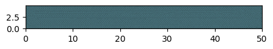

Thermal-Shock Fracture¤
Colab Setup (Install Dependencies)
# Only run this if we are in Google Colab
if 'google.colab' in str(get_ipython()):
print("Installing dependencies from pyproject.toml...")
# This installs the repo itself (and its dependencies)
!apt-get install gmsh
!apt-get install -qq xvfb libgl1-mesa-glx
!pip install pyvista -qq
!pip install -q "git+https://github.com/smec-ethz/tatva-docs.git"
print("Installation complete!")
In this example, we demonstrate the power of the energy-centric approach by simulating a complex multiphysics problem: Thermal Shock Fracture where we will use Phase-field approach to simulate fracture process.
A hot ceramic plate (\(T_{initial} = 500^\circ C\)) is suddenly submerged in a cold bath (\(T_{boundary} = 0^\circ C\)) . The rapid cooling creates tensile stresses on the surface, causing cracks to initiate and propagate inward.
The Physics (3-Way Coupling):
- Thermal: Heat diffusion (potentially degraded by cracks).
- Mechanical: Thermal contraction creates stress; Stiffness is degraded by damage.
- Phase-Field: Damage evolves to minimize the stored elastic energy and surface energy.
The total energy functional is:
Where the elastic energy is degraded by the damage variable \(d\):
And the fracture energy follows the standard AT2 regularization:
This complex coupling is handled automatically by the Tatva engine.
import jax
jax.config.update("jax_enable_x64", True)
from typing import NamedTuple
import equinox as eqx
import gmsh
import jax.numpy as jnp
import matplotlib.pyplot as plt
import meshio
import numpy as np
from jax import Array
from jax_autovmap import autovmap
from tatva import Mesh, Operator, element
Model Setup¤
We generate a fine, uniform mesh for a rectangular ceramic strip. The mesh size must be smaller than the phase field length scale \(l_0\).
Generate a strip mesh using gmsh
def generate_strip_mesh(width: float, height: float, mesh_size: float):
import os
mesh_dir = os.path.join(os.getcwd(), "../meshes")
os.makedirs(mesh_dir, exist_ok=True)
output_filename = os.path.join(mesh_dir, "strip_fine.msh")
gmsh.initialize()
gmsh.model.add("strip")
p1 = gmsh.model.geo.addPoint(0, 0, 0, mesh_size)
p2 = gmsh.model.geo.addPoint(width, 0, 0, mesh_size)
p3 = gmsh.model.geo.addPoint(width, height, 0, mesh_size)
p4 = gmsh.model.geo.addPoint(0, height, 0, mesh_size)
l1 = gmsh.model.geo.addLine(p1, p2)
l2 = gmsh.model.geo.addLine(p2, p3)
l3 = gmsh.model.geo.addLine(p3, p4)
l4 = gmsh.model.geo.addLine(p4, p1)
loop = gmsh.model.geo.addCurveLoop([l1, l2, l3, l4])
surface = gmsh.model.geo.addPlaneSurface([loop])
gmsh.model.geo.synchronize()
gmsh.model.addPhysicalGroup(2, [surface], 1, name="domain")
# Boundary groups
gmsh.model.addPhysicalGroup(1, [l1, l2, l3, l4], 2, name="boundaries")
gmsh.model.mesh.generate(2)
gmsh.write(output_filename)
gmsh.finalize()
_mesh = meshio.read(output_filename)
mesh = Mesh(coords=_mesh.points[:, :2], elements=_mesh.cells_dict["triangle"])
return mesh
L = 50 # Length mm
H = 4.9 # Height mm
l0 = 0.2 # 0.2 # Length scale parameter
h_mesh = l0 / 2.0 # Mesh size must be approx l0/2
mesh = generate_strip_mesh(width=L, height=H, mesh_size=h_mesh)
n_nodes = mesh.coords.shape[0]
print(f"Number of nodes: {n_nodes}")
plt.figure(figsize=(5, 5))
ax = plt.axes()
ax.tripcolor(
*mesh.coords.T,
mesh.elements,
facecolors=jnp.zeros(mesh.elements.shape[0]),
edgecolors="k",
lw=0.1,
cmap="managua_r",
)
ax.axhline(0, color="k", lw=0.4)
ax.set_aspect("equal")
ax.margins(0.0, 0.0)
plt.show()
Info : Meshing 1D...
Info : [ 0%] Meshing curve 1 (Line)
Info : [ 30%] Meshing curve 2 (Line)
Info : [ 60%] Meshing curve 3 (Line)
Info : [ 80%] Meshing curve 4 (Line)
Info : Done meshing 1D (Wall 0.000743599s, CPU 0.000928s)
Info : Meshing 2D...
Info : Meshing surface 1 (Plane, Frontal-Delaunay)
Info : Done meshing 2D (Wall 0.891818s, CPU 0.880898s)
Info : 29077 nodes 58156 elements
Info : Writing '/home/pundir/Documents/research-notes/tatva-examples/examples/../meshes/strip_fine.msh'...
Info : Done writing '/home/pundir/Documents/research-notes/tatva-examples/examples/../meshes/strip_fine.msh'
Number of nodes: 29077

class Material(NamedTuple):
E: float = 340e3 # Young's modulus (N/mm2)
nu: float = 0.2 # Poisson's ratio
alpha: float = 8e-6 # Thermal expansion (1/K)
kappa: float = 300 # Thermal conductivity
Gc: float = 0.042 # Critical energy release rate (Fracture toughness N/m)
l0: float = l0 # Phase field length scale
mat = Material()
mu = mat.E / (2 * (1 + mat.nu))
lmbda = mat.E * mat.nu / ((1 + mat.nu) * (1 - 2 * mat.nu))
Energy Functionals¤
This is the core of the energy-centric approach. We define densities for Elasticity, Thermal, and Fracture.
Coupled Elastic Energy¤
Strain energy is driven by thermal contraction and degraded by damage:
where \(\boldsymbol{\epsilon}_{el} = \boldsymbol{\epsilon}_{total} - \alpha \Delta T \mathbf{I}\).
@autovmap(eps=2, mu=0, lmbda=0)
def compute_stress(eps: Array, mu: float, lmbda: float) -> Array:
"""Compute the stress tensor from the strain tensor."""
I = jnp.eye(2)
return 2 * mu * eps + lmbda * jnp.trace(eps) * I
@autovmap(eps=2, mu=0, lmbda=0)
def strain_energy(eps: Array, mu: float, lmbda: float) -> Array:
"""Compute the strain energy density."""
sig = compute_stress(eps, mu, lmbda)
return 0.5 * jnp.einsum("ij,ij->", sig, eps)
@autovmap(grad_u=2, theta_quad=0, mu=0, lmbda=0, alpha=0)
def compute_elastic_energy_density(
grad_u: Array, theta_quad: Array, mu: float, lmbda: float, alpha: float
) -> Array:
"""Computes the tensile part of the strain energy (driven by thermal contraction)."""
# Total Strain
eps_total = 0.5 * (grad_u + grad_u.T)
# Thermal Strain (Isotropic expansion/contraction)
eps_thermal = alpha * theta_quad * jnp.eye(2)
# Elastic Strain
eps_el = eps_total - eps_thermal
tr_eps = jnp.trace(eps_el)
tr_plus = jnp.maximum(tr_eps, 0.0) # macalay_bracket_plus(tr_eps)
tr_minus = jnp.minimum(tr_eps, 0.0) # macalay_bracket_minus(tr_eps)
# Volumetric/deviatoric split
dim = eps_el.shape[0]
eps_vol = (tr_eps / dim) * jnp.eye(2)
eps_dev = eps_el - eps_vol
K = lmbda + 2 * mu / dim # Bulk modulus
# Volumetric and deviatoric strain energy densities
psi_vol = 0.5 * K * tr_plus**2 + mu * jnp.einsum("ij,ij->", eps_dev, eps_dev)
psi_dev = 0.5 * K * tr_minus**2
return psi_vol, psi_dev
Fracture Energy (Phase Field)¤
The geometric resistance to cracking.
We employ a "History Field" strategy. Damage is irreversible; it should only grow. A common way to handle this in phase-field is to drive damage by the maximum historical strain energy (\(\mathcal{H}\)).
@autovmap(d=0)
def degradation_function(d: Array) -> Array:
"""Degradation function g(d) = (1-d)^2 + small_residual"""
return (1.0 - d) ** 2 + 1e-6
@autovmap(d=0, grad_d=1, Gc=0, l0=0)
def fracture_energy_density(d: Array, grad_d: Array, Gc: float, l0: float) -> Array:
"""Griffith energy approximation."""
w_d = (d**2) / (2 * l0)
w_grad = (l0 / 2.0) * jnp.dot(grad_d, grad_d)
return Gc * (w_d + w_grad)
Thermal Problem (Simple Transient Heat Equation)¤
We treat Thermal as a simple linear step for this demo (Backward Euler)
@autovmap(grad_theta=1, kappa=0)
def thermal_energy_density(grad_theta: Array, kappa: float) -> Array:
"""compute_thermal energy_density
Args:
grad_theta (Array): gradient of temperature field
kappa (float): thermal conductivity
Returns:
Array: thermal energy density
"""
return 0.5 * kappa * jnp.einsum("i, i->", grad_theta, grad_theta)
Total Energy for each physical process¤
We will now define the energy functional for each process. Since all the 3 process are happening int he same domain, we can define a sinle Operator.
tri = element.Tri3()
op = Operator(mesh, tri)
First, we start with defining the total potential for thermal process. Here we define the temporal evolution.
@jax.jit
def total_thermal_energy(theta_new, theta_old, dt):
theta_new_quad = op.eval(theta_new)
theta_old_quad = op.eval(theta_old)
grad_theta = op.grad(theta_new)
diff_term = thermal_energy_density(grad_theta, mat.kappa)
inertial_term = (0.5 / dt) * (theta_new_quad - theta_old_quad) ** 2
return op.integrate(diff_term + inertial_term)
Next, we define the fracture and deformation total energies under quasi-static assumption.
@jax.jit
def total_damage_energy(d_flat: Array, history_field_quad: Array) -> Array:
"""
Minimizing this w.r.t 'd' solves the Phase Field evolution.
Args:
d_flat: Nodal damage values
history_field_quad: Max historical strain energy at quadrature points
"""
grad_d = op.grad(d_flat)
d_quad = op.eval(d_flat)
g_d = degradation_function(d_quad)
strain_energy_comp = op.integrate(g_d * history_field_quad)
fracture_dens = fracture_energy_density(d_quad, grad_d, mat.Gc, mat.l0)
fracture_energy_comp = op.integrate(fracture_dens)
return strain_energy_comp + fracture_energy_comp
@jax.jit
def total_strain_energy(
u_flat: Array, theta_flat: Array, theta_ref: Array, d_flat: Array
) -> Array:
"""
Minimizing this w.r.t 'u' solves Mechanical Equilibrium.
"""
u = u_flat.reshape(-1, 2)
grad_u = op.grad(u)
theta_quad = op.eval(theta_flat)
delta_theta = theta_quad - theta_ref
d_quad = op.eval(d_flat)
# Compute undegraded elastic energy density
psi_plus, psi_minus = compute_elastic_energy_density(
grad_u, delta_theta, mu, lmbda, mat.alpha
)
g_d = degradation_function(d_quad)
return op.integrate(g_d * psi_plus + psi_minus)
Matrix-Free Solvers Setup¤
We define our gradients (residuals) and tangent operators. Note the simplicity: we just ask JAX to differentiate the potentials. We use a projected conjugate gradient to apply the Diriechlet boundary conditions.
grad_thermal = jax.jacrev(total_thermal_energy, argnums=0)
grad_mechanical = jax.jacrev(total_strain_energy, argnums=0)
grad_damage = jax.jacrev(total_damage_energy, argnums=0)
@eqx.filter_jit
def compute_tangent(dx, u_prev, gradient, fixed_dofs):
"""Generic Tangent Vector Product for any physics"""
dx_proj = dx.at[fixed_dofs].set(0)
tangent = jax.jvp(gradient, (u_prev,), (dx_proj,))[1]
return tangent.at[fixed_dofs].set(0)
Newton-Krylov solver
@eqx.filter_jit
def conjugate_gradient(A, b, atol=1e-8, max_iter=100):
iiter = 0
def body_fun(state):
b, p, r, rsold, x, iiter = state
Ap = A(p)
alpha = rsold / jnp.vdot(p, Ap)
x = x + jnp.dot(alpha, p)
r = r - jnp.dot(alpha, Ap)
rsnew = jnp.vdot(r, r)
p = r + (rsnew / rsold) * p
rsold = rsnew
iiter = iiter + 1
return (b, p, r, rsold, x, iiter)
def cond_fun(state):
b, p, r, rsold, x, iiter = state
return jnp.logical_and(jnp.sqrt(rsold) > atol, iiter < max_iter)
x = jnp.full_like(b, fill_value=0.0)
r = b - A(x)
p = r
rsold = jnp.vdot(r, p)
b, p, r, rsold, x, iiter = jax.lax.while_loop(
cond_fun, body_fun, (b, p, r, rsold, x, iiter)
)
return x, iiter
def newton_krylov_solver(
u,
fext,
gradient,
compute_tangent,
fixed_dofs,
tol: float = 1e-8,
):
fint = gradient(u)
iiter = 0
norm_res = 1.0
max_iter = 80
while norm_res > tol and iiter < max_iter:
residual = fext - fint
residual = residual.at[fixed_dofs].set(0)
A = eqx.Partial(
compute_tangent, u_prev=u, gradient=gradient, fixed_dofs=fixed_dofs
)
du, cg_iiter = conjugate_gradient(A=A, b=residual, atol=1e-8, max_iter=1000)
u = u.at[:].add(du)
fint = gradient(u)
residual = fext - fint
residual = residual.at[fixed_dofs].set(0)
norm_res = jnp.linalg.norm(residual)
iiter += 1
jax.debug.print(
" Newton Iteration {iiter}, Residual Norm: {norm_res:.3e}",
iiter=iiter,
norm_res=norm_res,
)
return u, norm_res
Applying boundary conditions¤
x_min = jnp.min(mesh.coords[:, 0])
x_max = jnp.max(mesh.coords[:, 0])
y_min = jnp.min(mesh.coords[:, 1])
y_max = jnp.max(mesh.coords[:, 1])
eps_geo = 1e-5
bnd_nodes = jnp.where(
(mesh.coords[:, 0] < eps_geo)
| (mesh.coords[:, 0] > L - eps_geo)
| (mesh.coords[:, 1] < eps_geo)
| (mesh.coords[:, 1] > H - eps_geo)
)[0]
left_nodes = jnp.where(mesh.coords[:, 0] == x_min)[0]
bottom_nodes = jnp.where(mesh.coords[:, 1] == y_min)[0]
top_nodes = jnp.where(mesh.coords[:, 1] == y_max)[0]
right_nodes = jnp.where(mesh.coords[:, 0] == x_max)[0]
Simulation Loop: The Staggered Solver¤
We implement a robust staggered scheme for Thermal Shock:
- Initialize: \(T = 500\), \(d = 0\).
- Apply BC: Boundary \(T = 0\).
- Time Loop:
- Step A (Thermal): Solve heat diffusion.
- Step B (Coupling): Compute strain energy \(\Psi_0(u, T)\) and update History \(\mathcal{H} = \max(\mathcal{H}, \Psi_0)\).
- Step C (Phase Field): Solve for \(d\) using \(\mathcal{H}\).
- Step D (Mechanical): Solve for \(u\) using new \(T\) and \(d\).
u_sol = jnp.zeros(n_nodes * 2)
d_sol = jnp.zeros(n_nodes)
theta_sol = jnp.ones(n_nodes) * T_initial
fext_u = jnp.zeros_like(u_sol)
fext_d = jnp.zeros_like(d_sol)
fext_th = jnp.zeros_like(theta_sol)
fixed_dofs_th = jnp.concatenate([left_nodes, bottom_nodes]) # bnd_nodes
fixed_vals_th = jnp.full(len(fixed_dofs_th), 300) # Cold bath
fixed_dofs_u = jnp.concatenate([2 * top_nodes + 1, 2 * right_nodes])
fixed_dofs_d = jnp.array([], dtype=int)
u_reshaped = u_sol.reshape(-1, 2)
grad_u = op.grad(u_reshaped)
theta_quad = op.eval(theta_sol)
theta_quad_ref = op.eval(theta_sol)
delta_theta = theta_quad - theta_quad_ref
psi_plus, psi_minus = compute_elastic_energy_density(
grad_u, delta_theta, mu, lmbda, mat.alpha
)
history_field = psi_plus # Start with initial elastic energy
dt = 1e-5
n_time_steps = 300
results_u = []
results_d = []
results_T = []
print(f"Starting Simulation with {n_nodes} nodes...")
for step in range(1, n_time_steps + 1):
print(f"--- Time Step {step} ---")
theta_sol = theta_sol.at[fixed_dofs_th].set(fixed_vals_th)
grad_fn_th = eqx.Partial(grad_thermal, theta_old=theta_sol, dt=dt)
theta_sol, norm_T = newton_krylov_solver(
theta_sol,
fext=fext_th,
gradient=grad_fn_th,
compute_tangent=compute_tangent,
fixed_dofs=fixed_dofs_th,
tol=1e-7,
)
for stag in range(1):
u_reshaped = u_sol.reshape(-1, 2)
grad_u = op.grad(u_reshaped)
theta_quad = op.eval(theta_sol)
delta_theta = theta_quad - theta_quad_ref
psi_plus_current, psi_minus_current = compute_elastic_energy_density(
grad_u, delta_theta, mu, lmbda, mat.alpha
)
history_field = jnp.maximum(history_field, psi_plus_current)
# Solve Phase Field
grad_fn_d = eqx.Partial(grad_damage, history_field_quad=history_field)
d_sol, norm_d = newton_krylov_solver(
d_sol,
fext=fext_d,
gradient=grad_fn_d,
compute_tangent=compute_tangent,
fixed_dofs=fixed_dofs_d,
)
# Solve Mechanical
grad_fn_u = eqx.Partial(
grad_mechanical,
theta_flat=theta_sol,
theta_ref=theta_quad_ref,
d_flat=d_sol,
)
u_sol, norm_u = newton_krylov_solver(
u_sol,
fext=fext_u,
gradient=grad_fn_u,
compute_tangent=compute_tangent,
fixed_dofs=fixed_dofs_u,
)
print(f" Iter {stag}: Res_d={norm_d:.2e}, Res_u={norm_u:.2e}")
results_u.append(u_sol)
results_d.append(d_sol)
results_T.append(theta_sol)
Output
Starting Simulation with 29077 nodes...
--- Time Step 1 ---
Newton Iteration 1, Residual Norm: 7.534e-09
Newton Iteration 1, Residual Norm: 8.811e-09
Newton Iteration 1, Residual Norm: 2.628e+00
Newton Iteration 2, Residual Norm: 9.845e-02
Newton Iteration 3, Residual Norm: 1.830e-04
Newton Iteration 4, Residual Norm: 9.949e-09
Iter 0: Res_d=8.81e-09, Res_u=9.95e-09
--- Time Step 2 ---
Newton Iteration 1, Residual Norm: 9.717e-09
Newton Iteration 1, Residual Norm: 7.276e-09
Newton Iteration 1, Residual Norm: 2.461e+00
Newton Iteration 2, Residual Norm: 6.174e-02
Newton Iteration 3, Residual Norm: 1.400e-03
Newton Iteration 4, Residual Norm: 9.950e-09
Iter 0: Res_d=7.28e-09, Res_u=9.95e-09
--- Time Step 3 ---
Newton Iteration 1, Residual Norm: 7.273e-09
Newton Iteration 1, Residual Norm: 7.093e-09
Newton Iteration 1, Residual Norm: 2.698e+00
Newton Iteration 2, Residual Norm: 4.024e-02
Newton Iteration 3, Residual Norm: 7.229e-08
Newton Iteration 4, Residual Norm: 9.886e-09
Iter 0: Res_d=7.09e-09, Res_u=9.89e-09
--- Time Step 4 ---
Newton Iteration 1, Residual Norm: 6.295e-09
Newton Iteration 1, Residual Norm: 7.360e-09
Newton Iteration 1, Residual Norm: 2.560e+00
Newton Iteration 2, Residual Norm: 7.019e-03
Newton Iteration 3, Residual Norm: 1.604e-08
Newton Iteration 4, Residual Norm: 9.891e-09
Iter 0: Res_d=7.36e-09, Res_u=9.89e-09
--- Time Step 5 ---
Newton Iteration 1, Residual Norm: 1.125e-08
Newton Iteration 1, Residual Norm: 7.035e-09
Newton Iteration 1, Residual Norm: 2.486e+00
Newton Iteration 2, Residual Norm: 7.051e-02
Newton Iteration 3, Residual Norm: 1.267e-07
Newton Iteration 4, Residual Norm: 9.808e-09
Iter 0: Res_d=7.03e-09, Res_u=9.81e-09
--- Time Step 6 ---
Newton Iteration 1, Residual Norm: 9.629e-09
Newton Iteration 1, Residual Norm: 9.520e-09
Newton Iteration 1, Residual Norm: 2.519e+00
Newton Iteration 2, Residual Norm: 1.183e-02
Newton Iteration 3, Residual Norm: 9.985e-09
Iter 0: Res_d=9.52e-09, Res_u=9.99e-09
--- Time Step 7 ---
Newton Iteration 1, Residual Norm: 8.810e-09
Newton Iteration 1, Residual Norm: 8.982e-09
Newton Iteration 1, Residual Norm: 2.355e+00
Newton Iteration 2, Residual Norm: 4.398e-02
Newton Iteration 3, Residual Norm: 3.317e-08
Newton Iteration 4, Residual Norm: 9.928e-09
Iter 0: Res_d=8.98e-09, Res_u=9.93e-09
--- Time Step 8 ---
Newton Iteration 1, Residual Norm: 8.340e-09
Newton Iteration 1, Residual Norm: 8.461e-09
Newton Iteration 1, Residual Norm: 2.191e+00
Newton Iteration 2, Residual Norm: 3.990e-02
Newton Iteration 3, Residual Norm: 5.867e-08
Newton Iteration 4, Residual Norm: 9.918e-09
Iter 0: Res_d=8.46e-09, Res_u=9.92e-09
--- Time Step 9 ---
Newton Iteration 1, Residual Norm: 8.168e-09
Newton Iteration 1, Residual Norm: 7.962e-09
Newton Iteration 1, Residual Norm: 2.128e+00
Newton Iteration 2, Residual Norm: 2.300e-03
Newton Iteration 3, Residual Norm: 1.308e-08
Newton Iteration 4, Residual Norm: 9.263e-09
Iter 0: Res_d=7.96e-09, Res_u=9.26e-09
--- Time Step 10 ---
Newton Iteration 1, Residual Norm: 7.843e-09
Newton Iteration 1, Residual Norm: 7.491e-09
Newton Iteration 1, Residual Norm: 2.117e+00
Newton Iteration 2, Residual Norm: 1.578e-05
Newton Iteration 3, Residual Norm: 9.608e-09
Iter 0: Res_d=7.49e-09, Res_u=9.61e-09
--- Time Step 11 ---
Newton Iteration 1, Residual Norm: 7.555e-09
Newton Iteration 1, Residual Norm: 7.055e-09
Newton Iteration 1, Residual Norm: 2.272e+00
Newton Iteration 2, Residual Norm: 5.456e-02
Newton Iteration 3, Residual Norm: 1.349e-07
Newton Iteration 4, Residual Norm: 9.966e-09
Iter 0: Res_d=7.05e-09, Res_u=9.97e-09
--- Time Step 12 ---
Newton Iteration 1, Residual Norm: 7.382e-09
Newton Iteration 1, Residual Norm: 9.620e-09
Newton Iteration 1, Residual Norm: 2.146e+00
Newton Iteration 2, Residual Norm: 1.023e-03
Newton Iteration 3, Residual Norm: 9.963e-09
Iter 0: Res_d=9.62e-09, Res_u=9.96e-09
--- Time Step 13 ---
Newton Iteration 1, Residual Norm: 7.400e-09
Newton Iteration 1, Residual Norm: 9.063e-09
Newton Iteration 1, Residual Norm: 1.995e+00
Newton Iteration 2, Residual Norm: 8.497e-03
Newton Iteration 3, Residual Norm: 4.222e-08
Newton Iteration 4, Residual Norm: 9.893e-09
Iter 0: Res_d=9.06e-09, Res_u=9.89e-09
--- Time Step 14 ---
Newton Iteration 1, Residual Norm: 7.354e-09
Newton Iteration 1, Residual Norm: 8.571e-09
Newton Iteration 1, Residual Norm: 1.934e+00
Newton Iteration 2, Residual Norm: 1.452e-05
Newton Iteration 3, Residual Norm: 9.718e-09
Iter 0: Res_d=8.57e-09, Res_u=9.72e-09
--- Time Step 15 ---
Newton Iteration 1, Residual Norm: 7.176e-09
Newton Iteration 1, Residual Norm: 8.130e-09
Newton Iteration 1, Residual Norm: 1.830e+00
Newton Iteration 2, Residual Norm: 1.456e-05
Newton Iteration 3, Residual Norm: 9.604e-09
Iter 0: Res_d=8.13e-09, Res_u=9.60e-09
--- Time Step 16 ---
Newton Iteration 1, Residual Norm: 7.138e-09
Newton Iteration 1, Residual Norm: 7.738e-09
Newton Iteration 1, Residual Norm: 1.672e+00
Newton Iteration 2, Residual Norm: 3.576e-02
Newton Iteration 3, Residual Norm: 9.868e-09
Iter 0: Res_d=7.74e-09, Res_u=9.87e-09
--- Time Step 17 ---
Newton Iteration 1, Residual Norm: 7.264e-09
Newton Iteration 1, Residual Norm: 7.383e-09
Newton Iteration 1, Residual Norm: 1.583e+00
Newton Iteration 2, Residual Norm: 9.864e-03
Newton Iteration 3, Residual Norm: 3.459e-08
Newton Iteration 4, Residual Norm: 9.830e-09
Iter 0: Res_d=7.38e-09, Res_u=9.83e-09
--- Time Step 18 ---
Newton Iteration 1, Residual Norm: 1.196e-08
Newton Iteration 1, Residual Norm: 7.063e-09
Newton Iteration 1, Residual Norm: 1.472e+00
Newton Iteration 2, Residual Norm: 1.365e-02
Newton Iteration 3, Residual Norm: 2.201e-08
Newton Iteration 4, Residual Norm: 9.965e-09
Iter 0: Res_d=7.06e-09, Res_u=9.97e-09
--- Time Step 19 ---
Newton Iteration 1, Residual Norm: 1.142e-08
Newton Iteration 1, Residual Norm: 6.778e-09
Newton Iteration 1, Residual Norm: 1.324e+00
Newton Iteration 2, Residual Norm: 9.998e-06
Newton Iteration 3, Residual Norm: 9.871e-09
Iter 0: Res_d=6.78e-09, Res_u=9.87e-09
--- Time Step 20 ---
Newton Iteration 1, Residual Norm: 1.104e-08
Newton Iteration 1, Residual Norm: 9.657e-09
Newton Iteration 1, Residual Norm: 1.355e+00
Newton Iteration 2, Residual Norm: 3.874e-02
Newton Iteration 3, Residual Norm: 7.203e-08
Newton Iteration 4, Residual Norm: 9.848e-09
Iter 0: Res_d=9.66e-09, Res_u=9.85e-09
--- Time Step 21 ---
Newton Iteration 1, Residual Norm: 1.079e-08
Newton Iteration 1, Residual Norm: 9.303e-09
Newton Iteration 1, Residual Norm: 1.238e+00
Newton Iteration 2, Residual Norm: 4.336e-02
Newton Iteration 3, Residual Norm: 1.105e-07
Newton Iteration 4, Residual Norm: 9.839e-09
Iter 0: Res_d=9.30e-09, Res_u=9.84e-09
--- Time Step 22 ---
Newton Iteration 1, Residual Norm: 1.041e-08
Newton Iteration 1, Residual Norm: 8.978e-09
Newton Iteration 1, Residual Norm: 1.132e+00
Newton Iteration 2, Residual Norm: 3.589e-03
Newton Iteration 3, Residual Norm: 1.795e-08
Newton Iteration 4, Residual Norm: 9.901e-09
Iter 0: Res_d=8.98e-09, Res_u=9.90e-09
--- Time Step 23 ---
Newton Iteration 1, Residual Norm: 1.004e-08
Newton Iteration 1, Residual Norm: 8.678e-09
Newton Iteration 1, Residual Norm: 1.066e+00
Newton Iteration 2, Residual Norm: 1.481e-02
Newton Iteration 3, Residual Norm: 2.966e-08
Newton Iteration 4, Residual Norm: 9.872e-09
Iter 0: Res_d=8.68e-09, Res_u=9.87e-09
--- Time Step 24 ---
Newton Iteration 1, Residual Norm: 9.876e-09
Newton Iteration 1, Residual Norm: 8.409e-09
Newton Iteration 1, Residual Norm: 1.141e+00
Newton Iteration 2, Residual Norm: 5.067e-03
Newton Iteration 3, Residual Norm: 2.777e-08
Newton Iteration 4, Residual Norm: 9.916e-09
Iter 0: Res_d=8.41e-09, Res_u=9.92e-09
--- Time Step 25 ---
Newton Iteration 1, Residual Norm: 9.656e-09
Newton Iteration 1, Residual Norm: 8.168e-09
Newton Iteration 1, Residual Norm: 1.285e+00
Newton Iteration 2, Residual Norm: 3.608e-02
Newton Iteration 3, Residual Norm: 8.784e-08
Newton Iteration 4, Residual Norm: 9.945e-09
Iter 0: Res_d=8.17e-09, Res_u=9.94e-09
--- Time Step 26 ---
Newton Iteration 1, Residual Norm: 9.570e-09
Newton Iteration 1, Residual Norm: 7.955e-09
Newton Iteration 1, Residual Norm: 1.247e+00
Newton Iteration 2, Residual Norm: 8.309e-03
Newton Iteration 3, Residual Norm: 2.384e-08
Newton Iteration 4, Residual Norm: 9.826e-09
Iter 0: Res_d=7.96e-09, Res_u=9.83e-09
--- Time Step 27 ---
Newton Iteration 1, Residual Norm: 9.323e-09
Newton Iteration 1, Residual Norm: 7.774e-09
Newton Iteration 1, Residual Norm: 1.160e+00
Newton Iteration 2, Residual Norm: 9.526e-06
Newton Iteration 3, Residual Norm: 9.881e-09
Iter 0: Res_d=7.77e-09, Res_u=9.88e-09
--- Time Step 28 ---
Newton Iteration 1, Residual Norm: 9.159e-09
Newton Iteration 1, Residual Norm: 7.639e-09
Newton Iteration 1, Residual Norm: 1.077e+00
Newton Iteration 2, Residual Norm: 6.540e-06
Newton Iteration 3, Residual Norm: 9.911e-09
Iter 0: Res_d=7.64e-09, Res_u=9.91e-09
--- Time Step 29 ---
Newton Iteration 1, Residual Norm: 9.069e-09
Newton Iteration 1, Residual Norm: 7.545e-09
Newton Iteration 1, Residual Norm: 9.985e-01
Newton Iteration 2, Residual Norm: 6.834e-06
Newton Iteration 3, Residual Norm: 9.886e-09
Iter 0: Res_d=7.54e-09, Res_u=9.89e-09
--- Time Step 30 ---
Newton Iteration 1, Residual Norm: 9.265e-09
Newton Iteration 1, Residual Norm: 7.495e-09
Newton Iteration 1, Residual Norm: 9.426e-01
Newton Iteration 2, Residual Norm: 9.308e-06
Newton Iteration 3, Residual Norm: 9.968e-09
Iter 0: Res_d=7.49e-09, Res_u=9.97e-09
--- Time Step 31 ---
Newton Iteration 1, Residual Norm: 9.002e-09
Newton Iteration 1, Residual Norm: 7.503e-09
Newton Iteration 1, Residual Norm: 8.794e-01
Newton Iteration 2, Residual Norm: 1.352e-02
Newton Iteration 3, Residual Norm: 1.874e-08
Newton Iteration 4, Residual Norm: 9.918e-09
Iter 0: Res_d=7.50e-09, Res_u=9.92e-09
--- Time Step 32 ---
Newton Iteration 1, Residual Norm: 9.212e-09
Newton Iteration 1, Residual Norm: 7.573e-09
Newton Iteration 1, Residual Norm: 8.145e-01
Newton Iteration 2, Residual Norm: 7.588e-04
Newton Iteration 3, Residual Norm: 9.995e-09
Iter 0: Res_d=7.57e-09, Res_u=9.99e-09
--- Time Step 33 ---
Newton Iteration 1, Residual Norm: 9.146e-09
Newton Iteration 1, Residual Norm: 7.708e-09
Newton Iteration 1, Residual Norm: 7.554e-01
Newton Iteration 2, Residual Norm: 2.281e-03
Newton Iteration 3, Residual Norm: 1.530e-08
Newton Iteration 4, Residual Norm: 9.967e-09
Iter 0: Res_d=7.71e-09, Res_u=9.97e-09
--- Time Step 34 ---
Newton Iteration 1, Residual Norm: 8.893e-09
Newton Iteration 1, Residual Norm: 7.906e-09
Newton Iteration 1, Residual Norm: 7.864e-01
Newton Iteration 2, Residual Norm: 1.338e-03
Newton Iteration 3, Residual Norm: 9.986e-09
Iter 0: Res_d=7.91e-09, Res_u=9.99e-09
--- Time Step 35 ---
Newton Iteration 1, Residual Norm: 8.821e-09
Newton Iteration 1, Residual Norm: 8.176e-09
Newton Iteration 1, Residual Norm: 7.911e-01
Newton Iteration 2, Residual Norm: 1.309e-02
Newton Iteration 3, Residual Norm: 4.312e-08
Newton Iteration 4, Residual Norm: 9.868e-09
Iter 0: Res_d=8.18e-09, Res_u=9.87e-09
--- Time Step 36 ---
Newton Iteration 1, Residual Norm: 8.825e-09
Newton Iteration 1, Residual Norm: 8.525e-09
Newton Iteration 1, Residual Norm: 7.526e-01
Newton Iteration 2, Residual Norm: 2.105e-02
Newton Iteration 3, Residual Norm: 7.817e-08
Newton Iteration 4, Residual Norm: 9.907e-09
Iter 0: Res_d=8.52e-09, Res_u=9.91e-09
--- Time Step 37 ---
Newton Iteration 1, Residual Norm: 8.843e-09
Newton Iteration 1, Residual Norm: 8.987e-09
Newton Iteration 1, Residual Norm: 7.248e-01
Newton Iteration 2, Residual Norm: 8.546e-06
Newton Iteration 3, Residual Norm: 9.845e-09
Iter 0: Res_d=8.99e-09, Res_u=9.84e-09
--- Time Step 38 ---
Newton Iteration 1, Residual Norm: 8.698e-09
Newton Iteration 1, Residual Norm: 9.670e-09
Newton Iteration 1, Residual Norm: 6.749e-01
Newton Iteration 2, Residual Norm: 8.233e-06
Newton Iteration 3, Residual Norm: 9.869e-09
Iter 0: Res_d=9.67e-09, Res_u=9.87e-09
--- Time Step 39 ---
Newton Iteration 1, Residual Norm: 8.803e-09
Newton Iteration 1, Residual Norm: 7.290e-09
Newton Iteration 1, Residual Norm: 6.483e-01
Newton Iteration 2, Residual Norm: 9.672e-06
Newton Iteration 3, Residual Norm: 9.897e-09
Iter 0: Res_d=7.29e-09, Res_u=9.90e-09
--- Time Step 40 ---
Newton Iteration 1, Residual Norm: 8.734e-09
Newton Iteration 1, Residual Norm: 7.998e-09
Newton Iteration 1, Residual Norm: 6.202e-01
Newton Iteration 2, Residual Norm: 8.811e-06
Newton Iteration 3, Residual Norm: 9.984e-09
Iter 0: Res_d=8.00e-09, Res_u=9.98e-09
--- Time Step 41 ---
Newton Iteration 1, Residual Norm: 8.873e-09
Newton Iteration 1, Residual Norm: 9.278e-09
Newton Iteration 1, Residual Norm: 6.044e-01
Newton Iteration 2, Residual Norm: 9.493e-06
Newton Iteration 3, Residual Norm: 9.718e-09
Iter 0: Res_d=9.28e-09, Res_u=9.72e-09
--- Time Step 42 ---
Newton Iteration 1, Residual Norm: 8.744e-09
Newton Iteration 1, Residual Norm: 6.872e-09
Newton Iteration 1, Residual Norm: 6.055e-01
Newton Iteration 2, Residual Norm: 1.457e-02
Newton Iteration 3, Residual Norm: 8.320e-08
Newton Iteration 4, Residual Norm: 9.813e-09
Iter 0: Res_d=6.87e-09, Res_u=9.81e-09
--- Time Step 43 ---
Newton Iteration 1, Residual Norm: 8.743e-09
Newton Iteration 1, Residual Norm: 7.323e-09
Newton Iteration 1, Residual Norm: 6.258e-01
Newton Iteration 2, Residual Norm: 1.491e-05
Newton Iteration 3, Residual Norm: 2.162e-08
Newton Iteration 4, Residual Norm: 9.868e-09
Iter 0: Res_d=7.32e-09, Res_u=9.87e-09
--- Time Step 44 ---
Newton Iteration 1, Residual Norm: 8.811e-09
Newton Iteration 1, Residual Norm: 7.562e-09
Newton Iteration 1, Residual Norm: 6.547e-01
Newton Iteration 2, Residual Norm: 3.664e-05
Newton Iteration 3, Residual Norm: 1.942e-07
Newton Iteration 4, Residual Norm: 9.952e-09
Iter 0: Res_d=7.56e-09, Res_u=9.95e-09
--- Time Step 45 ---
Newton Iteration 1, Residual Norm: 8.573e-09
Newton Iteration 1, Residual Norm: 8.712e-09
Newton Iteration 1, Residual Norm: 7.094e-01
Newton Iteration 2, Residual Norm: 6.399e-03
Newton Iteration 3, Residual Norm: 4.237e-06
Newton Iteration 4, Residual Norm: 5.928e-08
Newton Iteration 5, Residual Norm: 9.917e-09
Iter 0: Res_d=8.71e-09, Res_u=9.92e-09
--- Time Step 46 ---
Newton Iteration 1, Residual Norm: 8.811e-09
Newton Iteration 1, Residual Norm: 8.565e-09
Newton Iteration 1, Residual Norm: 6.939e-01
Newton Iteration 2, Residual Norm: 2.475e-04
Newton Iteration 3, Residual Norm: 3.530e-06
Newton Iteration 4, Residual Norm: 3.912e-08
Newton Iteration 5, Residual Norm: 9.971e-09
Iter 0: Res_d=8.57e-09, Res_u=9.97e-09
--- Time Step 47 ---
Newton Iteration 1, Residual Norm: 8.670e-09
Newton Iteration 1, Residual Norm: 8.926e-09
Newton Iteration 1, Residual Norm: 7.206e-01
Newton Iteration 2, Residual Norm: 4.134e-04
Newton Iteration 3, Residual Norm: 1.000e-05
Newton Iteration 4, Residual Norm: 1.274e-07
Newton Iteration 5, Residual Norm: 9.974e-09
Iter 0: Res_d=8.93e-09, Res_u=9.97e-09
--- Time Step 48 ---
Newton Iteration 1, Residual Norm: 8.760e-09
Newton Iteration 1, Residual Norm: 7.555e-09
Newton Iteration 1, Residual Norm: 7.654e-01
Newton Iteration 2, Residual Norm: 1.989e-04
Newton Iteration 3, Residual Norm: 9.525e-06
Newton Iteration 4, Residual Norm: 6.785e-08
Newton Iteration 5, Residual Norm: 9.954e-09
Iter 0: Res_d=7.55e-09, Res_u=9.95e-09
--- Time Step 49 ---
Newton Iteration 1, Residual Norm: 8.540e-09
Newton Iteration 1, Residual Norm: 9.982e-09
Newton Iteration 1, Residual Norm: 7.868e-01
Newton Iteration 2, Residual Norm: 6.032e-03
Newton Iteration 3, Residual Norm: 1.917e-05
Newton Iteration 4, Residual Norm: 5.669e-07
Newton Iteration 5, Residual Norm: 9.945e-09
Iter 0: Res_d=9.98e-09, Res_u=9.94e-09
--- Time Step 50 ---
Newton Iteration 1, Residual Norm: 8.824e-09
Newton Iteration 1, Residual Norm: 8.977e-09
Newton Iteration 1, Residual Norm: 8.152e-01
Newton Iteration 2, Residual Norm: 2.084e-03
Newton Iteration 3, Residual Norm: 1.551e-04
Newton Iteration 4, Residual Norm: 3.162e-06
Newton Iteration 5, Residual Norm: 2.212e-07
Newton Iteration 6, Residual Norm: 9.988e-09
Iter 0: Res_d=8.98e-09, Res_u=9.99e-09
--- Time Step 51 ---
Newton Iteration 1, Residual Norm: 8.477e-09
Newton Iteration 1, Residual Norm: 9.121e-09
Newton Iteration 1, Residual Norm: 8.338e-01
Newton Iteration 2, Residual Norm: 2.306e-03
Newton Iteration 3, Residual Norm: 1.373e-04
Newton Iteration 4, Residual Norm: 3.365e-06
Newton Iteration 5, Residual Norm: 3.465e-07
Newton Iteration 6, Residual Norm: 9.922e-09
Iter 0: Res_d=9.12e-09, Res_u=9.92e-09
--- Time Step 52 ---
Newton Iteration 1, Residual Norm: 8.667e-09
Newton Iteration 1, Residual Norm: 9.720e-09
Newton Iteration 1, Residual Norm: 7.894e-01
Newton Iteration 2, Residual Norm: 2.061e-03
Newton Iteration 3, Residual Norm: 1.867e-04
Newton Iteration 4, Residual Norm: 4.311e-06
Newton Iteration 5, Residual Norm: 4.798e-07
Newton Iteration 6, Residual Norm: 9.977e-09
Iter 0: Res_d=9.72e-09, Res_u=9.98e-09
--- Time Step 53 ---
Newton Iteration 1, Residual Norm: 8.566e-09
Newton Iteration 1, Residual Norm: 9.666e-09
Newton Iteration 1, Residual Norm: 8.043e-01
Newton Iteration 2, Residual Norm: 2.220e-03
Newton Iteration 3, Residual Norm: 2.159e-04
Newton Iteration 4, Residual Norm: 4.922e-06
Newton Iteration 5, Residual Norm: 5.199e-07
Newton Iteration 6, Residual Norm: 1.382e-08
Newton Iteration 7, Residual Norm: 9.748e-09
Iter 0: Res_d=9.67e-09, Res_u=9.75e-09
--- Time Step 54 ---
Newton Iteration 1, Residual Norm: 1.277e-08
Newton Iteration 1, Residual Norm: 9.377e-09
Newton Iteration 1, Residual Norm: 8.083e-01
Newton Iteration 2, Residual Norm: 1.863e-03
Newton Iteration 3, Residual Norm: 1.575e-04
Newton Iteration 4, Residual Norm: 4.521e-06
Newton Iteration 5, Residual Norm: 3.932e-07
Newton Iteration 6, Residual Norm: 9.967e-09
Iter 0: Res_d=9.38e-09, Res_u=9.97e-09
--- Time Step 55 ---
Newton Iteration 1, Residual Norm: 1.257e-08
Newton Iteration 1, Residual Norm: 8.121e-09
Newton Iteration 1, Residual Norm: 7.197e-01
Newton Iteration 2, Residual Norm: 1.340e-03
Newton Iteration 3, Residual Norm: 1.290e-04
Newton Iteration 4, Residual Norm: 2.823e-06
Newton Iteration 5, Residual Norm: 3.093e-07
Newton Iteration 6, Residual Norm: 9.967e-09
Iter 0: Res_d=8.12e-09, Res_u=9.97e-09
--- Time Step 56 ---
Newton Iteration 1, Residual Norm: 1.243e-08
Newton Iteration 1, Residual Norm: 8.669e-09
Newton Iteration 1, Residual Norm: 7.299e-01
Newton Iteration 2, Residual Norm: 1.875e-03
Newton Iteration 3, Residual Norm: 8.515e-05
Newton Iteration 4, Residual Norm: 3.916e-06
Newton Iteration 5, Residual Norm: 2.572e-07
Newton Iteration 6, Residual Norm: 9.846e-09
Iter 0: Res_d=8.67e-09, Res_u=9.85e-09
--- Time Step 57 ---
Newton Iteration 1, Residual Norm: 1.220e-08
Newton Iteration 1, Residual Norm: 9.867e-09
Newton Iteration 1, Residual Norm: 6.807e-01
Newton Iteration 2, Residual Norm: 1.007e-03
Newton Iteration 3, Residual Norm: 9.281e-05
Newton Iteration 4, Residual Norm: 2.975e-06
Newton Iteration 5, Residual Norm: 5.067e-07
Newton Iteration 6, Residual Norm: 1.308e-08
Newton Iteration 7, Residual Norm: 9.998e-09
Iter 0: Res_d=9.87e-09, Res_u=1.00e-08
--- Time Step 58 ---
Newton Iteration 1, Residual Norm: 1.216e-08
Newton Iteration 1, Residual Norm: 9.952e-09
Newton Iteration 1, Residual Norm: 6.562e-01
Newton Iteration 2, Residual Norm: 1.058e-03
Newton Iteration 3, Residual Norm: 1.251e-04
Newton Iteration 4, Residual Norm: 6.511e-06
Newton Iteration 5, Residual Norm: 6.980e-07
Newton Iteration 6, Residual Norm: 3.901e-08
Newton Iteration 7, Residual Norm: 9.881e-09
Iter 0: Res_d=9.95e-09, Res_u=9.88e-09
--- Time Step 59 ---
Newton Iteration 1, Residual Norm: 1.209e-08
Newton Iteration 1, Residual Norm: 8.139e-09
Newton Iteration 1, Residual Norm: 6.503e-01
Newton Iteration 2, Residual Norm: 5.078e-03
Newton Iteration 3, Residual Norm: 1.035e-04
Newton Iteration 4, Residual Norm: 7.548e-06
Newton Iteration 5, Residual Norm: 4.960e-07
Newton Iteration 6, Residual Norm: 5.666e-08
Newton Iteration 7, Residual Norm: 9.958e-09
Iter 0: Res_d=8.14e-09, Res_u=9.96e-09
--- Time Step 60 ---
Newton Iteration 1, Residual Norm: 1.195e-08
Newton Iteration 1, Residual Norm: 8.987e-09
Newton Iteration 1, Residual Norm: 6.455e-01
Newton Iteration 2, Residual Norm: 2.636e-03
Newton Iteration 3, Residual Norm: 1.101e-04
Newton Iteration 4, Residual Norm: 7.397e-06
Newton Iteration 5, Residual Norm: 7.836e-07
Newton Iteration 6, Residual Norm: 5.182e-08
Newton Iteration 7, Residual Norm: 9.965e-09
Iter 0: Res_d=8.99e-09, Res_u=9.96e-09
--- Time Step 61 ---
Newton Iteration 1, Residual Norm: 1.193e-08
Newton Iteration 1, Residual Norm: 7.839e-09
Newton Iteration 1, Residual Norm: 6.418e-01
Newton Iteration 2, Residual Norm: 1.050e-03
Newton Iteration 3, Residual Norm: 6.140e-05
Newton Iteration 4, Residual Norm: 2.128e-06
Newton Iteration 5, Residual Norm: 2.977e-07
Newton Iteration 6, Residual Norm: 9.928e-09
Iter 0: Res_d=7.84e-09, Res_u=9.93e-09
--- Time Step 62 ---
Newton Iteration 1, Residual Norm: 1.183e-08
Newton Iteration 1, Residual Norm: 8.825e-09
Newton Iteration 1, Residual Norm: 6.193e-01
Newton Iteration 2, Residual Norm: 9.952e-04
Newton Iteration 3, Residual Norm: 5.407e-05
Newton Iteration 4, Residual Norm: 4.289e-06
Newton Iteration 5, Residual Norm: 3.893e-07
Newton Iteration 6, Residual Norm: 3.003e-08
Newton Iteration 7, Residual Norm: 9.991e-09
Iter 0: Res_d=8.82e-09, Res_u=9.99e-09
--- Time Step 63 ---
Newton Iteration 1, Residual Norm: 1.174e-08
Newton Iteration 1, Residual Norm: 8.446e-09
Newton Iteration 1, Residual Norm: 5.566e-01
Newton Iteration 2, Residual Norm: 4.694e-04
Newton Iteration 3, Residual Norm: 4.052e-05
Newton Iteration 4, Residual Norm: 2.759e-06
Newton Iteration 5, Residual Norm: 2.310e-07
Newton Iteration 6, Residual Norm: 1.686e-08
Newton Iteration 7, Residual Norm: 9.935e-09
Iter 0: Res_d=8.45e-09, Res_u=9.93e-09
--- Time Step 64 ---
Newton Iteration 1, Residual Norm: 1.166e-08
Newton Iteration 1, Residual Norm: 9.839e-09
Newton Iteration 1, Residual Norm: 5.417e-01
Newton Iteration 2, Residual Norm: 4.569e-04
Newton Iteration 3, Residual Norm: 4.481e-05
Newton Iteration 4, Residual Norm: 2.482e-06
Newton Iteration 5, Residual Norm: 2.516e-07
Newton Iteration 6, Residual Norm: 1.795e-08
Newton Iteration 7, Residual Norm: 9.931e-09
Iter 0: Res_d=9.84e-09, Res_u=9.93e-09
--- Time Step 65 ---
Newton Iteration 1, Residual Norm: 1.143e-08
Newton Iteration 1, Residual Norm: 8.049e-09
Newton Iteration 1, Residual Norm: 5.362e-01
Newton Iteration 2, Residual Norm: 2.820e-04
Newton Iteration 3, Residual Norm: 3.003e-05
Newton Iteration 4, Residual Norm: 1.252e-06
Newton Iteration 5, Residual Norm: 1.690e-07
Newton Iteration 6, Residual Norm: 9.944e-09
Iter 0: Res_d=8.05e-09, Res_u=9.94e-09
--- Time Step 66 ---
Newton Iteration 1, Residual Norm: 1.141e-08
Newton Iteration 1, Residual Norm: 8.124e-09
Newton Iteration 1, Residual Norm: 5.258e-01
Newton Iteration 2, Residual Norm: 4.935e-04
Newton Iteration 3, Residual Norm: 5.971e-06
Newton Iteration 4, Residual Norm: 7.388e-07
Newton Iteration 5, Residual Norm: 5.436e-08
Newton Iteration 6, Residual Norm: 9.940e-09
Iter 0: Res_d=8.12e-09, Res_u=9.94e-09
--- Time Step 67 ---
Newton Iteration 1, Residual Norm: 1.134e-08
Newton Iteration 1, Residual Norm: 9.796e-09
Newton Iteration 1, Residual Norm: 5.352e-01
Newton Iteration 2, Residual Norm: 1.829e-04
Newton Iteration 3, Residual Norm: 9.848e-06
Newton Iteration 4, Residual Norm: 6.483e-07
Newton Iteration 5, Residual Norm: 3.586e-08
Newton Iteration 6, Residual Norm: 9.967e-09
Iter 0: Res_d=9.80e-09, Res_u=9.97e-09
--- Time Step 68 ---
Newton Iteration 1, Residual Norm: 1.131e-08
Newton Iteration 1, Residual Norm: 9.643e-09
Newton Iteration 1, Residual Norm: 5.448e-01
Newton Iteration 2, Residual Norm: 5.638e-04
Newton Iteration 3, Residual Norm: 1.951e-05
Newton Iteration 4, Residual Norm: 1.639e-06
Newton Iteration 5, Residual Norm: 8.118e-08
Newton Iteration 6, Residual Norm: 9.993e-09
Iter 0: Res_d=9.64e-09, Res_u=9.99e-09
--- Time Step 69 ---
Newton Iteration 1, Residual Norm: 1.116e-08
Newton Iteration 1, Residual Norm: 9.780e-09
Newton Iteration 1, Residual Norm: 5.382e-01
Newton Iteration 2, Residual Norm: 8.017e-04
Newton Iteration 3, Residual Norm: 3.885e-05
Newton Iteration 4, Residual Norm: 3.266e-06
Newton Iteration 5, Residual Norm: 2.328e-07
Newton Iteration 6, Residual Norm: 3.114e-08
Newton Iteration 7, Residual Norm: 9.935e-09
Iter 0: Res_d=9.78e-09, Res_u=9.94e-09
--- Time Step 70 ---
Newton Iteration 1, Residual Norm: 1.104e-08
Newton Iteration 1, Residual Norm: 9.461e-09
Newton Iteration 1, Residual Norm: 5.306e-01
Newton Iteration 2, Residual Norm: 3.650e-04
Newton Iteration 3, Residual Norm: 6.135e-05
Newton Iteration 4, Residual Norm: 2.709e-06
Newton Iteration 5, Residual Norm: 4.442e-07
Newton Iteration 6, Residual Norm: 2.320e-08
Newton Iteration 7, Residual Norm: 9.995e-09
Iter 0: Res_d=9.46e-09, Res_u=9.99e-09
--- Time Step 71 ---
Newton Iteration 1, Residual Norm: 1.106e-08
Newton Iteration 1, Residual Norm: 9.381e-09
Newton Iteration 1, Residual Norm: 5.235e-01
Newton Iteration 2, Residual Norm: 3.645e-04
Newton Iteration 3, Residual Norm: 7.468e-05
Newton Iteration 4, Residual Norm: 2.424e-06
Newton Iteration 5, Residual Norm: 4.554e-07
Newton Iteration 6, Residual Norm: 2.912e-08
Newton Iteration 7, Residual Norm: 9.998e-09
Iter 0: Res_d=9.38e-09, Res_u=1.00e-08
--- Time Step 72 ---
Newton Iteration 1, Residual Norm: 1.092e-08
Newton Iteration 1, Residual Norm: 9.093e-09
Newton Iteration 1, Residual Norm: 5.144e-01
Newton Iteration 2, Residual Norm: 2.894e-04
Newton Iteration 3, Residual Norm: 6.247e-05
Newton Iteration 4, Residual Norm: 1.554e-06
Newton Iteration 5, Residual Norm: 2.992e-07
Newton Iteration 6, Residual Norm: 9.976e-09
Iter 0: Res_d=9.09e-09, Res_u=9.98e-09
--- Time Step 73 ---
Newton Iteration 1, Residual Norm: 1.089e-08
Newton Iteration 1, Residual Norm: 9.865e-09
Newton Iteration 1, Residual Norm: 5.032e-01
Newton Iteration 2, Residual Norm: 8.110e-03
Newton Iteration 3, Residual Norm: 4.013e-05
Newton Iteration 4, Residual Norm: 8.361e-07
Newton Iteration 5, Residual Norm: 1.626e-07
Newton Iteration 6, Residual Norm: 9.982e-09
Iter 0: Res_d=9.87e-09, Res_u=9.98e-09
--- Time Step 74 ---
Newton Iteration 1, Residual Norm: 1.080e-08
Newton Iteration 1, Residual Norm: 7.778e-09
Newton Iteration 1, Residual Norm: 4.804e-01
Newton Iteration 2, Residual Norm: 2.020e-04
Newton Iteration 3, Residual Norm: 3.691e-05
Newton Iteration 4, Residual Norm: 6.147e-07
Newton Iteration 5, Residual Norm: 1.203e-07
Newton Iteration 6, Residual Norm: 9.898e-09
Iter 0: Res_d=7.78e-09, Res_u=9.90e-09
--- Time Step 75 ---
Newton Iteration 1, Residual Norm: 1.077e-08
Newton Iteration 1, Residual Norm: 9.685e-09
Newton Iteration 1, Residual Norm: 4.757e-01
Newton Iteration 2, Residual Norm: 1.873e-04
Newton Iteration 3, Residual Norm: 3.424e-05
Newton Iteration 4, Residual Norm: 5.888e-07
Newton Iteration 5, Residual Norm: 1.256e-07
Newton Iteration 6, Residual Norm: 9.943e-09
Iter 0: Res_d=9.68e-09, Res_u=9.94e-09
--- Time Step 76 ---
Newton Iteration 1, Residual Norm: 1.074e-08
Newton Iteration 1, Residual Norm: 9.742e-09
Newton Iteration 1, Residual Norm: 4.715e-01
Newton Iteration 2, Residual Norm: 1.613e-04
Newton Iteration 3, Residual Norm: 2.529e-05
Newton Iteration 4, Residual Norm: 4.243e-07
Newton Iteration 5, Residual Norm: 7.038e-08
Newton Iteration 6, Residual Norm: 9.946e-09
Iter 0: Res_d=9.74e-09, Res_u=9.95e-09
--- Time Step 77 ---
Newton Iteration 1, Residual Norm: 1.065e-08
Newton Iteration 1, Residual Norm: 9.517e-09
Newton Iteration 1, Residual Norm: 4.733e-01
Newton Iteration 2, Residual Norm: 1.174e-03
Newton Iteration 3, Residual Norm: 2.862e-05
Newton Iteration 4, Residual Norm: 6.900e-07
Newton Iteration 5, Residual Norm: 1.167e-07
Newton Iteration 6, Residual Norm: 9.929e-09
Iter 0: Res_d=9.52e-09, Res_u=9.93e-09
--- Time Step 78 ---
Newton Iteration 1, Residual Norm: 1.053e-08
Newton Iteration 1, Residual Norm: 9.655e-09
Newton Iteration 1, Residual Norm: 5.380e-01
Newton Iteration 2, Residual Norm: 2.647e-04
Newton Iteration 3, Residual Norm: 4.936e-05
Newton Iteration 4, Residual Norm: 9.780e-07
Newton Iteration 5, Residual Norm: 2.103e-07
Newton Iteration 6, Residual Norm: 9.908e-09
Iter 0: Res_d=9.65e-09, Res_u=9.91e-09
--- Time Step 79 ---
Newton Iteration 1, Residual Norm: 1.051e-08
Newton Iteration 1, Residual Norm: 8.665e-09
Newton Iteration 1, Residual Norm: 5.513e-01
Newton Iteration 2, Residual Norm: 3.049e-04
Newton Iteration 3, Residual Norm: 5.872e-05
Newton Iteration 4, Residual Norm: 1.875e-06
Newton Iteration 5, Residual Norm: 3.488e-07
Newton Iteration 6, Residual Norm: 9.956e-09
Iter 0: Res_d=8.66e-09, Res_u=9.96e-09
--- Time Step 80 ---
Newton Iteration 1, Residual Norm: 1.045e-08
Newton Iteration 1, Residual Norm: 8.561e-09
Newton Iteration 1, Residual Norm: 5.693e-01
Newton Iteration 2, Residual Norm: 1.744e-03
Newton Iteration 3, Residual Norm: 5.147e-05
Newton Iteration 4, Residual Norm: 2.910e-06
Newton Iteration 5, Residual Norm: 3.240e-07
Newton Iteration 6, Residual Norm: 2.214e-08
Newton Iteration 7, Residual Norm: 9.983e-09
Iter 0: Res_d=8.56e-09, Res_u=9.98e-09
--- Time Step 81 ---
Newton Iteration 1, Residual Norm: 1.042e-08
Newton Iteration 1, Residual Norm: 9.684e-09
Newton Iteration 1, Residual Norm: 5.833e-01
Newton Iteration 2, Residual Norm: 1.980e-03
Newton Iteration 3, Residual Norm: 5.775e-05
Newton Iteration 4, Residual Norm: 2.980e-06
Newton Iteration 5, Residual Norm: 3.424e-07
Newton Iteration 6, Residual Norm: 2.151e-08
Newton Iteration 7, Residual Norm: 9.931e-09
Iter 0: Res_d=9.68e-09, Res_u=9.93e-09
--- Time Step 82 ---
Newton Iteration 1, Residual Norm: 1.036e-08
Newton Iteration 1, Residual Norm: 9.836e-09
Newton Iteration 1, Residual Norm: 5.931e-01
Newton Iteration 2, Residual Norm: 7.358e-04
Newton Iteration 3, Residual Norm: 6.943e-05
Newton Iteration 4, Residual Norm: 2.842e-06
Newton Iteration 5, Residual Norm: 4.051e-07
Newton Iteration 6, Residual Norm: 2.083e-08
Newton Iteration 7, Residual Norm: 9.998e-09
Iter 0: Res_d=9.84e-09, Res_u=1.00e-08
--- Time Step 83 ---
Newton Iteration 1, Residual Norm: 1.019e-08
Newton Iteration 1, Residual Norm: 9.605e-09
Newton Iteration 1, Residual Norm: 5.966e-01
Newton Iteration 2, Residual Norm: 2.454e-03
Newton Iteration 3, Residual Norm: 6.983e-05
Newton Iteration 4, Residual Norm: 1.929e-06
Newton Iteration 5, Residual Norm: 5.385e-07
Newton Iteration 6, Residual Norm: 1.486e-08
Newton Iteration 7, Residual Norm: 9.992e-09
Iter 0: Res_d=9.61e-09, Res_u=9.99e-09
--- Time Step 84 ---
Newton Iteration 1, Residual Norm: 1.019e-08
Newton Iteration 1, Residual Norm: 8.010e-09
Newton Iteration 1, Residual Norm: 6.016e-01
Newton Iteration 2, Residual Norm: 8.249e-03
Newton Iteration 3, Residual Norm: 6.250e-05
Newton Iteration 4, Residual Norm: 2.309e-06
Newton Iteration 5, Residual Norm: 4.054e-07
Newton Iteration 6, Residual Norm: 1.791e-08
Newton Iteration 7, Residual Norm: 9.897e-09
Iter 0: Res_d=8.01e-09, Res_u=9.90e-09
--- Time Step 85 ---
Newton Iteration 1, Residual Norm: 1.018e-08
Newton Iteration 1, Residual Norm: 9.515e-09
Newton Iteration 1, Residual Norm: 6.039e-01
Newton Iteration 2, Residual Norm: 3.538e-04
Newton Iteration 3, Residual Norm: 6.710e-05
Newton Iteration 4, Residual Norm: 2.175e-06
Newton Iteration 5, Residual Norm: 4.373e-07
Newton Iteration 6, Residual Norm: 1.597e-08
Newton Iteration 7, Residual Norm: 9.943e-09
Iter 0: Res_d=9.52e-09, Res_u=9.94e-09
--- Time Step 86 ---
Newton Iteration 1, Residual Norm: 1.013e-08
Newton Iteration 1, Residual Norm: 8.346e-09
Newton Iteration 1, Residual Norm: 6.051e-01
Newton Iteration 2, Residual Norm: 2.786e-04
Newton Iteration 3, Residual Norm: 6.653e-05
Newton Iteration 4, Residual Norm: 1.973e-06
Newton Iteration 5, Residual Norm: 3.172e-07
Newton Iteration 6, Residual Norm: 9.998e-09
Iter 0: Res_d=8.35e-09, Res_u=1.00e-08
--- Time Step 87 ---
Newton Iteration 1, Residual Norm: 1.012e-08
Newton Iteration 1, Residual Norm: 8.291e-09
Newton Iteration 1, Residual Norm: 6.088e-01
Newton Iteration 2, Residual Norm: 2.285e-04
Newton Iteration 3, Residual Norm: 5.842e-05
Newton Iteration 4, Residual Norm: 1.127e-06
Newton Iteration 5, Residual Norm: 3.773e-07
Newton Iteration 6, Residual Norm: 9.941e-09
Iter 0: Res_d=8.29e-09, Res_u=9.94e-09
--- Time Step 88 ---
Newton Iteration 1, Residual Norm: 1.002e-08
Newton Iteration 1, Residual Norm: 9.411e-09
Newton Iteration 1, Residual Norm: 6.143e-01
Newton Iteration 2, Residual Norm: 2.368e-04
Newton Iteration 3, Residual Norm: 5.756e-05
Newton Iteration 4, Residual Norm: 1.222e-06
Newton Iteration 5, Residual Norm: 3.576e-07
Newton Iteration 6, Residual Norm: 9.956e-09
Iter 0: Res_d=9.41e-09, Res_u=9.96e-09
--- Time Step 89 ---
Newton Iteration 1, Residual Norm: 9.976e-09
Newton Iteration 1, Residual Norm: 9.094e-09
Newton Iteration 1, Residual Norm: 6.209e-01
Newton Iteration 2, Residual Norm: 2.342e-04
Newton Iteration 3, Residual Norm: 6.151e-05
Newton Iteration 4, Residual Norm: 1.442e-06
Newton Iteration 5, Residual Norm: 3.984e-07
Newton Iteration 6, Residual Norm: 9.956e-09
Iter 0: Res_d=9.09e-09, Res_u=9.96e-09
--- Time Step 90 ---
Newton Iteration 1, Residual Norm: 1.001e-08
Newton Iteration 1, Residual Norm: 9.918e-09
Newton Iteration 1, Residual Norm: 6.252e-01
Newton Iteration 2, Residual Norm: 3.770e-04
Newton Iteration 3, Residual Norm: 7.678e-05
Newton Iteration 4, Residual Norm: 2.545e-06
Newton Iteration 5, Residual Norm: 8.502e-07
Newton Iteration 6, Residual Norm: 2.011e-08
Newton Iteration 7, Residual Norm: 9.962e-09
Iter 0: Res_d=9.92e-09, Res_u=9.96e-09
--- Time Step 91 ---
Newton Iteration 1, Residual Norm: 9.886e-09
Newton Iteration 1, Residual Norm: 8.928e-09
Newton Iteration 1, Residual Norm: 6.321e-01
Newton Iteration 2, Residual Norm: 6.175e-04
Newton Iteration 3, Residual Norm: 8.292e-05
Newton Iteration 4, Residual Norm: 4.354e-06
Newton Iteration 5, Residual Norm: 7.630e-07
Newton Iteration 6, Residual Norm: 6.861e-08
Newton Iteration 7, Residual Norm: 9.986e-09
Iter 0: Res_d=8.93e-09, Res_u=9.99e-09
--- Time Step 92 ---
Newton Iteration 1, Residual Norm: 9.863e-09
Newton Iteration 1, Residual Norm: 9.796e-09
Newton Iteration 1, Residual Norm: 6.401e-01
Newton Iteration 2, Residual Norm: 1.265e-03
Newton Iteration 3, Residual Norm: 8.140e-05
Newton Iteration 4, Residual Norm: 5.866e-06
Newton Iteration 5, Residual Norm: 9.714e-07
Newton Iteration 6, Residual Norm: 6.059e-08
Newton Iteration 7, Residual Norm: 9.997e-09
Iter 0: Res_d=9.80e-09, Res_u=1.00e-08
--- Time Step 93 ---
Newton Iteration 1, Residual Norm: 9.807e-09
Newton Iteration 1, Residual Norm: 9.108e-09
Newton Iteration 1, Residual Norm: 6.511e-01
Newton Iteration 2, Residual Norm: 1.888e-03
Newton Iteration 3, Residual Norm: 8.757e-05
Newton Iteration 4, Residual Norm: 6.482e-06
Newton Iteration 5, Residual Norm: 7.943e-07
Newton Iteration 6, Residual Norm: 8.341e-08
Newton Iteration 7, Residual Norm: 9.983e-09
Iter 0: Res_d=9.11e-09, Res_u=9.98e-09
--- Time Step 94 ---
Newton Iteration 1, Residual Norm: 9.789e-09
Newton Iteration 1, Residual Norm: 9.105e-09
Newton Iteration 1, Residual Norm: 6.566e-01
Newton Iteration 2, Residual Norm: 2.440e-03
Newton Iteration 3, Residual Norm: 1.008e-04
Newton Iteration 4, Residual Norm: 9.686e-06
Newton Iteration 5, Residual Norm: 1.036e-06
Newton Iteration 6, Residual Norm: 1.164e-07
Newton Iteration 7, Residual Norm: 1.305e-08
Newton Iteration 8, Residual Norm: 9.993e-09
Iter 0: Res_d=9.11e-09, Res_u=9.99e-09
--- Time Step 95 ---
Newton Iteration 1, Residual Norm: 9.795e-09
Newton Iteration 1, Residual Norm: 9.576e-09
Newton Iteration 1, Residual Norm: 6.661e-01
Newton Iteration 2, Residual Norm: 2.903e-03
Newton Iteration 3, Residual Norm: 1.119e-04
Newton Iteration 4, Residual Norm: 1.085e-05
Newton Iteration 5, Residual Norm: 1.332e-06
Newton Iteration 6, Residual Norm: 1.463e-07
Newton Iteration 7, Residual Norm: 1.952e-08
Newton Iteration 8, Residual Norm: 9.964e-09
Iter 0: Res_d=9.58e-09, Res_u=9.96e-09
--- Time Step 96 ---
Newton Iteration 1, Residual Norm: 9.727e-09
Newton Iteration 1, Residual Norm: 9.118e-09
Newton Iteration 1, Residual Norm: 6.760e-01
Newton Iteration 2, Residual Norm: 3.403e-03
Newton Iteration 3, Residual Norm: 1.174e-04
Newton Iteration 4, Residual Norm: 1.189e-05
Newton Iteration 5, Residual Norm: 1.676e-06
Newton Iteration 6, Residual Norm: 1.344e-07
Newton Iteration 7, Residual Norm: 3.248e-08
Newton Iteration 8, Residual Norm: 9.985e-09
Iter 0: Res_d=9.12e-09, Res_u=9.98e-09
--- Time Step 97 ---
Newton Iteration 1, Residual Norm: 9.719e-09
Newton Iteration 1, Residual Norm: 8.948e-09
Newton Iteration 1, Residual Norm: 6.967e-01
Newton Iteration 2, Residual Norm: 3.692e-03
Newton Iteration 3, Residual Norm: 1.138e-04
Newton Iteration 4, Residual Norm: 1.154e-05
Newton Iteration 5, Residual Norm: 1.545e-06
Newton Iteration 6, Residual Norm: 1.526e-07
Newton Iteration 7, Residual Norm: 2.288e-08
Newton Iteration 8, Residual Norm: 9.978e-09
Iter 0: Res_d=8.95e-09, Res_u=9.98e-09
--- Time Step 98 ---
Newton Iteration 1, Residual Norm: 9.665e-09
Newton Iteration 1, Residual Norm: 8.685e-09
Newton Iteration 1, Residual Norm: 7.026e-01
Newton Iteration 2, Residual Norm: 4.375e-03
Newton Iteration 3, Residual Norm: 1.121e-04
Newton Iteration 4, Residual Norm: 1.128e-05
Newton Iteration 5, Residual Norm: 1.428e-06
Newton Iteration 6, Residual Norm: 1.600e-07
Newton Iteration 7, Residual Norm: 2.190e-08
Newton Iteration 8, Residual Norm: 9.930e-09
Iter 0: Res_d=8.69e-09, Res_u=9.93e-09
--- Time Step 99 ---
Newton Iteration 1, Residual Norm: 9.670e-09
Newton Iteration 1, Residual Norm: 9.050e-09
Newton Iteration 1, Residual Norm: 7.069e-01
Newton Iteration 2, Residual Norm: 4.933e-04
Newton Iteration 3, Residual Norm: 1.316e-04
Newton Iteration 4, Residual Norm: 6.457e-06
Newton Iteration 5, Residual Norm: 1.743e-06
Newton Iteration 6, Residual Norm: 1.214e-07
Newton Iteration 7, Residual Norm: 2.136e-08
Newton Iteration 8, Residual Norm: 9.916e-09
Iter 0: Res_d=9.05e-09, Res_u=9.92e-09
--- Time Step 100 ---
Newton Iteration 1, Residual Norm: 9.733e-09
Newton Iteration 1, Residual Norm: 9.959e-09
Newton Iteration 1, Residual Norm: 7.144e-01
Newton Iteration 2, Residual Norm: 4.663e-04
Newton Iteration 3, Residual Norm: 1.263e-04
Newton Iteration 4, Residual Norm: 5.969e-06
Newton Iteration 5, Residual Norm: 1.647e-06
Newton Iteration 6, Residual Norm: 7.220e-08
Newton Iteration 7, Residual Norm: 4.132e-08
Newton Iteration 8, Residual Norm: 1.000e-08
Iter 0: Res_d=9.96e-09, Res_u=1.00e-08
--- Time Step 101 ---
Newton Iteration 1, Residual Norm: 9.735e-09
Newton Iteration 1, Residual Norm: 9.743e-09
Newton Iteration 1, Residual Norm: 7.181e-01
Newton Iteration 2, Residual Norm: 4.840e-04
Newton Iteration 3, Residual Norm: 1.258e-04
Newton Iteration 4, Residual Norm: 5.867e-06
Newton Iteration 5, Residual Norm: 1.383e-06
Newton Iteration 6, Residual Norm: 1.159e-07
Newton Iteration 7, Residual Norm: 2.372e-08
Newton Iteration 8, Residual Norm: 9.975e-09
Iter 0: Res_d=9.74e-09, Res_u=9.97e-09
--- Time Step 102 ---
Newton Iteration 1, Residual Norm: 9.777e-09
Newton Iteration 1, Residual Norm: 8.828e-09
Newton Iteration 1, Residual Norm: 7.207e-01
Newton Iteration 2, Residual Norm: 4.318e-04
Newton Iteration 3, Residual Norm: 1.243e-04
Newton Iteration 4, Residual Norm: 7.259e-06
Newton Iteration 5, Residual Norm: 1.377e-06
Newton Iteration 6, Residual Norm: 1.353e-07
Newton Iteration 7, Residual Norm: 1.458e-08
Newton Iteration 8, Residual Norm: 9.979e-09
Iter 0: Res_d=8.83e-09, Res_u=9.98e-09
--- Time Step 103 ---
Newton Iteration 1, Residual Norm: 9.787e-09
Newton Iteration 1, Residual Norm: 9.775e-09
Newton Iteration 1, Residual Norm: 7.218e-01
Newton Iteration 2, Residual Norm: 4.148e-04
Newton Iteration 3, Residual Norm: 1.244e-04
Newton Iteration 4, Residual Norm: 5.157e-06
Newton Iteration 5, Residual Norm: 2.027e-06
Newton Iteration 6, Residual Norm: 6.697e-08
Newton Iteration 7, Residual Norm: 2.805e-08
Newton Iteration 8, Residual Norm: 9.985e-09
Iter 0: Res_d=9.77e-09, Res_u=9.98e-09
--- Time Step 104 ---
Newton Iteration 1, Residual Norm: 9.899e-09
Newton Iteration 1, Residual Norm: 9.073e-09
Newton Iteration 1, Residual Norm: 7.230e-01
Newton Iteration 2, Residual Norm: 6.244e-03
Newton Iteration 3, Residual Norm: 1.216e-04
Newton Iteration 4, Residual Norm: 5.746e-06
Newton Iteration 5, Residual Norm: 1.625e-06
Newton Iteration 6, Residual Norm: 8.489e-08
Newton Iteration 7, Residual Norm: 2.489e-08
Newton Iteration 8, Residual Norm: 9.955e-09
Iter 0: Res_d=9.07e-09, Res_u=9.95e-09
--- Time Step 105 ---
Newton Iteration 1, Residual Norm: 1.002e-08
Newton Iteration 1, Residual Norm: 8.853e-09
Newton Iteration 1, Residual Norm: 7.266e-01
Newton Iteration 2, Residual Norm: 1.262e-02
Newton Iteration 3, Residual Norm: 1.141e-04
Newton Iteration 4, Residual Norm: 6.762e-06
Newton Iteration 5, Residual Norm: 1.358e-06
Newton Iteration 6, Residual Norm: 1.322e-07
Newton Iteration 7, Residual Norm: 2.068e-08
Newton Iteration 8, Residual Norm: 9.960e-09
Iter 0: Res_d=8.85e-09, Res_u=9.96e-09
--- Time Step 106 ---
Newton Iteration 1, Residual Norm: 1.029e-08
Newton Iteration 1, Residual Norm: 9.587e-09
Newton Iteration 1, Residual Norm: 7.291e-01
Newton Iteration 2, Residual Norm: 1.878e-02
Newton Iteration 3, Residual Norm: 1.093e-04
Newton Iteration 4, Residual Norm: 8.854e-06
Newton Iteration 5, Residual Norm: 1.482e-06
Newton Iteration 6, Residual Norm: 1.447e-07
Newton Iteration 7, Residual Norm: 3.055e-08
Newton Iteration 8, Residual Norm: 9.986e-09
Iter 0: Res_d=9.59e-09, Res_u=9.99e-09
--- Time Step 107 ---
Newton Iteration 1, Residual Norm: 1.054e-08
Newton Iteration 1, Residual Norm: 7.370e-09
Newton Iteration 1, Residual Norm: 7.353e-01
Newton Iteration 2, Residual Norm: 5.286e-04
Newton Iteration 3, Residual Norm: 1.320e-04
Newton Iteration 4, Residual Norm: 7.962e-06
Newton Iteration 5, Residual Norm: 1.512e-06
Newton Iteration 6, Residual Norm: 1.516e-07
Newton Iteration 7, Residual Norm: 2.317e-08
Newton Iteration 8, Residual Norm: 9.931e-09
Iter 0: Res_d=7.37e-09, Res_u=9.93e-09
--- Time Step 108 ---
Newton Iteration 1, Residual Norm: 1.093e-08
Newton Iteration 1, Residual Norm: 8.883e-09
Newton Iteration 1, Residual Norm: 7.360e-01
Newton Iteration 2, Residual Norm: 5.582e-04
Newton Iteration 3, Residual Norm: 1.383e-04
Newton Iteration 4, Residual Norm: 7.341e-06
Newton Iteration 5, Residual Norm: 2.061e-06
Newton Iteration 6, Residual Norm: 1.202e-07
Newton Iteration 7, Residual Norm: 3.609e-08
Newton Iteration 8, Residual Norm: 9.984e-09
Iter 0: Res_d=8.88e-09, Res_u=9.98e-09
--- Time Step 109 ---
Newton Iteration 1, Residual Norm: 1.142e-08
Newton Iteration 1, Residual Norm: 9.751e-09
Newton Iteration 1, Residual Norm: 7.401e-01
Newton Iteration 2, Residual Norm: 1.257e-03
Newton Iteration 3, Residual Norm: 1.319e-04
Newton Iteration 4, Residual Norm: 1.008e-05
Newton Iteration 5, Residual Norm: 1.916e-06
Newton Iteration 6, Residual Norm: 1.734e-07
Newton Iteration 7, Residual Norm: 3.139e-08
Newton Iteration 8, Residual Norm: 9.966e-09
Iter 0: Res_d=9.75e-09, Res_u=9.97e-09
--- Time Step 110 ---
Newton Iteration 1, Residual Norm: 1.197e-08
Newton Iteration 1, Residual Norm: 8.645e-09
Newton Iteration 1, Residual Norm: 7.459e-01
Newton Iteration 2, Residual Norm: 1.867e-03
Newton Iteration 3, Residual Norm: 1.331e-04
Newton Iteration 4, Residual Norm: 1.142e-05
Newton Iteration 5, Residual Norm: 2.689e-06
Newton Iteration 6, Residual Norm: 1.754e-07
Newton Iteration 7, Residual Norm: 4.817e-08
Newton Iteration 8, Residual Norm: 9.978e-09
Iter 0: Res_d=8.64e-09, Res_u=9.98e-09
--- Time Step 111 ---
Newton Iteration 1, Residual Norm: 9.178e-09
Newton Iteration 1, Residual Norm: 9.465e-09
Newton Iteration 1, Residual Norm: 7.512e-01
Newton Iteration 2, Residual Norm: 2.616e-03
Newton Iteration 3, Residual Norm: 1.319e-04
Newton Iteration 4, Residual Norm: 1.305e-05
Newton Iteration 5, Residual Norm: 2.137e-06
Newton Iteration 6, Residual Norm: 2.445e-07
Newton Iteration 7, Residual Norm: 4.320e-08
Newton Iteration 8, Residual Norm: 9.957e-09
Iter 0: Res_d=9.47e-09, Res_u=9.96e-09
--- Time Step 112 ---
Newton Iteration 1, Residual Norm: 9.427e-09
Newton Iteration 1, Residual Norm: 9.458e-09
Newton Iteration 1, Residual Norm: 7.535e-01
Newton Iteration 2, Residual Norm: 3.375e-03
Newton Iteration 3, Residual Norm: 1.312e-04
Newton Iteration 4, Residual Norm: 1.472e-05
Newton Iteration 5, Residual Norm: 2.241e-06
Newton Iteration 6, Residual Norm: 3.239e-07
Newton Iteration 7, Residual Norm: 4.450e-08
Newton Iteration 8, Residual Norm: 9.982e-09
Iter 0: Res_d=9.46e-09, Res_u=9.98e-09
--- Time Step 113 ---
Newton Iteration 1, Residual Norm: 9.603e-09
Newton Iteration 1, Residual Norm: 9.023e-09
Newton Iteration 1, Residual Norm: 7.614e-01
Newton Iteration 2, Residual Norm: 1.909e-03
Newton Iteration 3, Residual Norm: 1.454e-04
Newton Iteration 4, Residual Norm: 1.453e-05
Newton Iteration 5, Residual Norm: 2.203e-06
Newton Iteration 6, Residual Norm: 3.007e-07
Newton Iteration 7, Residual Norm: 5.064e-08
Newton Iteration 8, Residual Norm: 9.985e-09
Iter 0: Res_d=9.02e-09, Res_u=9.98e-09
--- Time Step 114 ---
Newton Iteration 1, Residual Norm: 9.838e-09
Newton Iteration 1, Residual Norm: 8.843e-09
Newton Iteration 1, Residual Norm: 7.669e-01
Newton Iteration 2, Residual Norm: 2.352e-03
Newton Iteration 3, Residual Norm: 1.405e-04
Newton Iteration 4, Residual Norm: 1.451e-05
Newton Iteration 5, Residual Norm: 2.240e-06
Newton Iteration 6, Residual Norm: 3.777e-07
Newton Iteration 7, Residual Norm: 4.351e-08
Newton Iteration 8, Residual Norm: 9.965e-09
Iter 0: Res_d=8.84e-09, Res_u=9.97e-09
--- Time Step 115 ---
Newton Iteration 1, Residual Norm: 9.954e-09
Newton Iteration 1, Residual Norm: 9.051e-09
Newton Iteration 1, Residual Norm: 7.681e-01
Newton Iteration 2, Residual Norm: 2.845e-03
Newton Iteration 3, Residual Norm: 1.354e-04
Newton Iteration 4, Residual Norm: 1.471e-05
Newton Iteration 5, Residual Norm: 2.134e-06
Newton Iteration 6, Residual Norm: 2.766e-07
Newton Iteration 7, Residual Norm: 8.136e-08
Newton Iteration 8, Residual Norm: 9.963e-09
Iter 0: Res_d=9.05e-09, Res_u=9.96e-09
--- Time Step 116 ---
Newton Iteration 1, Residual Norm: 1.006e-08
Newton Iteration 1, Residual Norm: 9.065e-09
Newton Iteration 1, Residual Norm: 7.697e-01
Newton Iteration 2, Residual Norm: 3.301e-03
Newton Iteration 3, Residual Norm: 1.301e-04
Newton Iteration 4, Residual Norm: 1.471e-05
Newton Iteration 5, Residual Norm: 2.276e-06
Newton Iteration 6, Residual Norm: 3.073e-07
Newton Iteration 7, Residual Norm: 4.520e-08
Newton Iteration 8, Residual Norm: 9.985e-09
Iter 0: Res_d=9.06e-09, Res_u=9.98e-09
--- Time Step 117 ---
Newton Iteration 1, Residual Norm: 1.013e-08
Newton Iteration 1, Residual Norm: 9.625e-09
Newton Iteration 1, Residual Norm: 7.701e-01
Newton Iteration 2, Residual Norm: 1.038e-03
Newton Iteration 3, Residual Norm: 1.453e-04
Newton Iteration 4, Residual Norm: 1.012e-05
Newton Iteration 5, Residual Norm: 3.089e-06
Newton Iteration 6, Residual Norm: 1.632e-07
Newton Iteration 7, Residual Norm: 5.932e-08
Newton Iteration 8, Residual Norm: 9.967e-09
Iter 0: Res_d=9.62e-09, Res_u=9.97e-09
--- Time Step 118 ---
Newton Iteration 1, Residual Norm: 1.027e-08
Newton Iteration 1, Residual Norm: 9.959e-09
Newton Iteration 1, Residual Norm: 7.752e-01
Newton Iteration 2, Residual Norm: 1.484e-03
Newton Iteration 3, Residual Norm: 1.321e-04
Newton Iteration 4, Residual Norm: 1.110e-05
Newton Iteration 5, Residual Norm: 1.993e-06
Newton Iteration 6, Residual Norm: 2.963e-07
Newton Iteration 7, Residual Norm: 3.773e-08
Newton Iteration 8, Residual Norm: 9.949e-09
Iter 0: Res_d=9.96e-09, Res_u=9.95e-09
--- Time Step 119 ---
Newton Iteration 1, Residual Norm: 1.032e-08
Newton Iteration 1, Residual Norm: 9.486e-09
Newton Iteration 1, Residual Norm: 7.818e-01
Newton Iteration 2, Residual Norm: 1.960e-03
Newton Iteration 3, Residual Norm: 1.257e-04
Newton Iteration 4, Residual Norm: 1.125e-05
Newton Iteration 5, Residual Norm: 2.089e-06
Newton Iteration 6, Residual Norm: 2.180e-07
Newton Iteration 7, Residual Norm: 3.810e-08
Newton Iteration 8, Residual Norm: 9.969e-09
Iter 0: Res_d=9.49e-09, Res_u=9.97e-09
--- Time Step 120 ---
Newton Iteration 1, Residual Norm: 1.033e-08
Newton Iteration 1, Residual Norm: 9.393e-09
Newton Iteration 1, Residual Norm: 7.884e-01
Newton Iteration 2, Residual Norm: 2.455e-03
Newton Iteration 3, Residual Norm: 1.205e-04
Newton Iteration 4, Residual Norm: 1.163e-05
Newton Iteration 5, Residual Norm: 2.038e-06
Newton Iteration 6, Residual Norm: 2.593e-07
Newton Iteration 7, Residual Norm: 3.389e-08
Newton Iteration 8, Residual Norm: 9.996e-09
Iter 0: Res_d=9.39e-09, Res_u=1.00e-08
--- Time Step 121 ---
Newton Iteration 1, Residual Norm: 1.030e-08
Newton Iteration 1, Residual Norm: 9.672e-09
Newton Iteration 1, Residual Norm: 7.917e-01
Newton Iteration 2, Residual Norm: 2.941e-03
Newton Iteration 3, Residual Norm: 1.165e-04
Newton Iteration 4, Residual Norm: 1.215e-05
Newton Iteration 5, Residual Norm: 2.048e-06
Newton Iteration 6, Residual Norm: 2.108e-07
Newton Iteration 7, Residual Norm: 5.966e-08
Newton Iteration 8, Residual Norm: 9.966e-09
Iter 0: Res_d=9.67e-09, Res_u=9.97e-09
--- Time Step 122 ---
Newton Iteration 1, Residual Norm: 1.033e-08
Newton Iteration 1, Residual Norm: 8.217e-09
Newton Iteration 1, Residual Norm: 7.936e-01
Newton Iteration 2, Residual Norm: 3.419e-03
Newton Iteration 3, Residual Norm: 1.142e-04
Newton Iteration 4, Residual Norm: 1.199e-05
Newton Iteration 5, Residual Norm: 2.597e-06
Newton Iteration 6, Residual Norm: 1.762e-07
Newton Iteration 7, Residual Norm: 7.098e-08
Newton Iteration 8, Residual Norm: 9.935e-09
Iter 0: Res_d=8.22e-09, Res_u=9.94e-09
--- Time Step 123 ---
Newton Iteration 1, Residual Norm: 1.031e-08
Newton Iteration 1, Residual Norm: 9.652e-09
Newton Iteration 1, Residual Norm: 7.940e-01
Newton Iteration 2, Residual Norm: 4.135e-04
Newton Iteration 3, Residual Norm: 1.474e-04
Newton Iteration 4, Residual Norm: 7.061e-06
Newton Iteration 5, Residual Norm: 2.650e-06
Newton Iteration 6, Residual Norm: 1.412e-07
Newton Iteration 7, Residual Norm: 5.515e-08
Newton Iteration 8, Residual Norm: 9.974e-09
Iter 0: Res_d=9.65e-09, Res_u=9.97e-09
--- Time Step 124 ---
Newton Iteration 1, Residual Norm: 1.032e-08
Newton Iteration 1, Residual Norm: 9.622e-09
Newton Iteration 1, Residual Norm: 7.953e-01
Newton Iteration 2, Residual Norm: 4.173e-04
Newton Iteration 3, Residual Norm: 1.478e-04
Newton Iteration 4, Residual Norm: 7.028e-06
Newton Iteration 5, Residual Norm: 2.403e-06
Newton Iteration 6, Residual Norm: 1.731e-07
Newton Iteration 7, Residual Norm: 5.411e-08
Newton Iteration 8, Residual Norm: 9.944e-09
Iter 0: Res_d=9.62e-09, Res_u=9.94e-09
--- Time Step 125 ---
Newton Iteration 1, Residual Norm: 1.035e-08
Newton Iteration 1, Residual Norm: 9.706e-09
Newton Iteration 1, Residual Norm: 7.988e-01
Newton Iteration 2, Residual Norm: 4.211e-04
Newton Iteration 3, Residual Norm: 1.495e-04
Newton Iteration 4, Residual Norm: 7.279e-06
Newton Iteration 5, Residual Norm: 2.631e-06
Newton Iteration 6, Residual Norm: 1.420e-07
Newton Iteration 7, Residual Norm: 6.538e-08
Newton Iteration 8, Residual Norm: 9.949e-09
Iter 0: Res_d=9.71e-09, Res_u=9.95e-09
--- Time Step 126 ---
Newton Iteration 1, Residual Norm: 1.034e-08
Newton Iteration 1, Residual Norm: 9.387e-09
Newton Iteration 1, Residual Norm: 8.019e-01
Newton Iteration 2, Residual Norm: 4.341e-04
Newton Iteration 3, Residual Norm: 1.552e-04
Newton Iteration 4, Residual Norm: 6.923e-06
Newton Iteration 5, Residual Norm: 3.405e-06
Newton Iteration 6, Residual Norm: 1.323e-07
Newton Iteration 7, Residual Norm: 6.012e-08
Newton Iteration 8, Residual Norm: 9.969e-09
Iter 0: Res_d=9.39e-09, Res_u=9.97e-09
--- Time Step 127 ---
Newton Iteration 1, Residual Norm: 1.028e-08
Newton Iteration 1, Residual Norm: 8.304e-09
Newton Iteration 1, Residual Norm: 8.044e-01
Newton Iteration 2, Residual Norm: 4.704e-04
Newton Iteration 3, Residual Norm: 1.599e-04
Newton Iteration 4, Residual Norm: 8.367e-06
Newton Iteration 5, Residual Norm: 3.044e-06
Newton Iteration 6, Residual Norm: 1.728e-07
Newton Iteration 7, Residual Norm: 6.549e-08
Newton Iteration 8, Residual Norm: 9.926e-09
Iter 0: Res_d=8.30e-09, Res_u=9.93e-09
--- Time Step 128 ---
Newton Iteration 1, Residual Norm: 1.026e-08
Newton Iteration 1, Residual Norm: 9.905e-09
Newton Iteration 1, Residual Norm: 8.081e-01
Newton Iteration 2, Residual Norm: 5.281e-04
Newton Iteration 3, Residual Norm: 1.669e-04
Newton Iteration 4, Residual Norm: 9.177e-06
Newton Iteration 5, Residual Norm: 2.655e-06
Newton Iteration 6, Residual Norm: 1.752e-07
Newton Iteration 7, Residual Norm: 8.838e-08
Newton Iteration 8, Residual Norm: 9.984e-09
Iter 0: Res_d=9.91e-09, Res_u=9.98e-09
--- Time Step 129 ---
Newton Iteration 1, Residual Norm: 1.022e-08
Newton Iteration 1, Residual Norm: 9.311e-09
Newton Iteration 1, Residual Norm: 8.127e-01
Newton Iteration 2, Residual Norm: 5.760e-04
Newton Iteration 3, Residual Norm: 1.715e-04
Newton Iteration 4, Residual Norm: 8.763e-06
Newton Iteration 5, Residual Norm: 3.132e-06
Newton Iteration 6, Residual Norm: 2.677e-07
Newton Iteration 7, Residual Norm: 6.036e-08
Newton Iteration 8, Residual Norm: 9.991e-09
Iter 0: Res_d=9.31e-09, Res_u=9.99e-09
--- Time Step 130 ---
Newton Iteration 1, Residual Norm: 1.015e-08
Newton Iteration 1, Residual Norm: 7.998e-09
Newton Iteration 1, Residual Norm: 8.195e-01
Newton Iteration 2, Residual Norm: 6.305e-04
Newton Iteration 3, Residual Norm: 1.725e-04
Newton Iteration 4, Residual Norm: 9.044e-06
Newton Iteration 5, Residual Norm: 4.071e-06
Newton Iteration 6, Residual Norm: 1.682e-07
Newton Iteration 7, Residual Norm: 8.496e-08
Newton Iteration 8, Residual Norm: 9.979e-09
Iter 0: Res_d=8.00e-09, Res_u=9.98e-09
--- Time Step 131 ---
Newton Iteration 1, Residual Norm: 1.015e-08
Newton Iteration 1, Residual Norm: 9.933e-09
Newton Iteration 1, Residual Norm: 8.226e-01
Newton Iteration 2, Residual Norm: 7.034e-04
Newton Iteration 3, Residual Norm: 1.762e-04
Newton Iteration 4, Residual Norm: 1.046e-05
Newton Iteration 5, Residual Norm: 4.766e-06
Newton Iteration 6, Residual Norm: 1.364e-07
Newton Iteration 7, Residual Norm: 1.060e-07
Newton Iteration 8, Residual Norm: 9.994e-09
Iter 0: Res_d=9.93e-09, Res_u=9.99e-09
--- Time Step 132 ---
Newton Iteration 1, Residual Norm: 1.009e-08
Newton Iteration 1, Residual Norm: 9.059e-09
Newton Iteration 1, Residual Norm: 8.249e-01
Newton Iteration 2, Residual Norm: 9.527e-04
Newton Iteration 3, Residual Norm: 1.697e-04
Newton Iteration 4, Residual Norm: 1.051e-05
Newton Iteration 5, Residual Norm: 4.113e-06
Newton Iteration 6, Residual Norm: 1.694e-07
Newton Iteration 7, Residual Norm: 1.261e-07
Newton Iteration 8, Residual Norm: 9.925e-09
Iter 0: Res_d=9.06e-09, Res_u=9.93e-09
--- Time Step 133 ---
Newton Iteration 1, Residual Norm: 1.007e-08
Newton Iteration 1, Residual Norm: 9.949e-09
Newton Iteration 1, Residual Norm: 8.284e-01
Newton Iteration 2, Residual Norm: 1.354e-03
Newton Iteration 3, Residual Norm: 1.564e-04
Newton Iteration 4, Residual Norm: 1.324e-05
Newton Iteration 5, Residual Norm: 2.690e-06
Newton Iteration 6, Residual Norm: 2.439e-07
Newton Iteration 7, Residual Norm: 7.127e-08
Newton Iteration 8, Residual Norm: 9.973e-09
Iter 0: Res_d=9.95e-09, Res_u=9.97e-09
--- Time Step 134 ---
Newton Iteration 1, Residual Norm: 1.009e-08
Newton Iteration 1, Residual Norm: 8.692e-09
Newton Iteration 1, Residual Norm: 8.295e-01
Newton Iteration 2, Residual Norm: 1.718e-03
Newton Iteration 3, Residual Norm: 1.422e-04
Newton Iteration 4, Residual Norm: 1.229e-05
Newton Iteration 5, Residual Norm: 3.339e-06
Newton Iteration 6, Residual Norm: 2.357e-07
Newton Iteration 7, Residual Norm: 6.106e-08
Newton Iteration 8, Residual Norm: 9.999e-09
Iter 0: Res_d=8.69e-09, Res_u=1.00e-08
--- Time Step 135 ---
Newton Iteration 1, Residual Norm: 1.006e-08
Newton Iteration 1, Residual Norm: 9.511e-09
Newton Iteration 1, Residual Norm: 8.285e-01
Newton Iteration 2, Residual Norm: 8.807e-04
Newton Iteration 3, Residual Norm: 1.544e-04
Newton Iteration 4, Residual Norm: 8.826e-06
Newton Iteration 5, Residual Norm: 3.012e-06
Newton Iteration 6, Residual Norm: 2.407e-07
Newton Iteration 7, Residual Norm: 4.714e-08
Newton Iteration 8, Residual Norm: 9.986e-09
Iter 0: Res_d=9.51e-09, Res_u=9.99e-09
--- Time Step 136 ---
Newton Iteration 1, Residual Norm: 1.000e-08
Newton Iteration 1, Residual Norm: 9.902e-09
Newton Iteration 1, Residual Norm: 8.285e-01
Newton Iteration 2, Residual Norm: 1.075e-03
Newton Iteration 3, Residual Norm: 1.364e-04
Newton Iteration 4, Residual Norm: 9.597e-06
Newton Iteration 5, Residual Norm: 2.872e-06
Newton Iteration 6, Residual Norm: 1.555e-07
Newton Iteration 7, Residual Norm: 4.598e-08
Newton Iteration 8, Residual Norm: 9.991e-09
Iter 0: Res_d=9.90e-09, Res_u=9.99e-09
--- Time Step 137 ---
Newton Iteration 1, Residual Norm: 9.969e-09
Newton Iteration 1, Residual Norm: 7.934e-09
Newton Iteration 1, Residual Norm: 8.288e-01
Newton Iteration 2, Residual Norm: 1.015e-03
Newton Iteration 3, Residual Norm: 1.291e-04
Newton Iteration 4, Residual Norm: 8.230e-06
Newton Iteration 5, Residual Norm: 1.951e-06
Newton Iteration 6, Residual Norm: 2.045e-07
Newton Iteration 7, Residual Norm: 3.643e-08
Newton Iteration 8, Residual Norm: 9.977e-09
Iter 0: Res_d=7.93e-09, Res_u=9.98e-09
--- Time Step 138 ---
Newton Iteration 1, Residual Norm: 9.910e-09
Newton Iteration 1, Residual Norm: 9.963e-09
Newton Iteration 1, Residual Norm: 8.322e-01
Newton Iteration 2, Residual Norm: 1.424e-03
Newton Iteration 3, Residual Norm: 1.138e-04
Newton Iteration 4, Residual Norm: 8.610e-06
Newton Iteration 5, Residual Norm: 1.973e-06
Newton Iteration 6, Residual Norm: 1.267e-07
Newton Iteration 7, Residual Norm: 3.723e-08
Newton Iteration 8, Residual Norm: 9.970e-09
Iter 0: Res_d=9.96e-09, Res_u=9.97e-09
--- Time Step 139 ---
Newton Iteration 1, Residual Norm: 9.874e-09
Newton Iteration 1, Residual Norm: 9.313e-09
Newton Iteration 1, Residual Norm: 8.376e-01
Newton Iteration 2, Residual Norm: 1.950e-03
Newton Iteration 3, Residual Norm: 1.069e-04
Newton Iteration 4, Residual Norm: 9.156e-06
Newton Iteration 5, Residual Norm: 1.891e-06
Newton Iteration 6, Residual Norm: 1.446e-07
Newton Iteration 7, Residual Norm: 3.457e-08
Newton Iteration 8, Residual Norm: 9.987e-09
Iter 0: Res_d=9.31e-09, Res_u=9.99e-09
--- Time Step 140 ---
Newton Iteration 1, Residual Norm: 9.918e-09
Newton Iteration 1, Residual Norm: 8.308e-09
Newton Iteration 1, Residual Norm: 8.412e-01
Newton Iteration 2, Residual Norm: 3.595e-04
Newton Iteration 3, Residual Norm: 1.355e-04
Newton Iteration 4, Residual Norm: 5.147e-06
Newton Iteration 5, Residual Norm: 2.814e-06
Newton Iteration 6, Residual Norm: 8.631e-08
Newton Iteration 7, Residual Norm: 4.916e-08
Newton Iteration 8, Residual Norm: 9.918e-09
Iter 0: Res_d=8.31e-09, Res_u=9.92e-09
--- Time Step 141 ---
Newton Iteration 1, Residual Norm: 9.838e-09
Newton Iteration 1, Residual Norm: 9.755e-09
Newton Iteration 1, Residual Norm: 8.462e-01
Newton Iteration 2, Residual Norm: 3.320e-04
Newton Iteration 3, Residual Norm: 1.401e-04
Newton Iteration 4, Residual Norm: 6.408e-06
Newton Iteration 5, Residual Norm: 2.489e-06
Newton Iteration 6, Residual Norm: 1.061e-07
Newton Iteration 7, Residual Norm: 8.769e-08
Newton Iteration 8, Residual Norm: 9.921e-09
Iter 0: Res_d=9.75e-09, Res_u=9.92e-09
--- Time Step 142 ---
Newton Iteration 1, Residual Norm: 9.828e-09
Newton Iteration 1, Residual Norm: 9.357e-09
Newton Iteration 1, Residual Norm: 8.529e-01
Newton Iteration 2, Residual Norm: 3.388e-04
Newton Iteration 3, Residual Norm: 1.454e-04
Newton Iteration 4, Residual Norm: 6.596e-06
Newton Iteration 5, Residual Norm: 2.402e-06
Newton Iteration 6, Residual Norm: 1.285e-07
Newton Iteration 7, Residual Norm: 4.438e-08
Newton Iteration 8, Residual Norm: 9.941e-09
Iter 0: Res_d=9.36e-09, Res_u=9.94e-09
--- Time Step 143 ---
Newton Iteration 1, Residual Norm: 9.897e-09
Newton Iteration 1, Residual Norm: 9.493e-09
Newton Iteration 1, Residual Norm: 8.582e-01
Newton Iteration 2, Residual Norm: 3.508e-04
Newton Iteration 3, Residual Norm: 1.495e-04
Newton Iteration 4, Residual Norm: 9.076e-06
Newton Iteration 5, Residual Norm: 2.283e-06
Newton Iteration 6, Residual Norm: 1.496e-07
Newton Iteration 7, Residual Norm: 5.789e-08
Newton Iteration 8, Residual Norm: 9.953e-09
Iter 0: Res_d=9.49e-09, Res_u=9.95e-09
--- Time Step 144 ---
Newton Iteration 1, Residual Norm: 9.754e-09
Newton Iteration 1, Residual Norm: 9.232e-09
Newton Iteration 1, Residual Norm: 8.626e-01
Newton Iteration 2, Residual Norm: 5.793e-04
Newton Iteration 3, Residual Norm: 1.464e-04
Newton Iteration 4, Residual Norm: 8.840e-06
Newton Iteration 5, Residual Norm: 3.221e-06
Newton Iteration 6, Residual Norm: 1.543e-07
Newton Iteration 7, Residual Norm: 5.636e-08
Newton Iteration 8, Residual Norm: 9.976e-09
Iter 0: Res_d=9.23e-09, Res_u=9.98e-09
--- Time Step 145 ---
Newton Iteration 1, Residual Norm: 9.738e-09
Newton Iteration 1, Residual Norm: 9.096e-09
Newton Iteration 1, Residual Norm: 8.669e-01
Newton Iteration 2, Residual Norm: 9.072e-04
Newton Iteration 3, Residual Norm: 1.390e-04
Newton Iteration 4, Residual Norm: 9.982e-06
Newton Iteration 5, Residual Norm: 2.736e-06
Newton Iteration 6, Residual Norm: 1.977e-07
Newton Iteration 7, Residual Norm: 6.794e-08
Newton Iteration 8, Residual Norm: 9.847e-09
Iter 0: Res_d=9.10e-09, Res_u=9.85e-09
--- Time Step 146 ---
Newton Iteration 1, Residual Norm: 9.714e-09
Newton Iteration 1, Residual Norm: 9.203e-09
Newton Iteration 1, Residual Norm: 8.707e-01
Newton Iteration 2, Residual Norm: 1.297e-03
Newton Iteration 3, Residual Norm: 1.359e-04
Newton Iteration 4, Residual Norm: 1.234e-05
Newton Iteration 5, Residual Norm: 2.534e-06
Newton Iteration 6, Residual Norm: 2.474e-07
Newton Iteration 7, Residual Norm: 5.177e-08
Newton Iteration 8, Residual Norm: 9.979e-09
Iter 0: Res_d=9.20e-09, Res_u=9.98e-09
--- Time Step 147 ---
Newton Iteration 1, Residual Norm: 9.697e-09
Newton Iteration 1, Residual Norm: 8.194e-09
Newton Iteration 1, Residual Norm: 8.742e-01
Newton Iteration 2, Residual Norm: 1.074e-03
Newton Iteration 3, Residual Norm: 1.462e-04
Newton Iteration 4, Residual Norm: 1.208e-05
Newton Iteration 5, Residual Norm: 2.518e-06
Newton Iteration 6, Residual Norm: 3.442e-07
Newton Iteration 7, Residual Norm: 5.395e-08
Newton Iteration 8, Residual Norm: 9.982e-09
Iter 0: Res_d=8.19e-09, Res_u=9.98e-09
--- Time Step 148 ---
Newton Iteration 1, Residual Norm: 9.618e-09
Newton Iteration 1, Residual Norm: 9.278e-09
Newton Iteration 1, Residual Norm: 8.771e-01
Newton Iteration 2, Residual Norm: 8.879e-04
Newton Iteration 3, Residual Norm: 1.581e-04
Newton Iteration 4, Residual Norm: 1.160e-05
Newton Iteration 5, Residual Norm: 3.116e-06
Newton Iteration 6, Residual Norm: 2.961e-07
Newton Iteration 7, Residual Norm: 1.231e-07
Newton Iteration 8, Residual Norm: 9.990e-09
Iter 0: Res_d=9.28e-09, Res_u=9.99e-09
--- Time Step 149 ---
Newton Iteration 1, Residual Norm: 9.653e-09
Newton Iteration 1, Residual Norm: 9.050e-09
Newton Iteration 1, Residual Norm: 8.773e-01
Newton Iteration 2, Residual Norm: 7.528e-04
Newton Iteration 3, Residual Norm: 1.721e-04
Newton Iteration 4, Residual Norm: 1.627e-05
Newton Iteration 5, Residual Norm: 3.429e-06
Newton Iteration 6, Residual Norm: 3.348e-07
Newton Iteration 7, Residual Norm: 9.184e-08
Newton Iteration 8, Residual Norm: 9.981e-09
Iter 0: Res_d=9.05e-09, Res_u=9.98e-09
--- Time Step 150 ---
Newton Iteration 1, Residual Norm: 9.594e-09
Newton Iteration 1, Residual Norm: 9.195e-09
Newton Iteration 1, Residual Norm: 8.809e-01
Newton Iteration 2, Residual Norm: 6.866e-04
Newton Iteration 3, Residual Norm: 1.798e-04
Newton Iteration 4, Residual Norm: 1.421e-05
Newton Iteration 5, Residual Norm: 6.461e-06
Newton Iteration 6, Residual Norm: 2.902e-07
Newton Iteration 7, Residual Norm: 1.672e-07
Newton Iteration 8, Residual Norm: 9.985e-09
Iter 0: Res_d=9.20e-09, Res_u=9.99e-09
--- Time Step 151 ---
Newton Iteration 1, Residual Norm: 9.588e-09
Newton Iteration 1, Residual Norm: 8.730e-09
Newton Iteration 1, Residual Norm: 8.840e-01
Newton Iteration 2, Residual Norm: 6.015e-04
Newton Iteration 3, Residual Norm: 1.885e-04
Newton Iteration 4, Residual Norm: 1.573e-05
Newton Iteration 5, Residual Norm: 4.533e-06
Newton Iteration 6, Residual Norm: 4.698e-07
Newton Iteration 7, Residual Norm: 1.267e-07
Newton Iteration 8, Residual Norm: 9.937e-09
Iter 0: Res_d=8.73e-09, Res_u=9.94e-09
--- Time Step 152 ---
Newton Iteration 1, Residual Norm: 9.517e-09
Newton Iteration 1, Residual Norm: 9.877e-09
Newton Iteration 1, Residual Norm: 8.866e-01
Newton Iteration 2, Residual Norm: 6.156e-04
Newton Iteration 3, Residual Norm: 1.934e-04
Newton Iteration 4, Residual Norm: 1.592e-05
Newton Iteration 5, Residual Norm: 6.691e-06
Newton Iteration 6, Residual Norm: 4.185e-07
Newton Iteration 7, Residual Norm: 1.732e-07
Newton Iteration 8, Residual Norm: 1.358e-08
Newton Iteration 9, Residual Norm: 9.968e-09
Iter 0: Res_d=9.88e-09, Res_u=9.97e-09
--- Time Step 153 ---
Newton Iteration 1, Residual Norm: 9.454e-09
Newton Iteration 1, Residual Norm: 9.824e-09
Newton Iteration 1, Residual Norm: 8.892e-01
Newton Iteration 2, Residual Norm: 6.051e-04
Newton Iteration 3, Residual Norm: 1.881e-04
Newton Iteration 4, Residual Norm: 2.125e-05
Newton Iteration 5, Residual Norm: 5.241e-06
Newton Iteration 6, Residual Norm: 7.500e-07
Newton Iteration 7, Residual Norm: 1.518e-07
Newton Iteration 8, Residual Norm: 2.202e-08
Newton Iteration 9, Residual Norm: 9.960e-09
Iter 0: Res_d=9.82e-09, Res_u=9.96e-09
--- Time Step 154 ---
Newton Iteration 1, Residual Norm: 9.500e-09
Newton Iteration 1, Residual Norm: 8.285e-09
Newton Iteration 1, Residual Norm: 8.909e-01
Newton Iteration 2, Residual Norm: 6.169e-04
Newton Iteration 3, Residual Norm: 1.648e-03
Newton Iteration 4, Residual Norm: 1.927e-05
Newton Iteration 5, Residual Norm: 6.169e-06
Newton Iteration 6, Residual Norm: 4.640e-07
Newton Iteration 7, Residual Norm: 2.543e-07
Newton Iteration 8, Residual Norm: 1.433e-08
Newton Iteration 9, Residual Norm: 9.971e-09
Iter 0: Res_d=8.29e-09, Res_u=9.97e-09
--- Time Step 155 ---
Newton Iteration 1, Residual Norm: 9.480e-09
Newton Iteration 1, Residual Norm: 9.834e-09
Newton Iteration 1, Residual Norm: 8.935e-01
Newton Iteration 2, Residual Norm: 6.899e-04
Newton Iteration 3, Residual Norm: 1.962e-04
Newton Iteration 4, Residual Norm: 1.552e-05
Newton Iteration 5, Residual Norm: 8.044e-06
Newton Iteration 6, Residual Norm: 4.600e-07
Newton Iteration 7, Residual Norm: 1.928e-07
Newton Iteration 8, Residual Norm: 1.919e-08
Newton Iteration 9, Residual Norm: 9.936e-09
Iter 0: Res_d=9.83e-09, Res_u=9.94e-09
--- Time Step 156 ---
Newton Iteration 1, Residual Norm: 9.484e-09
Newton Iteration 1, Residual Norm: 9.291e-09
Newton Iteration 1, Residual Norm: 8.966e-01
Newton Iteration 2, Residual Norm: 2.593e-03
Newton Iteration 3, Residual Norm: 1.867e-04
Newton Iteration 4, Residual Norm: 2.045e-05
Newton Iteration 5, Residual Norm: 5.430e-06
Newton Iteration 6, Residual Norm: 9.692e-07
Newton Iteration 7, Residual Norm: 1.722e-07
Newton Iteration 8, Residual Norm: 2.918e-08
Newton Iteration 9, Residual Norm: 9.963e-09
Iter 0: Res_d=9.29e-09, Res_u=9.96e-09
--- Time Step 157 ---
Newton Iteration 1, Residual Norm: 9.395e-09
Newton Iteration 1, Residual Norm: 8.142e-09
Newton Iteration 1, Residual Norm: 9.028e-01
Newton Iteration 2, Residual Norm: 4.518e-03
Newton Iteration 3, Residual Norm: 1.979e-04
Newton Iteration 4, Residual Norm: 2.148e-05
Newton Iteration 5, Residual Norm: 6.022e-06
Newton Iteration 6, Residual Norm: 5.391e-07
Newton Iteration 7, Residual Norm: 2.593e-07
Newton Iteration 8, Residual Norm: 1.942e-08
Newton Iteration 9, Residual Norm: 9.953e-09
Iter 0: Res_d=8.14e-09, Res_u=9.95e-09
--- Time Step 158 ---
Newton Iteration 1, Residual Norm: 9.427e-09
Newton Iteration 1, Residual Norm: 9.723e-09
Newton Iteration 1, Residual Norm: 9.093e-01
Newton Iteration 2, Residual Norm: 6.661e-03
Newton Iteration 3, Residual Norm: 2.034e-04
Newton Iteration 4, Residual Norm: 1.937e-05
Newton Iteration 5, Residual Norm: 8.287e-06
Newton Iteration 6, Residual Norm: 5.460e-07
Newton Iteration 7, Residual Norm: 2.437e-07
Newton Iteration 8, Residual Norm: 1.687e-08
Newton Iteration 9, Residual Norm: 9.943e-09
Iter 0: Res_d=9.72e-09, Res_u=9.94e-09
--- Time Step 159 ---
Newton Iteration 1, Residual Norm: 9.384e-09
Newton Iteration 1, Residual Norm: 9.815e-09
Newton Iteration 1, Residual Norm: 9.153e-01
Newton Iteration 2, Residual Norm: 8.750e-03
Newton Iteration 3, Residual Norm: 1.965e-04
Newton Iteration 4, Residual Norm: 2.120e-05
Newton Iteration 5, Residual Norm: 8.632e-06
Newton Iteration 6, Residual Norm: 4.732e-07
Newton Iteration 7, Residual Norm: 3.756e-07
Newton Iteration 8, Residual Norm: 1.461e-08
Newton Iteration 9, Residual Norm: 9.982e-09
Iter 0: Res_d=9.81e-09, Res_u=9.98e-09
--- Time Step 160 ---
Newton Iteration 1, Residual Norm: 9.355e-09
Newton Iteration 1, Residual Norm: 9.534e-09
Newton Iteration 1, Residual Norm: 9.202e-01
Newton Iteration 2, Residual Norm: 1.081e-02
Newton Iteration 3, Residual Norm: 1.969e-04
Newton Iteration 4, Residual Norm: 2.143e-05
Newton Iteration 5, Residual Norm: 5.358e-06
Newton Iteration 6, Residual Norm: 7.058e-07
Newton Iteration 7, Residual Norm: 1.855e-07
Newton Iteration 8, Residual Norm: 4.622e-08
Newton Iteration 9, Residual Norm: 9.978e-09
Iter 0: Res_d=9.53e-09, Res_u=9.98e-09
--- Time Step 161 ---
Newton Iteration 1, Residual Norm: 9.365e-09
Newton Iteration 1, Residual Norm: 9.729e-09
Newton Iteration 1, Residual Norm: 9.237e-01
Newton Iteration 2, Residual Norm: 1.280e-02
Newton Iteration 3, Residual Norm: 2.100e-04
Newton Iteration 4, Residual Norm: 2.123e-05
Newton Iteration 5, Residual Norm: 5.379e-06
Newton Iteration 6, Residual Norm: 8.823e-07
Newton Iteration 7, Residual Norm: 1.804e-07
Newton Iteration 8, Residual Norm: 4.879e-08
Newton Iteration 9, Residual Norm: 9.938e-09
Iter 0: Res_d=9.73e-09, Res_u=9.94e-09
--- Time Step 162 ---
Newton Iteration 1, Residual Norm: 9.342e-09
Newton Iteration 1, Residual Norm: 8.848e-09
Newton Iteration 1, Residual Norm: 9.269e-01
Newton Iteration 2, Residual Norm: 1.477e-02
Newton Iteration 3, Residual Norm: 2.101e-04
Newton Iteration 4, Residual Norm: 1.945e-05
Newton Iteration 5, Residual Norm: 7.039e-06
Newton Iteration 6, Residual Norm: 6.214e-07
Newton Iteration 7, Residual Norm: 3.854e-07
Newton Iteration 8, Residual Norm: 1.810e-08
Newton Iteration 9, Residual Norm: 9.973e-09
Iter 0: Res_d=8.85e-09, Res_u=9.97e-09
--- Time Step 163 ---
Newton Iteration 1, Residual Norm: 9.323e-09
Newton Iteration 1, Residual Norm: 9.993e-09
Newton Iteration 1, Residual Norm: 9.312e-01
Newton Iteration 2, Residual Norm: 1.671e-02
Newton Iteration 3, Residual Norm: 2.107e-04
Newton Iteration 4, Residual Norm: 2.817e-05
Newton Iteration 5, Residual Norm: 5.373e-06
Newton Iteration 6, Residual Norm: 8.399e-07
Newton Iteration 7, Residual Norm: 2.755e-07
Newton Iteration 8, Residual Norm: 2.390e-08
Newton Iteration 9, Residual Norm: 9.959e-09
Iter 0: Res_d=9.99e-09, Res_u=9.96e-09
--- Time Step 164 ---
Newton Iteration 1, Residual Norm: 9.289e-09
Newton Iteration 1, Residual Norm: 9.591e-09
Newton Iteration 1, Residual Norm: 9.345e-01
Newton Iteration 2, Residual Norm: 1.859e-02
Newton Iteration 3, Residual Norm: 2.070e-04
Newton Iteration 4, Residual Norm: 2.990e-05
Newton Iteration 5, Residual Norm: 4.790e-06
Newton Iteration 6, Residual Norm: 1.339e-06
Newton Iteration 7, Residual Norm: 1.548e-07
Newton Iteration 8, Residual Norm: 5.884e-08
Newton Iteration 9, Residual Norm: 9.871e-09
Iter 0: Res_d=9.59e-09, Res_u=9.87e-09
--- Time Step 165 ---
Newton Iteration 1, Residual Norm: 9.355e-09
Newton Iteration 1, Residual Norm: 8.400e-09
Newton Iteration 1, Residual Norm: 9.346e-01
Newton Iteration 2, Residual Norm: 2.042e-02
Newton Iteration 3, Residual Norm: 2.095e-04
Newton Iteration 4, Residual Norm: 2.843e-05
Newton Iteration 5, Residual Norm: 5.281e-06
Newton Iteration 6, Residual Norm: 1.291e-06
Newton Iteration 7, Residual Norm: 1.551e-07
Newton Iteration 8, Residual Norm: 5.960e-08
Newton Iteration 9, Residual Norm: 9.888e-09
Iter 0: Res_d=8.40e-09, Res_u=9.89e-09
--- Time Step 166 ---
Newton Iteration 1, Residual Norm: 9.215e-09
Newton Iteration 1, Residual Norm: 8.991e-09
Newton Iteration 1, Residual Norm: 9.342e-01
Newton Iteration 2, Residual Norm: 2.221e-02
Newton Iteration 3, Residual Norm: 2.153e-04
Newton Iteration 4, Residual Norm: 2.276e-05
Newton Iteration 5, Residual Norm: 5.874e-06
Newton Iteration 6, Residual Norm: 7.839e-07
Newton Iteration 7, Residual Norm: 3.988e-07
Newton Iteration 8, Residual Norm: 2.193e-08
Newton Iteration 9, Residual Norm: 9.991e-09
Iter 0: Res_d=8.99e-09, Res_u=9.99e-09
--- Time Step 167 ---
Newton Iteration 1, Residual Norm: 9.222e-09
Newton Iteration 1, Residual Norm: 8.785e-09
Newton Iteration 1, Residual Norm: 9.332e-01
Newton Iteration 2, Residual Norm: 2.401e-02
Newton Iteration 3, Residual Norm: 2.060e-04
Newton Iteration 4, Residual Norm: 2.362e-05
Newton Iteration 5, Residual Norm: 5.458e-06
Newton Iteration 6, Residual Norm: 7.935e-07
Newton Iteration 7, Residual Norm: 1.934e-07
Newton Iteration 8, Residual Norm: 5.783e-08
Newton Iteration 9, Residual Norm: 9.981e-09
Iter 0: Res_d=8.79e-09, Res_u=9.98e-09
--- Time Step 168 ---
Newton Iteration 1, Residual Norm: 9.233e-09
Newton Iteration 1, Residual Norm: 9.001e-09
Newton Iteration 1, Residual Norm: 9.325e-01
Newton Iteration 2, Residual Norm: 2.572e-02
Newton Iteration 3, Residual Norm: 2.061e-04
Newton Iteration 4, Residual Norm: 2.276e-05
Newton Iteration 5, Residual Norm: 6.293e-06
Newton Iteration 6, Residual Norm: 7.967e-07
Newton Iteration 7, Residual Norm: 3.172e-07
Newton Iteration 8, Residual Norm: 2.465e-08
Newton Iteration 9, Residual Norm: 9.953e-09
Iter 0: Res_d=9.00e-09, Res_u=9.95e-09
--- Time Step 169 ---
Newton Iteration 1, Residual Norm: 9.146e-09
Newton Iteration 1, Residual Norm: 9.645e-09
Newton Iteration 1, Residual Norm: 9.349e-01
Newton Iteration 2, Residual Norm: 7.290e-04
Newton Iteration 3, Residual Norm: 2.432e-04
Newton Iteration 4, Residual Norm: 2.082e-05
Newton Iteration 5, Residual Norm: 6.279e-06
Newton Iteration 6, Residual Norm: 9.438e-07
Newton Iteration 7, Residual Norm: 2.007e-07
Newton Iteration 8, Residual Norm: 2.832e-08
Newton Iteration 9, Residual Norm: 9.991e-09
Iter 0: Res_d=9.64e-09, Res_u=9.99e-09
--- Time Step 170 ---
Newton Iteration 1, Residual Norm: 9.135e-09
Newton Iteration 1, Residual Norm: 9.644e-09
Newton Iteration 1, Residual Norm: 9.384e-01
Newton Iteration 2, Residual Norm: 7.255e-04
Newton Iteration 3, Residual Norm: 2.431e-04
Newton Iteration 4, Residual Norm: 1.788e-05
Newton Iteration 5, Residual Norm: 1.039e-05
Newton Iteration 6, Residual Norm: 4.876e-07
Newton Iteration 7, Residual Norm: 4.309e-07
Newton Iteration 8, Residual Norm: 1.565e-08
Newton Iteration 9, Residual Norm: 9.974e-09
Iter 0: Res_d=9.64e-09, Res_u=9.97e-09
--- Time Step 171 ---
Newton Iteration 1, Residual Norm: 9.151e-09
Newton Iteration 1, Residual Norm: 9.962e-09
Newton Iteration 1, Residual Norm: 9.423e-01
Newton Iteration 2, Residual Norm: 7.730e-04
Newton Iteration 3, Residual Norm: 2.372e-04
Newton Iteration 4, Residual Norm: 1.834e-05
Newton Iteration 5, Residual Norm: 6.975e-06
Newton Iteration 6, Residual Norm: 7.078e-07
Newton Iteration 7, Residual Norm: 2.178e-07
Newton Iteration 8, Residual Norm: 5.404e-08
Newton Iteration 9, Residual Norm: 9.980e-09
Iter 0: Res_d=9.96e-09, Res_u=9.98e-09
--- Time Step 172 ---
Newton Iteration 1, Residual Norm: 9.100e-09
Newton Iteration 1, Residual Norm: 9.721e-09
Newton Iteration 1, Residual Norm: 9.441e-01
Newton Iteration 2, Residual Norm: 7.494e-04
Newton Iteration 3, Residual Norm: 2.442e-04
Newton Iteration 4, Residual Norm: 1.971e-05
Newton Iteration 5, Residual Norm: 6.541e-06
Newton Iteration 6, Residual Norm: 7.426e-07
Newton Iteration 7, Residual Norm: 2.306e-07
Newton Iteration 8, Residual Norm: 2.698e-08
Newton Iteration 9, Residual Norm: 9.969e-09
Iter 0: Res_d=9.72e-09, Res_u=9.97e-09
--- Time Step 173 ---
Newton Iteration 1, Residual Norm: 9.113e-09
Newton Iteration 1, Residual Norm: 9.957e-09
Newton Iteration 1, Residual Norm: 9.464e-01
Newton Iteration 2, Residual Norm: 7.666e-04
Newton Iteration 3, Residual Norm: 2.497e-04
Newton Iteration 4, Residual Norm: 2.484e-05
Newton Iteration 5, Residual Norm: 7.448e-06
Newton Iteration 6, Residual Norm: 6.648e-07
Newton Iteration 7, Residual Norm: 3.912e-07
Newton Iteration 8, Residual Norm: 2.053e-08
Newton Iteration 9, Residual Norm: 9.964e-09
Iter 0: Res_d=9.96e-09, Res_u=9.96e-09
--- Time Step 174 ---
Newton Iteration 1, Residual Norm: 9.033e-09
Newton Iteration 1, Residual Norm: 9.049e-09
Newton Iteration 1, Residual Norm: 9.547e-01
Newton Iteration 2, Residual Norm: 7.692e-04
Newton Iteration 3, Residual Norm: 2.509e-04
Newton Iteration 4, Residual Norm: 2.048e-05
Newton Iteration 5, Residual Norm: 7.546e-06
Newton Iteration 6, Residual Norm: 1.295e-06
Newton Iteration 7, Residual Norm: 2.132e-07
Newton Iteration 8, Residual Norm: 3.157e-08
Newton Iteration 9, Residual Norm: 9.950e-09
Iter 0: Res_d=9.05e-09, Res_u=9.95e-09
--- Time Step 175 ---
Newton Iteration 1, Residual Norm: 9.076e-09
Newton Iteration 1, Residual Norm: 8.650e-09
Newton Iteration 1, Residual Norm: 9.608e-01
Newton Iteration 2, Residual Norm: 7.737e-04
Newton Iteration 3, Residual Norm: 2.605e-04
Newton Iteration 4, Residual Norm: 2.376e-05
Newton Iteration 5, Residual Norm: 7.834e-06
Newton Iteration 6, Residual Norm: 7.915e-07
Newton Iteration 7, Residual Norm: 2.449e-07
Newton Iteration 8, Residual Norm: 2.972e-08
Newton Iteration 9, Residual Norm: 9.982e-09
Iter 0: Res_d=8.65e-09, Res_u=9.98e-09
--- Time Step 176 ---
Newton Iteration 1, Residual Norm: 9.040e-09
Newton Iteration 1, Residual Norm: 7.819e-09
Newton Iteration 1, Residual Norm: 9.664e-01
Newton Iteration 2, Residual Norm: 7.956e-04
Newton Iteration 3, Residual Norm: 2.652e-04
Newton Iteration 4, Residual Norm: 2.260e-05
Newton Iteration 5, Residual Norm: 7.478e-06
Newton Iteration 6, Residual Norm: 7.925e-07
Newton Iteration 7, Residual Norm: 5.186e-07
Newton Iteration 8, Residual Norm: 2.387e-08
Newton Iteration 9, Residual Norm: 9.956e-09
Iter 0: Res_d=7.82e-09, Res_u=9.96e-09
--- Time Step 177 ---
Newton Iteration 1, Residual Norm: 9.072e-09
Newton Iteration 1, Residual Norm: 9.449e-09
Newton Iteration 1, Residual Norm: 9.729e-01
Newton Iteration 2, Residual Norm: 8.075e-04
Newton Iteration 3, Residual Norm: 2.640e-04
Newton Iteration 4, Residual Norm: 2.120e-05
Newton Iteration 5, Residual Norm: 1.134e-05
Newton Iteration 6, Residual Norm: 6.602e-07
Newton Iteration 7, Residual Norm: 4.253e-07
Newton Iteration 8, Residual Norm: 2.277e-08
Newton Iteration 9, Residual Norm: 9.994e-09
Iter 0: Res_d=9.45e-09, Res_u=9.99e-09
--- Time Step 178 ---
Newton Iteration 1, Residual Norm: 8.995e-09
Newton Iteration 1, Residual Norm: 9.373e-09
Newton Iteration 1, Residual Norm: 9.787e-01
Newton Iteration 2, Residual Norm: 8.502e-04
Newton Iteration 3, Residual Norm: 2.642e-04
Newton Iteration 4, Residual Norm: 2.362e-05
Newton Iteration 5, Residual Norm: 1.192e-05
Newton Iteration 6, Residual Norm: 5.990e-07
Newton Iteration 7, Residual Norm: 4.282e-07
Newton Iteration 8, Residual Norm: 2.195e-08
Newton Iteration 9, Residual Norm: 9.935e-09
Iter 0: Res_d=9.37e-09, Res_u=9.94e-09
--- Time Step 179 ---
Newton Iteration 1, Residual Norm: 8.985e-09
Newton Iteration 1, Residual Norm: 9.725e-09
Newton Iteration 1, Residual Norm: 9.853e-01
Newton Iteration 2, Residual Norm: 9.574e-04
Newton Iteration 3, Residual Norm: 2.534e-04
Newton Iteration 4, Residual Norm: 2.291e-05
Newton Iteration 5, Residual Norm: 8.793e-06
Newton Iteration 6, Residual Norm: 9.364e-07
Newton Iteration 7, Residual Norm: 3.577e-07
Newton Iteration 8, Residual Norm: 2.828e-08
Newton Iteration 9, Residual Norm: 9.947e-09
Iter 0: Res_d=9.73e-09, Res_u=9.95e-09
--- Time Step 180 ---
Newton Iteration 1, Residual Norm: 8.991e-09
Newton Iteration 1, Residual Norm: 9.778e-09
Newton Iteration 1, Residual Norm: 9.899e-01
Newton Iteration 2, Residual Norm: 1.079e-03
Newton Iteration 3, Residual Norm: 2.571e-04
Newton Iteration 4, Residual Norm: 2.511e-05
Newton Iteration 5, Residual Norm: 8.621e-06
Newton Iteration 6, Residual Norm: 8.170e-07
Newton Iteration 7, Residual Norm: 5.519e-07
Newton Iteration 8, Residual Norm: 2.511e-08
Newton Iteration 9, Residual Norm: 9.934e-09
Iter 0: Res_d=9.78e-09, Res_u=9.93e-09
--- Time Step 181 ---
Newton Iteration 1, Residual Norm: 8.988e-09
Newton Iteration 1, Residual Norm: 9.894e-09
Newton Iteration 1, Residual Norm: 9.955e-01
Newton Iteration 2, Residual Norm: 1.235e-03
Newton Iteration 3, Residual Norm: 2.477e-04
Newton Iteration 4, Residual Norm: 2.948e-05
Newton Iteration 5, Residual Norm: 1.070e-05
Newton Iteration 6, Residual Norm: 8.628e-07
Newton Iteration 7, Residual Norm: 2.786e-07
Newton Iteration 8, Residual Norm: 5.484e-08
Newton Iteration 9, Residual Norm: 9.970e-09
Iter 0: Res_d=9.89e-09, Res_u=9.97e-09
--- Time Step 182 ---
Newton Iteration 1, Residual Norm: 8.936e-09
Newton Iteration 1, Residual Norm: 8.119e-09
Newton Iteration 1, Residual Norm: 1.002e+00
Newton Iteration 2, Residual Norm: 1.418e-03
Newton Iteration 3, Residual Norm: 2.424e-04
Newton Iteration 4, Residual Norm: 3.896e-05
Newton Iteration 5, Residual Norm: 5.851e-06
Newton Iteration 6, Residual Norm: 1.845e-06
Newton Iteration 7, Residual Norm: 1.926e-07
Newton Iteration 8, Residual Norm: 5.078e-08
Newton Iteration 9, Residual Norm: 9.908e-09
Iter 0: Res_d=8.12e-09, Res_u=9.91e-09
--- Time Step 183 ---
Newton Iteration 1, Residual Norm: 8.936e-09
Newton Iteration 1, Residual Norm: 9.225e-09
Newton Iteration 1, Residual Norm: 1.005e+00
Newton Iteration 2, Residual Norm: 1.581e-03
Newton Iteration 3, Residual Norm: 2.329e-04
Newton Iteration 4, Residual Norm: 3.670e-05
Newton Iteration 5, Residual Norm: 6.554e-06
Newton Iteration 6, Residual Norm: 1.122e-06
Newton Iteration 7, Residual Norm: 2.400e-07
Newton Iteration 8, Residual Norm: 8.600e-08
Newton Iteration 9, Residual Norm: 9.978e-09
Iter 0: Res_d=9.23e-09, Res_u=9.98e-09
--- Time Step 184 ---
Newton Iteration 1, Residual Norm: 8.945e-09
Newton Iteration 1, Residual Norm: 9.938e-09
Newton Iteration 1, Residual Norm: 1.007e+00
Newton Iteration 2, Residual Norm: 1.773e-03
Newton Iteration 3, Residual Norm: 2.339e-04
Newton Iteration 4, Residual Norm: 3.448e-05
Newton Iteration 5, Residual Norm: 6.540e-06
Newton Iteration 6, Residual Norm: 1.501e-06
Newton Iteration 7, Residual Norm: 2.395e-07
Newton Iteration 8, Residual Norm: 4.320e-08
Newton Iteration 9, Residual Norm: 9.957e-09
Iter 0: Res_d=9.94e-09, Res_u=9.96e-09
--- Time Step 185 ---
Newton Iteration 1, Residual Norm: 8.917e-09
Newton Iteration 1, Residual Norm: 9.929e-09
Newton Iteration 1, Residual Norm: 1.010e+00
Newton Iteration 2, Residual Norm: 1.989e-03
Newton Iteration 3, Residual Norm: 2.317e-04
Newton Iteration 4, Residual Norm: 3.799e-05
Newton Iteration 5, Residual Norm: 9.380e-06
Newton Iteration 6, Residual Norm: 8.947e-07
Newton Iteration 7, Residual Norm: 4.827e-07
Newton Iteration 8, Residual Norm: 2.626e-08
Newton Iteration 9, Residual Norm: 9.980e-09
Iter 0: Res_d=9.93e-09, Res_u=9.98e-09
--- Time Step 186 ---
Newton Iteration 1, Residual Norm: 8.904e-09
Newton Iteration 1, Residual Norm: 7.824e-09
Newton Iteration 1, Residual Norm: 1.011e+00
Newton Iteration 2, Residual Norm: 1.075e-03
Newton Iteration 3, Residual Norm: 2.779e-04
Newton Iteration 4, Residual Norm: 2.786e-05
Newton Iteration 5, Residual Norm: 8.160e-06
Newton Iteration 6, Residual Norm: 9.368e-07
Newton Iteration 7, Residual Norm: 2.951e-07
Newton Iteration 8, Residual Norm: 3.608e-08
Newton Iteration 9, Residual Norm: 9.988e-09
Iter 0: Res_d=7.82e-09, Res_u=9.99e-09
--- Time Step 187 ---
Newton Iteration 1, Residual Norm: 8.874e-09
Newton Iteration 1, Residual Norm: 8.845e-09
Newton Iteration 1, Residual Norm: 1.011e+00
Newton Iteration 2, Residual Norm: 1.123e-03
Newton Iteration 3, Residual Norm: 2.524e-04
Newton Iteration 4, Residual Norm: 4.197e-05
Newton Iteration 5, Residual Norm: 6.616e-06
Newton Iteration 6, Residual Norm: 1.332e-06
Newton Iteration 7, Residual Norm: 2.172e-07
Newton Iteration 8, Residual Norm: 4.725e-08
Newton Iteration 9, Residual Norm: 9.976e-09
Iter 0: Res_d=8.85e-09, Res_u=9.98e-09
--- Time Step 188 ---
Newton Iteration 1, Residual Norm: 8.819e-09
Newton Iteration 1, Residual Norm: 9.162e-09
Newton Iteration 1, Residual Norm: 1.012e+00
Newton Iteration 2, Residual Norm: 1.174e-03
Newton Iteration 3, Residual Norm: 2.641e-04
Newton Iteration 4, Residual Norm: 2.867e-05
Newton Iteration 5, Residual Norm: 1.079e-05
Newton Iteration 6, Residual Norm: 8.333e-07
Newton Iteration 7, Residual Norm: 3.038e-07
Newton Iteration 8, Residual Norm: 3.354e-08
Newton Iteration 9, Residual Norm: 9.994e-09
Iter 0: Res_d=9.16e-09, Res_u=9.99e-09
--- Time Step 189 ---
Newton Iteration 1, Residual Norm: 8.836e-09
Newton Iteration 1, Residual Norm: 9.786e-09
Newton Iteration 1, Residual Norm: 1.013e+00
Newton Iteration 2, Residual Norm: 1.242e-03
Newton Iteration 3, Residual Norm: 2.693e-04
Newton Iteration 4, Residual Norm: 3.342e-05
Newton Iteration 5, Residual Norm: 8.014e-06
Newton Iteration 6, Residual Norm: 9.727e-07
Newton Iteration 7, Residual Norm: 4.323e-07
Newton Iteration 8, Residual Norm: 3.041e-08
Newton Iteration 9, Residual Norm: 9.969e-09
Iter 0: Res_d=9.79e-09, Res_u=9.97e-09
--- Time Step 190 ---
Newton Iteration 1, Residual Norm: 8.776e-09
Newton Iteration 1, Residual Norm: 9.130e-09
Newton Iteration 1, Residual Norm: 1.016e+00
Newton Iteration 2, Residual Norm: 1.303e-03
Newton Iteration 3, Residual Norm: 2.552e-04
Newton Iteration 4, Residual Norm: 3.352e-05
Newton Iteration 5, Residual Norm: 1.012e-05
Newton Iteration 6, Residual Norm: 1.005e-06
Newton Iteration 7, Residual Norm: 5.433e-07
Newton Iteration 8, Residual Norm: 2.551e-08
Newton Iteration 9, Residual Norm: 9.954e-09
Iter 0: Res_d=9.13e-09, Res_u=9.95e-09
--- Time Step 191 ---
Newton Iteration 1, Residual Norm: 8.817e-09
Newton Iteration 1, Residual Norm: 9.301e-09
Newton Iteration 1, Residual Norm: 1.018e+00
Newton Iteration 2, Residual Norm: 1.389e-03
Newton Iteration 3, Residual Norm: 2.505e-04
Newton Iteration 4, Residual Norm: 4.426e-05
Newton Iteration 5, Residual Norm: 5.880e-06
Newton Iteration 6, Residual Norm: 2.032e-06
Newton Iteration 7, Residual Norm: 1.801e-07
Newton Iteration 8, Residual Norm: 6.684e-08
Newton Iteration 9, Residual Norm: 9.968e-09
Iter 0: Res_d=9.30e-09, Res_u=9.97e-09
--- Time Step 192 ---
Newton Iteration 1, Residual Norm: 8.752e-09
Newton Iteration 1, Residual Norm: 9.324e-09
Newton Iteration 1, Residual Norm: 1.019e+00
Newton Iteration 2, Residual Norm: 1.488e-03
Newton Iteration 3, Residual Norm: 2.314e-04
Newton Iteration 4, Residual Norm: 4.821e-05
Newton Iteration 5, Residual Norm: 5.974e-06
Newton Iteration 6, Residual Norm: 1.190e-06
Newton Iteration 7, Residual Norm: 2.097e-07
Newton Iteration 8, Residual Norm: 6.776e-08
Newton Iteration 9, Residual Norm: 9.973e-09
Iter 0: Res_d=9.32e-09, Res_u=9.97e-09
--- Time Step 193 ---
Newton Iteration 1, Residual Norm: 8.760e-09
Newton Iteration 1, Residual Norm: 9.252e-09
Newton Iteration 1, Residual Norm: 1.020e+00
Newton Iteration 2, Residual Norm: 1.613e-03
Newton Iteration 3, Residual Norm: 2.356e-04
Newton Iteration 4, Residual Norm: 3.514e-05
Newton Iteration 5, Residual Norm: 6.612e-06
Newton Iteration 6, Residual Norm: 1.159e-06
Newton Iteration 7, Residual Norm: 4.125e-07
Newton Iteration 8, Residual Norm: 3.007e-08
Newton Iteration 9, Residual Norm: 9.958e-09
Iter 0: Res_d=9.25e-09, Res_u=9.96e-09
--- Time Step 194 ---
Newton Iteration 1, Residual Norm: 8.771e-09
Newton Iteration 1, Residual Norm: 9.430e-09
Newton Iteration 1, Residual Norm: 1.020e+00
Newton Iteration 2, Residual Norm: 1.200e-03
Newton Iteration 3, Residual Norm: 2.381e-04
Newton Iteration 4, Residual Norm: 3.294e-05
Newton Iteration 5, Residual Norm: 1.110e-05
Newton Iteration 6, Residual Norm: 8.735e-07
Newton Iteration 7, Residual Norm: 2.557e-07
Newton Iteration 8, Residual Norm: 3.830e-08
Newton Iteration 9, Residual Norm: 9.974e-09
Iter 0: Res_d=9.43e-09, Res_u=9.97e-09
--- Time Step 195 ---
Newton Iteration 1, Residual Norm: 8.787e-09
Newton Iteration 1, Residual Norm: 8.869e-09
Newton Iteration 1, Residual Norm: 1.021e+00
Newton Iteration 2, Residual Norm: 1.228e-03
Newton Iteration 3, Residual Norm: 2.641e-04
Newton Iteration 4, Residual Norm: 2.983e-05
Newton Iteration 5, Residual Norm: 7.421e-06
Newton Iteration 6, Residual Norm: 1.087e-06
Newton Iteration 7, Residual Norm: 3.645e-07
Newton Iteration 8, Residual Norm: 2.899e-08
Newton Iteration 9, Residual Norm: 9.978e-09
Iter 0: Res_d=8.87e-09, Res_u=9.98e-09
--- Time Step 196 ---
Newton Iteration 1, Residual Norm: 8.735e-09
Newton Iteration 1, Residual Norm: 8.466e-09
Newton Iteration 1, Residual Norm: 1.022e+00
Newton Iteration 2, Residual Norm: 1.243e-03
Newton Iteration 3, Residual Norm: 2.636e-04
Newton Iteration 4, Residual Norm: 4.546e-05
Newton Iteration 5, Residual Norm: 5.693e-06
Newton Iteration 6, Residual Norm: 1.289e-06
Newton Iteration 7, Residual Norm: 1.758e-07
Newton Iteration 8, Residual Norm: 5.387e-08
Newton Iteration 9, Residual Norm: 9.956e-09
Iter 0: Res_d=8.47e-09, Res_u=9.96e-09
--- Time Step 197 ---
Newton Iteration 1, Residual Norm: 8.706e-09
Newton Iteration 1, Residual Norm: 9.149e-09
Newton Iteration 1, Residual Norm: 1.024e+00
Newton Iteration 2, Residual Norm: 1.267e-03
Newton Iteration 3, Residual Norm: 2.483e-04
Newton Iteration 4, Residual Norm: 4.344e-05
Newton Iteration 5, Residual Norm: 7.186e-06
Newton Iteration 6, Residual Norm: 9.754e-07
Newton Iteration 7, Residual Norm: 4.015e-07
Newton Iteration 8, Residual Norm: 2.700e-08
Newton Iteration 9, Residual Norm: 9.929e-09
Iter 0: Res_d=9.15e-09, Res_u=9.93e-09
--- Time Step 198 ---
Newton Iteration 1, Residual Norm: 8.684e-09
Newton Iteration 1, Residual Norm: 9.276e-09
Newton Iteration 1, Residual Norm: 1.025e+00
Newton Iteration 2, Residual Norm: 1.279e-03
Newton Iteration 3, Residual Norm: 2.293e-04
Newton Iteration 4, Residual Norm: 3.355e-05
Newton Iteration 5, Residual Norm: 6.713e-06
Newton Iteration 6, Residual Norm: 1.976e-06
Newton Iteration 7, Residual Norm: 1.523e-07
Newton Iteration 8, Residual Norm: 5.135e-08
Newton Iteration 9, Residual Norm: 9.931e-09
Iter 0: Res_d=9.28e-09, Res_u=9.93e-09
--- Time Step 199 ---
Newton Iteration 1, Residual Norm: 8.686e-09
Newton Iteration 1, Residual Norm: 9.876e-09
Newton Iteration 1, Residual Norm: 1.027e+00
Newton Iteration 2, Residual Norm: 1.336e-03
Newton Iteration 3, Residual Norm: 2.401e-04
Newton Iteration 4, Residual Norm: 3.153e-05
Newton Iteration 5, Residual Norm: 6.898e-06
Newton Iteration 6, Residual Norm: 1.014e-06
Newton Iteration 7, Residual Norm: 4.663e-07
Newton Iteration 8, Residual Norm: 2.618e-08
Newton Iteration 9, Residual Norm: 9.937e-09
Iter 0: Res_d=9.88e-09, Res_u=9.94e-09
--- Time Step 200 ---
Newton Iteration 1, Residual Norm: 8.687e-09
Newton Iteration 1, Residual Norm: 9.633e-09
Newton Iteration 1, Residual Norm: 1.029e+00
Newton Iteration 2, Residual Norm: 1.320e-03
Newton Iteration 3, Residual Norm: 2.329e-04
Newton Iteration 4, Residual Norm: 3.217e-05
Newton Iteration 5, Residual Norm: 6.733e-06
Newton Iteration 6, Residual Norm: 1.063e-06
Newton Iteration 7, Residual Norm: 3.171e-07
Newton Iteration 8, Residual Norm: 3.263e-08
Newton Iteration 9, Residual Norm: 9.976e-09
Iter 0: Res_d=9.63e-09, Res_u=9.98e-09
--- Time Step 201 ---
Newton Iteration 1, Residual Norm: 8.672e-09
Newton Iteration 1, Residual Norm: 9.226e-09
Newton Iteration 1, Residual Norm: 1.032e+00
Newton Iteration 2, Residual Norm: 1.385e-03
Newton Iteration 3, Residual Norm: 2.310e-04
Newton Iteration 4, Residual Norm: 4.450e-05
Newton Iteration 5, Residual Norm: 5.319e-06
Newton Iteration 6, Residual Norm: 1.210e-06
Newton Iteration 7, Residual Norm: 2.601e-07
Newton Iteration 8, Residual Norm: 3.427e-08
Newton Iteration 9, Residual Norm: 9.971e-09
Iter 0: Res_d=9.23e-09, Res_u=9.97e-09
--- Time Step 202 ---
Newton Iteration 1, Residual Norm: 8.608e-09
Newton Iteration 1, Residual Norm: 9.513e-09
Newton Iteration 1, Residual Norm: 1.035e+00
Newton Iteration 2, Residual Norm: 1.415e-03
Newton Iteration 3, Residual Norm: 2.456e-04
Newton Iteration 4, Residual Norm: 3.624e-05
Newton Iteration 5, Residual Norm: 7.060e-06
Newton Iteration 6, Residual Norm: 1.042e-06
Newton Iteration 7, Residual Norm: 2.520e-07
Newton Iteration 8, Residual Norm: 3.969e-08
Newton Iteration 9, Residual Norm: 9.951e-09
Iter 0: Res_d=9.51e-09, Res_u=9.95e-09
--- Time Step 203 ---
Newton Iteration 1, Residual Norm: 8.640e-09
Newton Iteration 1, Residual Norm: 9.913e-09
Newton Iteration 1, Residual Norm: 1.037e+00
Newton Iteration 2, Residual Norm: 1.504e-03
Newton Iteration 3, Residual Norm: 2.435e-04
Newton Iteration 4, Residual Norm: 3.529e-05
Newton Iteration 5, Residual Norm: 7.016e-06
Newton Iteration 6, Residual Norm: 1.044e-06
Newton Iteration 7, Residual Norm: 3.146e-07
Newton Iteration 8, Residual Norm: 3.382e-08
Newton Iteration 9, Residual Norm: 9.935e-09
Iter 0: Res_d=9.91e-09, Res_u=9.93e-09
--- Time Step 204 ---
Newton Iteration 1, Residual Norm: 8.622e-09
Newton Iteration 1, Residual Norm: 8.466e-09
Newton Iteration 1, Residual Norm: 1.039e+00
Newton Iteration 2, Residual Norm: 1.613e-03
Newton Iteration 3, Residual Norm: 2.380e-04
Newton Iteration 4, Residual Norm: 3.499e-05
Newton Iteration 5, Residual Norm: 1.040e-05
Newton Iteration 6, Residual Norm: 1.059e-06
Newton Iteration 7, Residual Norm: 2.278e-07
Newton Iteration 8, Residual Norm: 3.829e-08
Newton Iteration 9, Residual Norm: 9.997e-09
Iter 0: Res_d=8.47e-09, Res_u=1.00e-08
--- Time Step 205 ---
Newton Iteration 1, Residual Norm: 8.619e-09
Newton Iteration 1, Residual Norm: 9.072e-09
Newton Iteration 1, Residual Norm: 1.042e+00
Newton Iteration 2, Residual Norm: 1.369e-03
Newton Iteration 3, Residual Norm: 2.346e-04
Newton Iteration 4, Residual Norm: 3.360e-05
Newton Iteration 5, Residual Norm: 7.509e-06
Newton Iteration 6, Residual Norm: 1.821e-06
Newton Iteration 7, Residual Norm: 2.114e-07
Newton Iteration 8, Residual Norm: 4.295e-08
Newton Iteration 9, Residual Norm: 9.978e-09
Iter 0: Res_d=9.07e-09, Res_u=9.98e-09
--- Time Step 206 ---
Newton Iteration 1, Residual Norm: 8.609e-09
Newton Iteration 1, Residual Norm: 9.471e-09
Newton Iteration 1, Residual Norm: 1.045e+00
Newton Iteration 2, Residual Norm: 1.380e-03
Newton Iteration 3, Residual Norm: 2.354e-04
Newton Iteration 4, Residual Norm: 3.353e-05
Newton Iteration 5, Residual Norm: 8.114e-06
Newton Iteration 6, Residual Norm: 1.072e-06
Newton Iteration 7, Residual Norm: 5.024e-07
Newton Iteration 8, Residual Norm: 2.785e-08
Newton Iteration 9, Residual Norm: 9.996e-09
Iter 0: Res_d=9.47e-09, Res_u=1.00e-08
--- Time Step 207 ---
Newton Iteration 1, Residual Norm: 8.603e-09
Newton Iteration 1, Residual Norm: 8.768e-09
Newton Iteration 1, Residual Norm: 1.048e+00
Newton Iteration 2, Residual Norm: 1.420e-03
Newton Iteration 3, Residual Norm: 2.266e-04
Newton Iteration 4, Residual Norm: 4.639e-05
Newton Iteration 5, Residual Norm: 5.295e-06
Newton Iteration 6, Residual Norm: 1.384e-06
Newton Iteration 7, Residual Norm: 1.862e-07
Newton Iteration 8, Residual Norm: 5.971e-08
Newton Iteration 9, Residual Norm: 9.960e-09
Iter 0: Res_d=8.77e-09, Res_u=9.96e-09
--- Time Step 208 ---
Newton Iteration 1, Residual Norm: 8.626e-09
Newton Iteration 1, Residual Norm: 9.700e-09
Newton Iteration 1, Residual Norm: 1.052e+00
Newton Iteration 2, Residual Norm: 1.428e-03
Newton Iteration 3, Residual Norm: 2.344e-04
Newton Iteration 4, Residual Norm: 3.770e-05
Newton Iteration 5, Residual Norm: 1.064e-05
Newton Iteration 6, Residual Norm: 9.177e-07
Newton Iteration 7, Residual Norm: 3.213e-07
Newton Iteration 8, Residual Norm: 3.357e-08
Newton Iteration 9, Residual Norm: 9.974e-09
Iter 0: Res_d=9.70e-09, Res_u=9.97e-09
--- Time Step 209 ---
Newton Iteration 1, Residual Norm: 8.575e-09
Newton Iteration 1, Residual Norm: 9.485e-09
Newton Iteration 1, Residual Norm: 1.055e+00
Newton Iteration 2, Residual Norm: 1.469e-03
Newton Iteration 3, Residual Norm: 2.396e-04
Newton Iteration 4, Residual Norm: 3.642e-05
Newton Iteration 5, Residual Norm: 7.393e-06
Newton Iteration 6, Residual Norm: 1.457e-06
Newton Iteration 7, Residual Norm: 2.152e-07
Newton Iteration 8, Residual Norm: 5.764e-08
Newton Iteration 9, Residual Norm: 9.978e-09
Iter 0: Res_d=9.49e-09, Res_u=9.98e-09
--- Time Step 210 ---
Newton Iteration 1, Residual Norm: 8.598e-09
Newton Iteration 1, Residual Norm: 9.931e-09
Newton Iteration 1, Residual Norm: 1.058e+00
Newton Iteration 2, Residual Norm: 1.455e-03
Newton Iteration 3, Residual Norm: 2.470e-04
Newton Iteration 4, Residual Norm: 3.296e-05
Newton Iteration 5, Residual Norm: 7.332e-06
Newton Iteration 6, Residual Norm: 1.091e-06
Newton Iteration 7, Residual Norm: 2.889e-07
Newton Iteration 8, Residual Norm: 3.594e-08
Newton Iteration 9, Residual Norm: 9.993e-09
Iter 0: Res_d=9.93e-09, Res_u=9.99e-09
--- Time Step 211 ---
Newton Iteration 1, Residual Norm: 8.536e-09
Newton Iteration 1, Residual Norm: 8.399e-09
Newton Iteration 1, Residual Norm: 1.059e+00
Newton Iteration 2, Residual Norm: 1.469e-03
Newton Iteration 3, Residual Norm: 2.419e-04
Newton Iteration 4, Residual Norm: 4.015e-05
Newton Iteration 5, Residual Norm: 7.025e-06
Newton Iteration 6, Residual Norm: 1.095e-06
Newton Iteration 7, Residual Norm: 2.409e-07
Newton Iteration 8, Residual Norm: 8.702e-08
Newton Iteration 9, Residual Norm: 9.988e-09
Iter 0: Res_d=8.40e-09, Res_u=9.99e-09
--- Time Step 212 ---
Newton Iteration 1, Residual Norm: 8.510e-09
Newton Iteration 1, Residual Norm: 8.457e-09
Newton Iteration 1, Residual Norm: 1.061e+00
Newton Iteration 2, Residual Norm: 1.486e-03
Newton Iteration 3, Residual Norm: 2.408e-04
Newton Iteration 4, Residual Norm: 3.235e-05
Newton Iteration 5, Residual Norm: 1.084e-05
Newton Iteration 6, Residual Norm: 8.872e-07
Newton Iteration 7, Residual Norm: 2.686e-07
Newton Iteration 8, Residual Norm: 3.630e-08
Newton Iteration 9, Residual Norm: 9.937e-09
Iter 0: Res_d=8.46e-09, Res_u=9.94e-09
--- Time Step 213 ---
Newton Iteration 1, Residual Norm: 8.521e-09
Newton Iteration 1, Residual Norm: 8.720e-09
Newton Iteration 1, Residual Norm: 1.064e+00
Newton Iteration 2, Residual Norm: 1.529e-03
Newton Iteration 3, Residual Norm: 2.402e-04
Newton Iteration 4, Residual Norm: 3.211e-05
Newton Iteration 5, Residual Norm: 9.476e-06
Newton Iteration 6, Residual Norm: 9.364e-07
Newton Iteration 7, Residual Norm: 2.358e-07
Newton Iteration 8, Residual Norm: 4.230e-08
Newton Iteration 9, Residual Norm: 9.945e-09
Iter 0: Res_d=8.72e-09, Res_u=9.94e-09
--- Time Step 214 ---
Newton Iteration 1, Residual Norm: 8.498e-09
Newton Iteration 1, Residual Norm: 9.578e-09
Newton Iteration 1, Residual Norm: 1.068e+00
Newton Iteration 2, Residual Norm: 1.555e-03
Newton Iteration 3, Residual Norm: 2.410e-04
Newton Iteration 4, Residual Norm: 3.640e-05
Newton Iteration 5, Residual Norm: 1.101e-05
Newton Iteration 6, Residual Norm: 8.114e-07
Newton Iteration 7, Residual Norm: 2.783e-07
Newton Iteration 8, Residual Norm: 2.727e-08
Newton Iteration 9, Residual Norm: 9.983e-09
Iter 0: Res_d=9.58e-09, Res_u=9.98e-09
--- Time Step 215 ---
Newton Iteration 1, Residual Norm: 8.502e-09
Newton Iteration 1, Residual Norm: 9.197e-09
Newton Iteration 1, Residual Norm: 1.070e+00
Newton Iteration 2, Residual Norm: 1.608e-03
Newton Iteration 3, Residual Norm: 2.425e-04
Newton Iteration 4, Residual Norm: 3.807e-05
Newton Iteration 5, Residual Norm: 6.608e-06
Newton Iteration 6, Residual Norm: 1.115e-06
Newton Iteration 7, Residual Norm: 2.484e-07
Newton Iteration 8, Residual Norm: 4.649e-08
Newton Iteration 9, Residual Norm: 9.993e-09
Iter 0: Res_d=9.20e-09, Res_u=9.99e-09
--- Time Step 216 ---
Newton Iteration 1, Residual Norm: 8.535e-09
Newton Iteration 1, Residual Norm: 9.485e-09
Newton Iteration 1, Residual Norm: 1.071e+00
Newton Iteration 2, Residual Norm: 2.371e-03
Newton Iteration 3, Residual Norm: 2.467e-04
Newton Iteration 4, Residual Norm: 3.922e-05
Newton Iteration 5, Residual Norm: 6.236e-06
Newton Iteration 6, Residual Norm: 1.180e-06
Newton Iteration 7, Residual Norm: 2.279e-07
Newton Iteration 8, Residual Norm: 4.199e-08
Newton Iteration 9, Residual Norm: 9.963e-09
Iter 0: Res_d=9.48e-09, Res_u=9.96e-09
--- Time Step 217 ---
Newton Iteration 1, Residual Norm: 8.516e-09
Newton Iteration 1, Residual Norm: 7.941e-09
Newton Iteration 1, Residual Norm: 1.072e+00
Newton Iteration 2, Residual Norm: 4.340e-03
Newton Iteration 3, Residual Norm: 2.481e-04
Newton Iteration 4, Residual Norm: 4.343e-05
Newton Iteration 5, Residual Norm: 6.635e-06
Newton Iteration 6, Residual Norm: 2.111e-06
Newton Iteration 7, Residual Norm: 1.751e-07
Newton Iteration 8, Residual Norm: 5.109e-08
Newton Iteration 9, Residual Norm: 9.998e-09
Iter 0: Res_d=7.94e-09, Res_u=1.00e-08
--- Time Step 218 ---
Newton Iteration 1, Residual Norm: 8.452e-09
Newton Iteration 1, Residual Norm: 9.874e-09
Newton Iteration 1, Residual Norm: 1.075e+00
Newton Iteration 2, Residual Norm: 6.448e-03
Newton Iteration 3, Residual Norm: 2.540e-04
Newton Iteration 4, Residual Norm: 5.499e-05
Newton Iteration 5, Residual Norm: 5.089e-06
Newton Iteration 6, Residual Norm: 1.512e-06
Newton Iteration 7, Residual Norm: 2.416e-07
Newton Iteration 8, Residual Norm: 3.896e-08
Newton Iteration 9, Residual Norm: 9.983e-09
Iter 0: Res_d=9.87e-09, Res_u=9.98e-09
--- Time Step 219 ---
Newton Iteration 1, Residual Norm: 8.428e-09
Newton Iteration 1, Residual Norm: 9.482e-09
Newton Iteration 1, Residual Norm: 1.079e+00
Newton Iteration 2, Residual Norm: 8.530e-03
Newton Iteration 3, Residual Norm: 2.654e-04
Newton Iteration 4, Residual Norm: 3.760e-05
Newton Iteration 5, Residual Norm: 6.823e-06
Newton Iteration 6, Residual Norm: 1.299e-06
Newton Iteration 7, Residual Norm: 2.240e-07
Newton Iteration 8, Residual Norm: 4.970e-08
Newton Iteration 9, Residual Norm: 9.987e-09
Iter 0: Res_d=9.48e-09, Res_u=9.99e-09
--- Time Step 220 ---
Newton Iteration 1, Residual Norm: 8.449e-09
Newton Iteration 1, Residual Norm: 9.200e-09
Newton Iteration 1, Residual Norm: 1.082e+00
Newton Iteration 2, Residual Norm: 1.060e-02
Newton Iteration 3, Residual Norm: 2.667e-04
Newton Iteration 4, Residual Norm: 3.840e-05
Newton Iteration 5, Residual Norm: 6.635e-06
Newton Iteration 6, Residual Norm: 1.663e-06
Newton Iteration 7, Residual Norm: 1.894e-07
Newton Iteration 8, Residual Norm: 5.088e-08
Newton Iteration 9, Residual Norm: 9.998e-09
Iter 0: Res_d=9.20e-09, Res_u=1.00e-08
--- Time Step 221 ---
Newton Iteration 1, Residual Norm: 8.399e-09
Newton Iteration 1, Residual Norm: 9.730e-09
Newton Iteration 1, Residual Norm: 1.087e+00
Newton Iteration 2, Residual Norm: 1.272e-02
Newton Iteration 3, Residual Norm: 2.560e-04
Newton Iteration 4, Residual Norm: 3.470e-05
Newton Iteration 5, Residual Norm: 9.944e-06
Newton Iteration 6, Residual Norm: 1.047e-06
Newton Iteration 7, Residual Norm: 2.587e-07
Newton Iteration 8, Residual Norm: 3.536e-08
Newton Iteration 9, Residual Norm: 9.996e-09
Iter 0: Res_d=9.73e-09, Res_u=1.00e-08
--- Time Step 222 ---
Newton Iteration 1, Residual Norm: 8.443e-09
Newton Iteration 1, Residual Norm: 9.474e-09
Newton Iteration 1, Residual Norm: 1.092e+00
Newton Iteration 2, Residual Norm: 1.486e-02
Newton Iteration 3, Residual Norm: 2.401e-04
Newton Iteration 4, Residual Norm: 4.621e-05
Newton Iteration 5, Residual Norm: 6.113e-06
Newton Iteration 6, Residual Norm: 1.484e-06
Newton Iteration 7, Residual Norm: 3.074e-07
Newton Iteration 8, Residual Norm: 3.830e-08
Newton Iteration 9, Residual Norm: 9.949e-09
Iter 0: Res_d=9.47e-09, Res_u=9.95e-09
--- Time Step 223 ---
Newton Iteration 1, Residual Norm: 8.416e-09
Newton Iteration 1, Residual Norm: 8.558e-09
Newton Iteration 1, Residual Norm: 1.095e+00
Newton Iteration 2, Residual Norm: 1.712e-02
Newton Iteration 3, Residual Norm: 2.415e-04
Newton Iteration 4, Residual Norm: 4.787e-05
Newton Iteration 5, Residual Norm: 9.419e-06
Newton Iteration 6, Residual Norm: 1.316e-06
Newton Iteration 7, Residual Norm: 2.998e-07
Newton Iteration 8, Residual Norm: 3.881e-08
Newton Iteration 9, Residual Norm: 9.972e-09
Iter 0: Res_d=8.56e-09, Res_u=9.97e-09
--- Time Step 224 ---
Newton Iteration 1, Residual Norm: 8.382e-09
Newton Iteration 1, Residual Norm: 9.133e-09
Newton Iteration 1, Residual Norm: 1.099e+00
Newton Iteration 2, Residual Norm: 1.916e-02
Newton Iteration 3, Residual Norm: 2.482e-04
Newton Iteration 4, Residual Norm: 4.268e-05
Newton Iteration 5, Residual Norm: 7.017e-06
Newton Iteration 6, Residual Norm: 1.361e-06
Newton Iteration 7, Residual Norm: 2.738e-07
Newton Iteration 8, Residual Norm: 4.332e-08
Newton Iteration 9, Residual Norm: 9.985e-09
Iter 0: Res_d=9.13e-09, Res_u=9.98e-09
--- Time Step 225 ---
Newton Iteration 1, Residual Norm: 8.395e-09
Newton Iteration 1, Residual Norm: 9.266e-09
Newton Iteration 1, Residual Norm: 1.104e+00
Newton Iteration 2, Residual Norm: 2.106e-02
Newton Iteration 3, Residual Norm: 2.731e-04
Newton Iteration 4, Residual Norm: 3.606e-05
Newton Iteration 5, Residual Norm: 8.121e-06
Newton Iteration 6, Residual Norm: 1.348e-06
Newton Iteration 7, Residual Norm: 2.754e-07
Newton Iteration 8, Residual Norm: 4.208e-08
Newton Iteration 9, Residual Norm: 9.994e-09
Iter 0: Res_d=9.27e-09, Res_u=9.99e-09
--- Time Step 226 ---
Newton Iteration 1, Residual Norm: 8.359e-09
Newton Iteration 1, Residual Norm: 8.609e-09
Newton Iteration 1, Residual Norm: 1.109e+00
Newton Iteration 2, Residual Norm: 2.302e-02
Newton Iteration 3, Residual Norm: 2.502e-04
Newton Iteration 4, Residual Norm: 4.787e-05
Newton Iteration 5, Residual Norm: 6.316e-06
Newton Iteration 6, Residual Norm: 2.209e-06
Newton Iteration 7, Residual Norm: 1.789e-07
Newton Iteration 8, Residual Norm: 6.529e-08
Newton Iteration 9, Residual Norm: 9.972e-09
Iter 0: Res_d=8.61e-09, Res_u=9.97e-09
--- Time Step 227 ---
Newton Iteration 1, Residual Norm: 8.362e-09
Newton Iteration 1, Residual Norm: 8.797e-09
Newton Iteration 1, Residual Norm: 1.114e+00
Newton Iteration 2, Residual Norm: 2.497e-02
Newton Iteration 3, Residual Norm: 2.749e-04
Newton Iteration 4, Residual Norm: 3.724e-05
Newton Iteration 5, Residual Norm: 9.096e-06
Newton Iteration 6, Residual Norm: 1.325e-06
Newton Iteration 7, Residual Norm: 3.017e-07
Newton Iteration 8, Residual Norm: 9.015e-08
Newton Iteration 9, Residual Norm: 9.987e-09
Iter 0: Res_d=8.80e-09, Res_u=9.99e-09
--- Time Step 228 ---
Newton Iteration 1, Residual Norm: 8.382e-09
Newton Iteration 1, Residual Norm: 9.863e-09
Newton Iteration 1, Residual Norm: 1.119e+00
Newton Iteration 2, Residual Norm: 2.689e-02
Newton Iteration 3, Residual Norm: 2.599e-04
Newton Iteration 4, Residual Norm: 5.711e-05
Newton Iteration 5, Residual Norm: 6.021e-06
Newton Iteration 6, Residual Norm: 1.988e-06
Newton Iteration 7, Residual Norm: 1.876e-07
Newton Iteration 8, Residual Norm: 8.803e-08
Newton Iteration 9, Residual Norm: 9.981e-09
Iter 0: Res_d=9.86e-09, Res_u=9.98e-09
--- Time Step 229 ---
Newton Iteration 1, Residual Norm: 8.403e-09
Newton Iteration 1, Residual Norm: 8.919e-09
Newton Iteration 1, Residual Norm: 1.125e+00
Newton Iteration 2, Residual Norm: 2.878e-02
Newton Iteration 3, Residual Norm: 2.569e-04
Newton Iteration 4, Residual Norm: 5.810e-05
Newton Iteration 5, Residual Norm: 5.861e-06
Newton Iteration 6, Residual Norm: 1.782e-06
Newton Iteration 7, Residual Norm: 2.084e-07
Newton Iteration 8, Residual Norm: 6.486e-08
Newton Iteration 9, Residual Norm: 9.947e-09
Iter 0: Res_d=8.92e-09, Res_u=9.95e-09
--- Time Step 230 ---
Newton Iteration 1, Residual Norm: 8.332e-09
Newton Iteration 1, Residual Norm: 8.377e-09
Newton Iteration 1, Residual Norm: 1.130e+00
Newton Iteration 2, Residual Norm: 3.064e-02
Newton Iteration 3, Residual Norm: 2.597e-04
Newton Iteration 4, Residual Norm: 3.781e-05
Newton Iteration 5, Residual Norm: 1.017e-05
Newton Iteration 6, Residual Norm: 1.172e-06
Newton Iteration 7, Residual Norm: 2.986e-07
Newton Iteration 8, Residual Norm: 4.512e-08
Newton Iteration 9, Residual Norm: 9.998e-09
Iter 0: Res_d=8.38e-09, Res_u=1.00e-08
--- Time Step 231 ---
Newton Iteration 1, Residual Norm: 8.360e-09
Newton Iteration 1, Residual Norm: 9.086e-09
Newton Iteration 1, Residual Norm: 1.136e+00
Newton Iteration 2, Residual Norm: 3.239e-02
Newton Iteration 3, Residual Norm: 2.792e-04
Newton Iteration 4, Residual Norm: 4.400e-05
Newton Iteration 5, Residual Norm: 7.286e-06
Newton Iteration 6, Residual Norm: 1.464e-06
Newton Iteration 7, Residual Norm: 2.671e-07
Newton Iteration 8, Residual Norm: 5.526e-08
Newton Iteration 9, Residual Norm: 9.964e-09
Iter 0: Res_d=9.09e-09, Res_u=9.96e-09
--- Time Step 232 ---
Newton Iteration 1, Residual Norm: 8.347e-09
Newton Iteration 1, Residual Norm: 9.218e-09
Newton Iteration 1, Residual Norm: 1.141e+00
Newton Iteration 2, Residual Norm: 1.912e-03
Newton Iteration 3, Residual Norm: 2.574e-04
Newton Iteration 4, Residual Norm: 4.231e-05
Newton Iteration 5, Residual Norm: 7.585e-06
Newton Iteration 6, Residual Norm: 1.498e-06
Newton Iteration 7, Residual Norm: 3.486e-07
Newton Iteration 8, Residual Norm: 5.473e-08
Newton Iteration 9, Residual Norm: 9.952e-09
Iter 0: Res_d=9.22e-09, Res_u=9.95e-09
--- Time Step 233 ---
Newton Iteration 1, Residual Norm: 8.350e-09
Newton Iteration 1, Residual Norm: 9.228e-09
Newton Iteration 1, Residual Norm: 1.147e+00
Newton Iteration 2, Residual Norm: 1.932e-03
Newton Iteration 3, Residual Norm: 2.622e-04
Newton Iteration 4, Residual Norm: 4.127e-05
Newton Iteration 5, Residual Norm: 7.836e-06
Newton Iteration 6, Residual Norm: 2.272e-06
Newton Iteration 7, Residual Norm: 2.528e-07
Newton Iteration 8, Residual Norm: 7.740e-08
Newton Iteration 9, Residual Norm: 9.939e-09
Iter 0: Res_d=9.23e-09, Res_u=9.94e-09
--- Time Step 234 ---
Newton Iteration 1, Residual Norm: 8.320e-09
Newton Iteration 1, Residual Norm: 9.899e-09
Newton Iteration 1, Residual Norm: 1.153e+00
Newton Iteration 2, Residual Norm: 1.939e-03
Newton Iteration 3, Residual Norm: 2.876e-04
Newton Iteration 4, Residual Norm: 4.147e-05
Newton Iteration 5, Residual Norm: 1.423e-05
Newton Iteration 6, Residual Norm: 1.219e-06
Newton Iteration 7, Residual Norm: 3.785e-07
Newton Iteration 8, Residual Norm: 6.517e-08
Newton Iteration 9, Residual Norm: 9.931e-09
Iter 0: Res_d=9.90e-09, Res_u=9.93e-09
--- Time Step 235 ---
Newton Iteration 1, Residual Norm: 8.273e-09
Newton Iteration 1, Residual Norm: 8.599e-09
Newton Iteration 1, Residual Norm: 1.159e+00
Newton Iteration 2, Residual Norm: 1.963e-03
Newton Iteration 3, Residual Norm: 3.163e-04
Newton Iteration 4, Residual Norm: 3.758e-05
Newton Iteration 5, Residual Norm: 9.602e-06
Newton Iteration 6, Residual Norm: 1.526e-06
Newton Iteration 7, Residual Norm: 3.226e-07
Newton Iteration 8, Residual Norm: 5.411e-08
Newton Iteration 9, Residual Norm: 9.999e-09
Iter 0: Res_d=8.60e-09, Res_u=1.00e-08
--- Time Step 236 ---
Newton Iteration 1, Residual Norm: 8.234e-09
Newton Iteration 1, Residual Norm: 9.278e-09
Newton Iteration 1, Residual Norm: 1.163e+00
Newton Iteration 2, Residual Norm: 1.988e-03
Newton Iteration 3, Residual Norm: 2.984e-04
Newton Iteration 4, Residual Norm: 4.210e-05
Newton Iteration 5, Residual Norm: 1.286e-05
Newton Iteration 6, Residual Norm: 1.253e-06
Newton Iteration 7, Residual Norm: 5.157e-07
Newton Iteration 8, Residual Norm: 4.733e-08
Newton Iteration 9, Residual Norm: 9.985e-09
Iter 0: Res_d=9.28e-09, Res_u=9.99e-09
--- Time Step 237 ---
Newton Iteration 1, Residual Norm: 8.292e-09
Newton Iteration 1, Residual Norm: 8.909e-09
Newton Iteration 1, Residual Norm: 1.167e+00
Newton Iteration 2, Residual Norm: 2.016e-03
Newton Iteration 3, Residual Norm: 3.059e-04
Newton Iteration 4, Residual Norm: 4.228e-05
Newton Iteration 5, Residual Norm: 9.895e-06
Newton Iteration 6, Residual Norm: 1.563e-06
Newton Iteration 7, Residual Norm: 3.987e-07
Newton Iteration 8, Residual Norm: 5.423e-08
Newton Iteration 9, Residual Norm: 9.992e-09
Iter 0: Res_d=8.91e-09, Res_u=9.99e-09
--- Time Step 238 ---
Newton Iteration 1, Residual Norm: 8.235e-09
Newton Iteration 1, Residual Norm: 7.853e-09
Newton Iteration 1, Residual Norm: 1.169e+00
Newton Iteration 2, Residual Norm: 2.036e-03
Newton Iteration 3, Residual Norm: 3.091e-04
Newton Iteration 4, Residual Norm: 4.296e-05
Newton Iteration 5, Residual Norm: 1.518e-05
Newton Iteration 6, Residual Norm: 1.210e-06
Newton Iteration 7, Residual Norm: 4.730e-07
Newton Iteration 8, Residual Norm: 4.872e-08
Newton Iteration 9, Residual Norm: 9.990e-09
Iter 0: Res_d=7.85e-09, Res_u=9.99e-09
--- Time Step 239 ---
Newton Iteration 1, Residual Norm: 8.256e-09
Newton Iteration 1, Residual Norm: 9.960e-09
Newton Iteration 1, Residual Norm: 1.170e+00
Newton Iteration 2, Residual Norm: 2.046e-03
Newton Iteration 3, Residual Norm: 3.109e-04
Newton Iteration 4, Residual Norm: 5.890e-05
Newton Iteration 5, Residual Norm: 7.854e-06
Newton Iteration 6, Residual Norm: 1.949e-06
Newton Iteration 7, Residual Norm: 3.088e-07
Newton Iteration 8, Residual Norm: 7.861e-08
Newton Iteration 9, Residual Norm: 9.992e-09
Iter 0: Res_d=9.96e-09, Res_u=9.99e-09
--- Time Step 240 ---
Newton Iteration 1, Residual Norm: 8.238e-09
Newton Iteration 1, Residual Norm: 9.955e-09
Newton Iteration 1, Residual Norm: 1.170e+00
Newton Iteration 2, Residual Norm: 2.058e-03
Newton Iteration 3, Residual Norm: 3.145e-04
Newton Iteration 4, Residual Norm: 4.322e-05
Newton Iteration 5, Residual Norm: 1.027e-05
Newton Iteration 6, Residual Norm: 1.807e-06
Newton Iteration 7, Residual Norm: 3.475e-07
Newton Iteration 8, Residual Norm: 9.783e-08
Newton Iteration 9, Residual Norm: 9.928e-09
Iter 0: Res_d=9.95e-09, Res_u=9.93e-09
--- Time Step 241 ---
Newton Iteration 1, Residual Norm: 8.168e-09
Newton Iteration 1, Residual Norm: 9.223e-09
Newton Iteration 1, Residual Norm: 1.172e+00
Newton Iteration 2, Residual Norm: 2.075e-03
Newton Iteration 3, Residual Norm: 3.453e-04
Newton Iteration 4, Residual Norm: 3.908e-05
Newton Iteration 5, Residual Norm: 1.054e-05
Newton Iteration 6, Residual Norm: 1.486e-06
Newton Iteration 7, Residual Norm: 7.702e-07
Newton Iteration 8, Residual Norm: 4.383e-08
Newton Iteration 9, Residual Norm: 9.975e-09
Iter 0: Res_d=9.22e-09, Res_u=9.98e-09
--- Time Step 242 ---
Newton Iteration 1, Residual Norm: 8.269e-09
Newton Iteration 1, Residual Norm: 9.484e-09
Newton Iteration 1, Residual Norm: 1.172e+00
Newton Iteration 2, Residual Norm: 2.120e-03
Newton Iteration 3, Residual Norm: 3.130e-04
Newton Iteration 4, Residual Norm: 4.462e-05
Newton Iteration 5, Residual Norm: 1.021e-05
Newton Iteration 6, Residual Norm: 1.674e-06
Newton Iteration 7, Residual Norm: 3.469e-07
Newton Iteration 8, Residual Norm: 1.041e-07
Newton Iteration 9, Residual Norm: 9.954e-09
Iter 0: Res_d=9.48e-09, Res_u=9.95e-09
--- Time Step 243 ---
Newton Iteration 1, Residual Norm: 8.241e-09
Newton Iteration 1, Residual Norm: 8.864e-09
Newton Iteration 1, Residual Norm: 1.170e+00
Newton Iteration 2, Residual Norm: 2.236e-03
Newton Iteration 3, Residual Norm: 2.923e-04
Newton Iteration 4, Residual Norm: 4.872e-05
Newton Iteration 5, Residual Norm: 1.427e-05
Newton Iteration 6, Residual Norm: 1.751e-06
Newton Iteration 7, Residual Norm: 4.206e-07
Newton Iteration 8, Residual Norm: 1.029e-07
Newton Iteration 9, Residual Norm: 9.996e-09
Iter 0: Res_d=8.86e-09, Res_u=1.00e-08
--- Time Step 244 ---
Newton Iteration 1, Residual Norm: 8.160e-09
Newton Iteration 1, Residual Norm: 9.510e-09
Newton Iteration 1, Residual Norm: 1.168e+00
Newton Iteration 2, Residual Norm: 2.158e-03
Newton Iteration 3, Residual Norm: 3.171e-04
Newton Iteration 4, Residual Norm: 4.498e-05
Newton Iteration 5, Residual Norm: 1.034e-05
Newton Iteration 6, Residual Norm: 3.002e-06
Newton Iteration 7, Residual Norm: 3.105e-07
Newton Iteration 8, Residual Norm: 6.774e-08
Newton Iteration 9, Residual Norm: 9.989e-09
Iter 0: Res_d=9.51e-09, Res_u=9.99e-09
--- Time Step 245 ---
Newton Iteration 1, Residual Norm: 8.210e-09
Newton Iteration 1, Residual Norm: 9.248e-09
Newton Iteration 1, Residual Norm: 1.165e+00
Newton Iteration 2, Residual Norm: 2.301e-03
Newton Iteration 3, Residual Norm: 3.095e-04
Newton Iteration 4, Residual Norm: 6.200e-05
Newton Iteration 5, Residual Norm: 7.789e-06
Newton Iteration 6, Residual Norm: 3.117e-06
Newton Iteration 7, Residual Norm: 2.458e-07
Newton Iteration 8, Residual Norm: 1.587e-07
Newton Iteration 9, Residual Norm: 9.962e-09
Iter 0: Res_d=9.25e-09, Res_u=9.96e-09
--- Time Step 246 ---
Newton Iteration 1, Residual Norm: 8.245e-09
Newton Iteration 1, Residual Norm: 9.827e-09
Newton Iteration 1, Residual Norm: 1.162e+00
Newton Iteration 2, Residual Norm: 2.387e-03
Newton Iteration 3, Residual Norm: 3.117e-04
Newton Iteration 4, Residual Norm: 5.874e-05
Newton Iteration 5, Residual Norm: 1.151e-05
Newton Iteration 6, Residual Norm: 1.589e-06
Newton Iteration 7, Residual Norm: 5.906e-07
Newton Iteration 8, Residual Norm: 5.782e-08
Newton Iteration 9, Residual Norm: 9.965e-09
Iter 0: Res_d=9.83e-09, Res_u=9.97e-09
--- Time Step 247 ---
Newton Iteration 1, Residual Norm: 8.238e-09
Newton Iteration 1, Residual Norm: 8.435e-09
Newton Iteration 1, Residual Norm: 1.158e+00
Newton Iteration 2, Residual Norm: 2.148e-03
Newton Iteration 3, Residual Norm: 3.462e-04
Newton Iteration 4, Residual Norm: 4.242e-05
Newton Iteration 5, Residual Norm: 1.543e-05
Newton Iteration 6, Residual Norm: 1.278e-06
Newton Iteration 7, Residual Norm: 5.014e-07
Newton Iteration 8, Residual Norm: 5.254e-08
Newton Iteration 9, Residual Norm: 9.985e-09
Iter 0: Res_d=8.43e-09, Res_u=9.99e-09
--- Time Step 248 ---
Newton Iteration 1, Residual Norm: 8.155e-09
Newton Iteration 1, Residual Norm: 8.544e-09
Newton Iteration 1, Residual Norm: 1.154e+00
Newton Iteration 2, Residual Norm: 2.154e-03
Newton Iteration 3, Residual Norm: 3.453e-04
Newton Iteration 4, Residual Norm: 4.397e-05
Newton Iteration 5, Residual Norm: 1.543e-05
Newton Iteration 6, Residual Norm: 1.295e-06
Newton Iteration 7, Residual Norm: 4.652e-07
Newton Iteration 8, Residual Norm: 5.709e-08
Newton Iteration 9, Residual Norm: 9.995e-09
Iter 0: Res_d=8.54e-09, Res_u=1.00e-08
--- Time Step 249 ---
Newton Iteration 1, Residual Norm: 8.147e-09
Newton Iteration 1, Residual Norm: 8.837e-09
Newton Iteration 1, Residual Norm: 1.154e+00
Newton Iteration 2, Residual Norm: 2.157e-03
Newton Iteration 3, Residual Norm: 3.227e-04
Newton Iteration 4, Residual Norm: 6.077e-05
Newton Iteration 5, Residual Norm: 8.185e-06
Newton Iteration 6, Residual Norm: 2.049e-06
Newton Iteration 7, Residual Norm: 3.357e-07
Newton Iteration 8, Residual Norm: 8.494e-08
Newton Iteration 9, Residual Norm: 9.987e-09
Iter 0: Res_d=8.84e-09, Res_u=9.99e-09
--- Time Step 250 ---
Newton Iteration 1, Residual Norm: 8.191e-09
Newton Iteration 1, Residual Norm: 9.508e-09
Newton Iteration 1, Residual Norm: 1.153e+00
Newton Iteration 2, Residual Norm: 2.148e-03
Newton Iteration 3, Residual Norm: 3.216e-04
Newton Iteration 4, Residual Norm: 6.006e-05
Newton Iteration 5, Residual Norm: 8.308e-06
Newton Iteration 6, Residual Norm: 2.093e-06
Newton Iteration 7, Residual Norm: 3.362e-07
Newton Iteration 8, Residual Norm: 9.096e-08
Newton Iteration 9, Residual Norm: 9.990e-09
Iter 0: Res_d=9.51e-09, Res_u=9.99e-09
--- Time Step 251 ---
Newton Iteration 1, Residual Norm: 8.181e-09
Newton Iteration 1, Residual Norm: 8.835e-09
Newton Iteration 1, Residual Norm: 1.152e+00
Newton Iteration 2, Residual Norm: 2.177e-03
Newton Iteration 3, Residual Norm: 3.227e-04
Newton Iteration 4, Residual Norm: 5.325e-05
Newton Iteration 5, Residual Norm: 9.661e-06
Newton Iteration 6, Residual Norm: 1.674e-06
Newton Iteration 7, Residual Norm: 3.973e-07
Newton Iteration 8, Residual Norm: 1.351e-07
Newton Iteration 9, Residual Norm: 1.225e-08
Newton Iteration 10, Residual Norm: 9.899e-09
Iter 0: Res_d=8.83e-09, Res_u=9.90e-09
--- Time Step 252 ---
Newton Iteration 1, Residual Norm: 8.165e-09
Newton Iteration 1, Residual Norm: 9.678e-09
Newton Iteration 1, Residual Norm: 1.152e+00
Newton Iteration 2, Residual Norm: 2.198e-03
Newton Iteration 3, Residual Norm: 3.223e-04
Newton Iteration 4, Residual Norm: 4.277e-05
Newton Iteration 5, Residual Norm: 1.080e-05
Newton Iteration 6, Residual Norm: 2.990e-06
Newton Iteration 7, Residual Norm: 2.901e-07
Newton Iteration 8, Residual Norm: 1.033e-07
Newton Iteration 9, Residual Norm: 1.348e-08
Newton Iteration 10, Residual Norm: 9.914e-09
Iter 0: Res_d=9.68e-09, Res_u=9.91e-09
--- Time Step 253 ---
Newton Iteration 1, Residual Norm: 8.108e-09
Newton Iteration 1, Residual Norm: 8.318e-09
Newton Iteration 1, Residual Norm: 1.153e+00
Newton Iteration 2, Residual Norm: 2.234e-03
Newton Iteration 3, Residual Norm: 3.198e-04
Newton Iteration 4, Residual Norm: 4.407e-05
Newton Iteration 5, Residual Norm: 1.072e-05
Newton Iteration 6, Residual Norm: 3.270e-06
Newton Iteration 7, Residual Norm: 2.630e-07
Newton Iteration 8, Residual Norm: 1.195e-07
Newton Iteration 9, Residual Norm: 1.149e-08
Newton Iteration 10, Residual Norm: 9.957e-09
Iter 0: Res_d=8.32e-09, Res_u=9.96e-09
--- Time Step 254 ---
Newton Iteration 1, Residual Norm: 8.111e-09
Newton Iteration 1, Residual Norm: 8.737e-09
Newton Iteration 1, Residual Norm: 1.151e+00
Newton Iteration 2, Residual Norm: 2.241e-03
Newton Iteration 3, Residual Norm: 3.289e-04
Newton Iteration 4, Residual Norm: 4.424e-05
Newton Iteration 5, Residual Norm: 1.074e-05
Newton Iteration 6, Residual Norm: 1.761e-06
Newton Iteration 7, Residual Norm: 4.768e-07
Newton Iteration 8, Residual Norm: 6.718e-08
Newton Iteration 9, Residual Norm: 2.212e-08
Newton Iteration 10, Residual Norm: 9.950e-09
Iter 0: Res_d=8.74e-09, Res_u=9.95e-09
--- Time Step 255 ---
Newton Iteration 1, Residual Norm: 8.157e-09
Newton Iteration 1, Residual Norm: 9.567e-09
Newton Iteration 1, Residual Norm: 1.149e+00
Newton Iteration 2, Residual Norm: 2.303e-03
Newton Iteration 3, Residual Norm: 3.017e-04
Newton Iteration 4, Residual Norm: 5.556e-05
Newton Iteration 5, Residual Norm: 8.521e-06
Newton Iteration 6, Residual Norm: 2.687e-06
Newton Iteration 7, Residual Norm: 3.317e-07
Newton Iteration 8, Residual Norm: 1.110e-07
Newton Iteration 9, Residual Norm: 1.321e-08
Newton Iteration 10, Residual Norm: 9.986e-09
Iter 0: Res_d=9.57e-09, Res_u=9.99e-09
--- Time Step 256 ---
Newton Iteration 1, Residual Norm: 8.165e-09
Newton Iteration 1, Residual Norm: 9.942e-09
Newton Iteration 1, Residual Norm: 1.146e+00
Newton Iteration 2, Residual Norm: 2.285e-03
Newton Iteration 3, Residual Norm: 3.204e-04
Newton Iteration 4, Residual Norm: 4.890e-05
Newton Iteration 5, Residual Norm: 9.435e-06
Newton Iteration 6, Residual Norm: 2.416e-06
Newton Iteration 7, Residual Norm: 4.528e-07
Newton Iteration 8, Residual Norm: 7.120e-08
Newton Iteration 9, Residual Norm: 2.140e-08
Newton Iteration 10, Residual Norm: 9.958e-09
Iter 0: Res_d=9.94e-09, Res_u=9.96e-09
--- Time Step 257 ---
Newton Iteration 1, Residual Norm: 8.121e-09
Newton Iteration 1, Residual Norm: 9.961e-09
Newton Iteration 1, Residual Norm: 1.144e+00
Newton Iteration 2, Residual Norm: 2.303e-03
Newton Iteration 3, Residual Norm: 3.212e-04
Newton Iteration 4, Residual Norm: 4.163e-05
Newton Iteration 5, Residual Norm: 1.162e-05
Newton Iteration 6, Residual Norm: 1.596e-06
Newton Iteration 7, Residual Norm: 4.182e-07
Newton Iteration 8, Residual Norm: 1.029e-07
Newton Iteration 9, Residual Norm: 1.771e-08
Newton Iteration 10, Residual Norm: 9.980e-09
Iter 0: Res_d=9.96e-09, Res_u=9.98e-09
--- Time Step 258 ---
Newton Iteration 1, Residual Norm: 8.101e-09
Newton Iteration 1, Residual Norm: 8.715e-09
Newton Iteration 1, Residual Norm: 1.141e+00
Newton Iteration 2, Residual Norm: 2.359e-03
Newton Iteration 3, Residual Norm: 3.114e-04
Newton Iteration 4, Residual Norm: 5.170e-05
Newton Iteration 5, Residual Norm: 9.914e-06
Newton Iteration 6, Residual Norm: 3.440e-06
Newton Iteration 7, Residual Norm: 2.648e-07
Newton Iteration 8, Residual Norm: 1.501e-07
Newton Iteration 9, Residual Norm: 1.118e-08
Newton Iteration 10, Residual Norm: 9.969e-09
Iter 0: Res_d=8.71e-09, Res_u=9.97e-09
--- Time Step 259 ---
Newton Iteration 1, Residual Norm: 8.145e-09
Newton Iteration 1, Residual Norm: 9.790e-09
Newton Iteration 1, Residual Norm: 1.139e+00
Newton Iteration 2, Residual Norm: 2.357e-03
Newton Iteration 3, Residual Norm: 3.433e-04
Newton Iteration 4, Residual Norm: 4.208e-05
Newton Iteration 5, Residual Norm: 1.165e-05
Newton Iteration 6, Residual Norm: 1.683e-06
Newton Iteration 7, Residual Norm: 5.092e-07
Newton Iteration 8, Residual Norm: 7.335e-08
Newton Iteration 9, Residual Norm: 2.513e-08
Newton Iteration 10, Residual Norm: 9.998e-09
Iter 0: Res_d=9.79e-09, Res_u=1.00e-08
--- Time Step 260 ---
Newton Iteration 1, Residual Norm: 8.034e-09
Newton Iteration 1, Residual Norm: 9.712e-09
Newton Iteration 1, Residual Norm: 1.137e+00
Newton Iteration 2, Residual Norm: 2.347e-03
Newton Iteration 3, Residual Norm: 3.412e-04
Newton Iteration 4, Residual Norm: 3.717e-05
Newton Iteration 5, Residual Norm: 9.707e-06
Newton Iteration 6, Residual Norm: 1.971e-06
Newton Iteration 7, Residual Norm: 3.715e-07
Newton Iteration 8, Residual Norm: 1.206e-07
Newton Iteration 9, Residual Norm: 1.649e-08
Newton Iteration 10, Residual Norm: 9.951e-09
Iter 0: Res_d=9.71e-09, Res_u=9.95e-09
--- Time Step 261 ---
Newton Iteration 1, Residual Norm: 8.010e-09
Newton Iteration 1, Residual Norm: 8.879e-09
Newton Iteration 1, Residual Norm: 1.134e+00
Newton Iteration 2, Residual Norm: 2.397e-03
Newton Iteration 3, Residual Norm: 2.889e-04
Newton Iteration 4, Residual Norm: 4.388e-05
Newton Iteration 5, Residual Norm: 1.430e-05
Newton Iteration 6, Residual Norm: 1.445e-06
Newton Iteration 7, Residual Norm: 7.922e-07
Newton Iteration 8, Residual Norm: 6.048e-08
Newton Iteration 9, Residual Norm: 3.139e-08
Newton Iteration 10, Residual Norm: 9.953e-09
Iter 0: Res_d=8.88e-09, Res_u=9.95e-09
--- Time Step 262 ---
Newton Iteration 1, Residual Norm: 8.101e-09
Newton Iteration 1, Residual Norm: 9.791e-09
Newton Iteration 1, Residual Norm: 1.131e+00
Newton Iteration 2, Residual Norm: 2.389e-03
Newton Iteration 3, Residual Norm: 3.372e-04
Newton Iteration 4, Residual Norm: 4.118e-05
Newton Iteration 5, Residual Norm: 1.242e-05
Newton Iteration 6, Residual Norm: 1.644e-06
Newton Iteration 7, Residual Norm: 5.298e-07
Newton Iteration 8, Residual Norm: 7.838e-08
Newton Iteration 9, Residual Norm: 2.417e-08
Newton Iteration 10, Residual Norm: 9.947e-09
Iter 0: Res_d=9.79e-09, Res_u=9.95e-09
--- Time Step 263 ---
Newton Iteration 1, Residual Norm: 8.019e-09
Newton Iteration 1, Residual Norm: 8.788e-09
Newton Iteration 1, Residual Norm: 1.128e+00
Newton Iteration 2, Residual Norm: 2.406e-03
Newton Iteration 3, Residual Norm: 3.072e-04
Newton Iteration 4, Residual Norm: 4.111e-05
Newton Iteration 5, Residual Norm: 1.133e-05
Newton Iteration 6, Residual Norm: 1.667e-06
Newton Iteration 7, Residual Norm: 5.058e-07
Newton Iteration 8, Residual Norm: 7.987e-08
Newton Iteration 9, Residual Norm: 2.404e-08
Newton Iteration 10, Residual Norm: 9.937e-09
Iter 0: Res_d=8.79e-09, Res_u=9.94e-09
--- Time Step 264 ---
Newton Iteration 1, Residual Norm: 8.047e-09
Newton Iteration 1, Residual Norm: 9.644e-09
Newton Iteration 1, Residual Norm: 1.125e+00
Newton Iteration 2, Residual Norm: 2.414e-03
Newton Iteration 3, Residual Norm: 3.066e-04
Newton Iteration 4, Residual Norm: 4.056e-05
Newton Iteration 5, Residual Norm: 1.296e-05
Newton Iteration 6, Residual Norm: 1.456e-06
Newton Iteration 7, Residual Norm: 7.242e-07
Newton Iteration 8, Residual Norm: 6.390e-08
Newton Iteration 9, Residual Norm: 3.198e-08
Newton Iteration 10, Residual Norm: 9.921e-09
Iter 0: Res_d=9.64e-09, Res_u=9.92e-09
--- Time Step 265 ---
Newton Iteration 1, Residual Norm: 8.002e-09
Newton Iteration 1, Residual Norm: 9.829e-09
Newton Iteration 1, Residual Norm: 1.122e+00
Newton Iteration 2, Residual Norm: 2.465e-03
Newton Iteration 3, Residual Norm: 3.046e-04
Newton Iteration 4, Residual Norm: 4.028e-05
Newton Iteration 5, Residual Norm: 1.105e-05
Newton Iteration 6, Residual Norm: 1.833e-06
Newton Iteration 7, Residual Norm: 4.865e-07
Newton Iteration 8, Residual Norm: 8.646e-08
Newton Iteration 9, Residual Norm: 4.889e-08
Newton Iteration 10, Residual Norm: 9.998e-09
Iter 0: Res_d=9.83e-09, Res_u=1.00e-08
--- Time Step 266 ---
Newton Iteration 1, Residual Norm: 8.046e-09
Newton Iteration 1, Residual Norm: 9.774e-09
Newton Iteration 1, Residual Norm: 1.119e+00
Newton Iteration 2, Residual Norm: 2.442e-03
Newton Iteration 3, Residual Norm: 3.093e-04
Newton Iteration 4, Residual Norm: 3.921e-05
Newton Iteration 5, Residual Norm: 1.147e-05
Newton Iteration 6, Residual Norm: 1.672e-06
Newton Iteration 7, Residual Norm: 5.248e-07
Newton Iteration 8, Residual Norm: 8.260e-08
Newton Iteration 9, Residual Norm: 2.589e-08
Newton Iteration 10, Residual Norm: 9.967e-09
Iter 0: Res_d=9.77e-09, Res_u=9.97e-09
--- Time Step 267 ---
Newton Iteration 1, Residual Norm: 8.041e-09
Newton Iteration 1, Residual Norm: 9.384e-09
Newton Iteration 1, Residual Norm: 1.117e+00
Newton Iteration 2, Residual Norm: 2.464e-03
Newton Iteration 3, Residual Norm: 3.054e-04
Newton Iteration 4, Residual Norm: 5.465e-05
Newton Iteration 5, Residual Norm: 9.853e-06
Newton Iteration 6, Residual Norm: 2.302e-06
Newton Iteration 7, Residual Norm: 4.385e-07
Newton Iteration 8, Residual Norm: 1.081e-07
Newton Iteration 9, Residual Norm: 2.173e-08
Newton Iteration 10, Residual Norm: 9.985e-09
Iter 0: Res_d=9.38e-09, Res_u=9.99e-09
--- Time Step 268 ---
Newton Iteration 1, Residual Norm: 8.001e-09
Newton Iteration 1, Residual Norm: 8.302e-09
Newton Iteration 1, Residual Norm: 1.115e+00
Newton Iteration 2, Residual Norm: 2.476e-03
Newton Iteration 3, Residual Norm: 3.263e-04
Newton Iteration 4, Residual Norm: 3.855e-05
Newton Iteration 5, Residual Norm: 1.615e-05
Newton Iteration 6, Residual Norm: 1.464e-06
Newton Iteration 7, Residual Norm: 7.020e-07
Newton Iteration 8, Residual Norm: 6.952e-08
Newton Iteration 9, Residual Norm: 7.003e-08
Newton Iteration 10, Residual Norm: 9.876e-09
Iter 0: Res_d=8.30e-09, Res_u=9.88e-09
--- Time Step 269 ---
Newton Iteration 1, Residual Norm: 8.055e-09
Newton Iteration 1, Residual Norm: 9.467e-09
Newton Iteration 1, Residual Norm: 1.114e+00
Newton Iteration 2, Residual Norm: 2.494e-03
Newton Iteration 3, Residual Norm: 3.080e-04
Newton Iteration 4, Residual Norm: 3.472e-05
Newton Iteration 5, Residual Norm: 2.041e-05
Newton Iteration 6, Residual Norm: 1.093e-06
Newton Iteration 7, Residual Norm: 9.734e-07
Newton Iteration 8, Residual Norm: 4.996e-08
Newton Iteration 9, Residual Norm: 3.320e-08
Newton Iteration 10, Residual Norm: 9.924e-09
Iter 0: Res_d=9.47e-09, Res_u=9.92e-09
--- Time Step 270 ---
Newton Iteration 1, Residual Norm: 8.015e-09
Newton Iteration 1, Residual Norm: 9.674e-09
Newton Iteration 1, Residual Norm: 1.113e+00
Newton Iteration 2, Residual Norm: 2.499e-03
Newton Iteration 3, Residual Norm: 3.020e-04
Newton Iteration 4, Residual Norm: 3.812e-05
Newton Iteration 5, Residual Norm: 1.168e-05
Newton Iteration 6, Residual Norm: 1.555e-06
Newton Iteration 7, Residual Norm: 5.516e-07
Newton Iteration 8, Residual Norm: 9.705e-08
Newton Iteration 9, Residual Norm: 4.181e-08
Newton Iteration 10, Residual Norm: 9.998e-09
Iter 0: Res_d=9.67e-09, Res_u=1.00e-08
--- Time Step 271 ---
Newton Iteration 1, Residual Norm: 7.988e-09
Newton Iteration 1, Residual Norm: 9.702e-09
Newton Iteration 1, Residual Norm: 1.113e+00
Newton Iteration 2, Residual Norm: 2.546e-03
Newton Iteration 3, Residual Norm: 3.303e-04
Newton Iteration 4, Residual Norm: 3.803e-05
Newton Iteration 5, Residual Norm: 1.258e-05
Newton Iteration 6, Residual Norm: 1.644e-06
Newton Iteration 7, Residual Norm: 5.942e-07
Newton Iteration 8, Residual Norm: 8.057e-08
Newton Iteration 9, Residual Norm: 2.764e-08
Newton Iteration 10, Residual Norm: 9.998e-09
Iter 0: Res_d=9.70e-09, Res_u=1.00e-08
--- Time Step 272 ---
Newton Iteration 1, Residual Norm: 7.967e-09
Newton Iteration 1, Residual Norm: 9.399e-09
Newton Iteration 1, Residual Norm: 1.111e+00
Newton Iteration 2, Residual Norm: 2.546e-03
Newton Iteration 3, Residual Norm: 3.036e-04
Newton Iteration 4, Residual Norm: 3.749e-05
Newton Iteration 5, Residual Norm: 1.187e-05
Newton Iteration 6, Residual Norm: 1.672e-06
Newton Iteration 7, Residual Norm: 1.078e-06
Newton Iteration 8, Residual Norm: 5.580e-08
Newton Iteration 9, Residual Norm: 4.517e-08
Newton Iteration 10, Residual Norm: 9.997e-09
Iter 0: Res_d=9.40e-09, Res_u=1.00e-08
--- Time Step 273 ---
Newton Iteration 1, Residual Norm: 8.004e-09
Newton Iteration 1, Residual Norm: 9.483e-09
Newton Iteration 1, Residual Norm: 1.110e+00
Newton Iteration 2, Residual Norm: 2.552e-03
Newton Iteration 3, Residual Norm: 3.064e-04
Newton Iteration 4, Residual Norm: 3.722e-05
Newton Iteration 5, Residual Norm: 1.198e-05
Newton Iteration 6, Residual Norm: 1.659e-06
Newton Iteration 7, Residual Norm: 5.798e-07
Newton Iteration 8, Residual Norm: 8.334e-08
Newton Iteration 9, Residual Norm: 2.911e-08
Newton Iteration 10, Residual Norm: 9.978e-09
Iter 0: Res_d=9.48e-09, Res_u=9.98e-09
--- Time Step 274 ---
Newton Iteration 1, Residual Norm: 7.961e-09
Newton Iteration 1, Residual Norm: 9.603e-09
Newton Iteration 1, Residual Norm: 1.108e+00
Newton Iteration 2, Residual Norm: 2.615e-03
Newton Iteration 3, Residual Norm: 3.019e-04
Newton Iteration 4, Residual Norm: 5.623e-05
Newton Iteration 5, Residual Norm: 9.181e-06
Newton Iteration 6, Residual Norm: 2.094e-06
Newton Iteration 7, Residual Norm: 4.433e-07
Newton Iteration 8, Residual Norm: 1.145e-07
Newton Iteration 9, Residual Norm: 2.015e-08
Newton Iteration 10, Residual Norm: 9.964e-09
Iter 0: Res_d=9.60e-09, Res_u=9.96e-09
--- Time Step 275 ---
Newton Iteration 1, Residual Norm: 8.000e-09
Newton Iteration 1, Residual Norm: 9.737e-09
Newton Iteration 1, Residual Norm: 1.107e+00
Newton Iteration 2, Residual Norm: 2.609e-03
Newton Iteration 3, Residual Norm: 3.087e-04
Newton Iteration 4, Residual Norm: 3.726e-05
Newton Iteration 5, Residual Norm: 1.200e-05
Newton Iteration 6, Residual Norm: 1.745e-06
Newton Iteration 7, Residual Norm: 5.673e-07
Newton Iteration 8, Residual Norm: 8.946e-08
Newton Iteration 9, Residual Norm: 2.858e-08
Newton Iteration 10, Residual Norm: 9.976e-09
Iter 0: Res_d=9.74e-09, Res_u=9.98e-09
--- Time Step 276 ---
Newton Iteration 1, Residual Norm: 7.999e-09
Newton Iteration 1, Residual Norm: 9.904e-09
Newton Iteration 1, Residual Norm: 1.108e+00
Newton Iteration 2, Residual Norm: 2.658e-03
Newton Iteration 3, Residual Norm: 2.913e-04
Newton Iteration 4, Residual Norm: 5.668e-05
Newton Iteration 5, Residual Norm: 9.545e-06
Newton Iteration 6, Residual Norm: 2.080e-06
Newton Iteration 7, Residual Norm: 4.533e-07
Newton Iteration 8, Residual Norm: 2.057e-07
Newton Iteration 9, Residual Norm: 1.660e-08
Newton Iteration 10, Residual Norm: 9.950e-09
Iter 0: Res_d=9.90e-09, Res_u=9.95e-09
--- Time Step 277 ---
Newton Iteration 1, Residual Norm: 8.022e-09
Newton Iteration 1, Residual Norm: 9.170e-09
Newton Iteration 1, Residual Norm: 1.110e+00
Newton Iteration 2, Residual Norm: 2.634e-03
Newton Iteration 3, Residual Norm: 3.189e-04
Newton Iteration 4, Residual Norm: 3.312e-05
Newton Iteration 5, Residual Norm: 1.687e-05
Newton Iteration 6, Residual Norm: 1.340e-06
Newton Iteration 7, Residual Norm: 1.343e-06
Newton Iteration 8, Residual Norm: 4.655e-08
Newton Iteration 9, Residual Norm: 4.976e-08
Newton Iteration 10, Residual Norm: 9.974e-09
Iter 0: Res_d=9.17e-09, Res_u=9.97e-09
--- Time Step 278 ---
Newton Iteration 1, Residual Norm: 8.008e-09
Newton Iteration 1, Residual Norm: 9.379e-09
Newton Iteration 1, Residual Norm: 1.112e+00
Newton Iteration 2, Residual Norm: 2.653e-03
Newton Iteration 3, Residual Norm: 3.245e-04
Newton Iteration 4, Residual Norm: 3.738e-05
Newton Iteration 5, Residual Norm: 1.211e-05
Newton Iteration 6, Residual Norm: 1.646e-06
Newton Iteration 7, Residual Norm: 5.347e-07
Newton Iteration 8, Residual Norm: 1.333e-07
Newton Iteration 9, Residual Norm: 2.215e-08
Newton Iteration 10, Residual Norm: 9.977e-09
Iter 0: Res_d=9.38e-09, Res_u=9.98e-09
--- Time Step 279 ---
Newton Iteration 1, Residual Norm: 7.983e-09
Newton Iteration 1, Residual Norm: 8.223e-09
Newton Iteration 1, Residual Norm: 1.115e+00
Newton Iteration 2, Residual Norm: 2.656e-03
Newton Iteration 3, Residual Norm: 3.555e-04
Newton Iteration 4, Residual Norm: 3.306e-05
Newton Iteration 5, Residual Norm: 1.318e-05
Newton Iteration 6, Residual Norm: 1.471e-06
Newton Iteration 7, Residual Norm: 1.157e-06
Newton Iteration 8, Residual Norm: 5.224e-08
Newton Iteration 9, Residual Norm: 3.542e-08
Newton Iteration 10, Residual Norm: 9.964e-09
Iter 0: Res_d=8.22e-09, Res_u=9.96e-09
--- Time Step 280 ---
Newton Iteration 1, Residual Norm: 7.929e-09
Newton Iteration 1, Residual Norm: 9.986e-09
Newton Iteration 1, Residual Norm: 1.119e+00
Newton Iteration 2, Residual Norm: 2.660e-03
Newton Iteration 3, Residual Norm: 3.413e-04
Newton Iteration 4, Residual Norm: 3.685e-05
Newton Iteration 5, Residual Norm: 5.690e-05
Newton Iteration 6, Residual Norm: 1.631e-06
Newton Iteration 7, Residual Norm: 6.069e-07
Newton Iteration 8, Residual Norm: 7.679e-08
Newton Iteration 9, Residual Norm: 3.131e-08
Newton Iteration 10, Residual Norm: 1.000e-08
Iter 0: Res_d=9.99e-09, Res_u=1.00e-08
--- Time Step 281 ---
Newton Iteration 1, Residual Norm: 7.977e-09
Newton Iteration 1, Residual Norm: 9.038e-09
Newton Iteration 1, Residual Norm: 1.122e+00
Newton Iteration 2, Residual Norm: 2.666e-03
Newton Iteration 3, Residual Norm: 3.395e-04
Newton Iteration 4, Residual Norm: 5.437e-04
Newton Iteration 5, Residual Norm: 1.216e-05
Newton Iteration 6, Residual Norm: 2.790e-06
Newton Iteration 7, Residual Norm: 3.984e-07
Newton Iteration 8, Residual Norm: 8.458e-08
Newton Iteration 9, Residual Norm: 2.025e-08
Newton Iteration 10, Residual Norm: 9.993e-09
Iter 0: Res_d=9.04e-09, Res_u=9.99e-09
--- Time Step 282 ---
Newton Iteration 1, Residual Norm: 7.920e-09
Newton Iteration 1, Residual Norm: 9.744e-09
Newton Iteration 1, Residual Norm: 1.125e+00
Newton Iteration 2, Residual Norm: 2.694e-03
Newton Iteration 3, Residual Norm: 3.585e-04
Newton Iteration 4, Residual Norm: 3.716e-05
Newton Iteration 5, Residual Norm: 1.198e-05
Newton Iteration 6, Residual Norm: 2.832e-06
Newton Iteration 7, Residual Norm: 3.838e-07
Newton Iteration 8, Residual Norm: 1.118e-07
Newton Iteration 9, Residual Norm: 1.920e-08
Newton Iteration 10, Residual Norm: 9.977e-09
Iter 0: Res_d=9.74e-09, Res_u=9.98e-09
--- Time Step 283 ---
Newton Iteration 1, Residual Norm: 7.982e-09
Newton Iteration 1, Residual Norm: 9.821e-09
Newton Iteration 1, Residual Norm: 1.126e+00
Newton Iteration 2, Residual Norm: 2.688e-03
Newton Iteration 3, Residual Norm: 9.234e-04
Newton Iteration 4, Residual Norm: 3.635e-05
Newton Iteration 5, Residual Norm: 1.825e-05
Newton Iteration 6, Residual Norm: 1.158e-06
Newton Iteration 7, Residual Norm: 9.416e-07
Newton Iteration 8, Residual Norm: 5.055e-08
Newton Iteration 9, Residual Norm: 4.180e-08
Newton Iteration 10, Residual Norm: 9.976e-09
Iter 0: Res_d=9.82e-09, Res_u=9.98e-09
--- Time Step 284 ---
Newton Iteration 1, Residual Norm: 7.903e-09
Newton Iteration 1, Residual Norm: 8.799e-09
Newton Iteration 1, Residual Norm: 1.128e+00
Newton Iteration 2, Residual Norm: 2.692e-03
Newton Iteration 3, Residual Norm: 1.595e-03
Newton Iteration 4, Residual Norm: 3.277e-05
Newton Iteration 5, Residual Norm: 1.342e-05
Newton Iteration 6, Residual Norm: 1.306e-06
Newton Iteration 7, Residual Norm: 1.046e-06
Newton Iteration 8, Residual Norm: 5.166e-08
Newton Iteration 9, Residual Norm: 4.400e-08
Newton Iteration 10, Residual Norm: 9.891e-09
Iter 0: Res_d=8.80e-09, Res_u=9.89e-09
--- Time Step 285 ---
Newton Iteration 1, Residual Norm: 7.941e-09
Newton Iteration 1, Residual Norm: 8.873e-09
Newton Iteration 1, Residual Norm: 1.129e+00
Newton Iteration 2, Residual Norm: 2.695e-03
Newton Iteration 3, Residual Norm: 2.263e-03
Newton Iteration 4, Residual Norm: 3.552e-05
Newton Iteration 5, Residual Norm: 1.191e-05
Newton Iteration 6, Residual Norm: 1.471e-06
Newton Iteration 7, Residual Norm: 4.964e-07
Newton Iteration 8, Residual Norm: 1.182e-07
Newton Iteration 9, Residual Norm: 1.896e-08
Newton Iteration 10, Residual Norm: 9.997e-09
Iter 0: Res_d=8.87e-09, Res_u=1.00e-08
--- Time Step 286 ---
Newton Iteration 1, Residual Norm: 7.897e-09
Newton Iteration 1, Residual Norm: 8.750e-09
Newton Iteration 1, Residual Norm: 1.130e+00
Newton Iteration 2, Residual Norm: 2.709e-03
Newton Iteration 3, Residual Norm: 2.929e-03
Newton Iteration 4, Residual Norm: 4.670e-05
Newton Iteration 5, Residual Norm: 1.039e-05
Newton Iteration 6, Residual Norm: 2.381e-06
Newton Iteration 7, Residual Norm: 4.241e-07
Newton Iteration 8, Residual Norm: 9.963e-08
Newton Iteration 9, Residual Norm: 1.825e-08
Newton Iteration 10, Residual Norm: 9.980e-09
Iter 0: Res_d=8.75e-09, Res_u=9.98e-09
--- Time Step 287 ---
Newton Iteration 1, Residual Norm: 7.950e-09
Newton Iteration 1, Residual Norm: 9.591e-09
Newton Iteration 1, Residual Norm: 1.131e+00
Newton Iteration 2, Residual Norm: 2.696e-03
Newton Iteration 3, Residual Norm: 3.616e-03
Newton Iteration 4, Residual Norm: 3.142e-05
Newton Iteration 5, Residual Norm: 1.158e-05
Newton Iteration 6, Residual Norm: 2.195e-06
Newton Iteration 7, Residual Norm: 4.132e-07
Newton Iteration 8, Residual Norm: 8.012e-08
Newton Iteration 9, Residual Norm: 2.010e-08
Newton Iteration 10, Residual Norm: 9.986e-09
Iter 0: Res_d=9.59e-09, Res_u=9.99e-09
--- Time Step 288 ---
Newton Iteration 1, Residual Norm: 7.866e-09
Newton Iteration 1, Residual Norm: 9.561e-09
Newton Iteration 1, Residual Norm: 1.133e+00
Newton Iteration 2, Residual Norm: 2.722e-03
Newton Iteration 3, Residual Norm: 4.289e-03
Newton Iteration 4, Residual Norm: 3.601e-05
Newton Iteration 5, Residual Norm: 1.881e-05
Newton Iteration 6, Residual Norm: 1.118e-06
Newton Iteration 7, Residual Norm: 8.034e-07
Newton Iteration 8, Residual Norm: 4.844e-08
Newton Iteration 9, Residual Norm: 2.842e-08
Newton Iteration 10, Residual Norm: 9.933e-09
Iter 0: Res_d=9.56e-09, Res_u=9.93e-09
--- Time Step 289 ---
Newton Iteration 1, Residual Norm: 7.891e-09
Newton Iteration 1, Residual Norm: 9.400e-09
Newton Iteration 1, Residual Norm: 1.135e+00
Newton Iteration 2, Residual Norm: 2.734e-03
Newton Iteration 3, Residual Norm: 4.955e-03
Newton Iteration 4, Residual Norm: 3.497e-05
Newton Iteration 5, Residual Norm: 1.255e-05
Newton Iteration 6, Residual Norm: 1.469e-06
Newton Iteration 7, Residual Norm: 5.310e-07
Newton Iteration 8, Residual Norm: 6.231e-08
Newton Iteration 9, Residual Norm: 2.065e-08
Newton Iteration 10, Residual Norm: 9.940e-09
Iter 0: Res_d=9.40e-09, Res_u=9.94e-09
--- Time Step 290 ---
Newton Iteration 1, Residual Norm: 7.863e-09
Newton Iteration 1, Residual Norm: 9.176e-09
Newton Iteration 1, Residual Norm: 1.138e+00
Newton Iteration 2, Residual Norm: 2.754e-03
Newton Iteration 3, Residual Norm: 5.591e-03
Newton Iteration 4, Residual Norm: 3.205e-05
Newton Iteration 5, Residual Norm: 1.426e-05
Newton Iteration 6, Residual Norm: 1.194e-06
Newton Iteration 7, Residual Norm: 8.077e-07
Newton Iteration 8, Residual Norm: 4.750e-08
Newton Iteration 9, Residual Norm: 5.493e-08
Newton Iteration 10, Residual Norm: 9.877e-09
Iter 0: Res_d=9.18e-09, Res_u=9.88e-09
--- Time Step 291 ---
Newton Iteration 1, Residual Norm: 7.868e-09
Newton Iteration 1, Residual Norm: 8.600e-09
Newton Iteration 1, Residual Norm: 1.140e+00
Newton Iteration 2, Residual Norm: 2.753e-03
Newton Iteration 3, Residual Norm: 6.210e-03
Newton Iteration 4, Residual Norm: 3.615e-05
Newton Iteration 5, Residual Norm: 1.248e-05
Newton Iteration 6, Residual Norm: 1.545e-06
Newton Iteration 7, Residual Norm: 4.750e-07
Newton Iteration 8, Residual Norm: 7.036e-08
Newton Iteration 9, Residual Norm: 2.039e-08
Newton Iteration 10, Residual Norm: 9.924e-09
Iter 0: Res_d=8.60e-09, Res_u=9.92e-09
--- Time Step 292 ---
Newton Iteration 1, Residual Norm: 7.908e-09
Newton Iteration 1, Residual Norm: 9.855e-09
Newton Iteration 1, Residual Norm: 1.143e+00
Newton Iteration 2, Residual Norm: 2.770e-03
Newton Iteration 3, Residual Norm: 6.841e-03
Newton Iteration 4, Residual Norm: 3.556e-05
Newton Iteration 5, Residual Norm: 1.311e-05
Newton Iteration 6, Residual Norm: 1.256e-06
Newton Iteration 7, Residual Norm: 5.291e-07
Newton Iteration 8, Residual Norm: 5.350e-08
Newton Iteration 9, Residual Norm: 4.534e-08
Newton Iteration 10, Residual Norm: 9.988e-09
Iter 0: Res_d=9.86e-09, Res_u=9.99e-09
--- Time Step 293 ---
Newton Iteration 1, Residual Norm: 7.886e-09
Newton Iteration 1, Residual Norm: 9.619e-09
Newton Iteration 1, Residual Norm: 1.145e+00
Newton Iteration 2, Residual Norm: 2.797e-03
Newton Iteration 3, Residual Norm: 7.424e-03
Newton Iteration 4, Residual Norm: 3.671e-05
Newton Iteration 5, Residual Norm: 1.261e-05
Newton Iteration 6, Residual Norm: 1.324e-06
Newton Iteration 7, Residual Norm: 5.170e-07
Newton Iteration 8, Residual Norm: 5.641e-08
Newton Iteration 9, Residual Norm: 2.215e-08
Newton Iteration 10, Residual Norm: 9.938e-09
Iter 0: Res_d=9.62e-09, Res_u=9.94e-09
--- Time Step 294 ---
Newton Iteration 1, Residual Norm: 7.901e-09
Newton Iteration 1, Residual Norm: 9.681e-09
Newton Iteration 1, Residual Norm: 1.146e+00
Newton Iteration 2, Residual Norm: 2.803e-03
Newton Iteration 3, Residual Norm: 8.023e-03
Newton Iteration 4, Residual Norm: 5.300e-05
Newton Iteration 5, Residual Norm: 8.607e-06
Newton Iteration 6, Residual Norm: 2.304e-06
Newton Iteration 7, Residual Norm: 3.254e-07
Newton Iteration 8, Residual Norm: 8.788e-08
Newton Iteration 9, Residual Norm: 1.276e-08
Newton Iteration 10, Residual Norm: 9.989e-09
Iter 0: Res_d=9.68e-09, Res_u=9.99e-09
--- Time Step 295 ---
Newton Iteration 1, Residual Norm: 7.840e-09
Newton Iteration 1, Residual Norm: 9.806e-09
Newton Iteration 1, Residual Norm: 1.146e+00
Newton Iteration 2, Residual Norm: 2.816e-03
Newton Iteration 3, Residual Norm: 8.599e-03
Newton Iteration 4, Residual Norm: 3.648e-05
Newton Iteration 5, Residual Norm: 1.230e-05
Newton Iteration 6, Residual Norm: 1.359e-06
Newton Iteration 7, Residual Norm: 5.484e-07
Newton Iteration 8, Residual Norm: 1.207e-07
Newton Iteration 9, Residual Norm: 1.363e-08
Newton Iteration 10, Residual Norm: 9.972e-09
Iter 0: Res_d=9.81e-09, Res_u=9.97e-09
--- Time Step 296 ---
Newton Iteration 1, Residual Norm: 7.834e-09
Newton Iteration 1, Residual Norm: 8.353e-09
Newton Iteration 1, Residual Norm: 1.146e+00
Newton Iteration 2, Residual Norm: 2.839e-03
Newton Iteration 3, Residual Norm: 9.182e-03
Newton Iteration 4, Residual Norm: 3.304e-05
Newton Iteration 5, Residual Norm: 1.834e-05
Newton Iteration 6, Residual Norm: 1.082e-06
Newton Iteration 7, Residual Norm: 6.623e-07
Newton Iteration 8, Residual Norm: 4.591e-08
Newton Iteration 9, Residual Norm: 2.854e-08
Newton Iteration 10, Residual Norm: 9.981e-09
Iter 0: Res_d=8.35e-09, Res_u=9.98e-09
--- Time Step 297 ---
Newton Iteration 1, Residual Norm: 7.860e-09
Newton Iteration 1, Residual Norm: 9.346e-09
Newton Iteration 1, Residual Norm: 1.144e+00
Newton Iteration 2, Residual Norm: 2.855e-03
Newton Iteration 3, Residual Norm: 9.718e-03
Newton Iteration 4, Residual Norm: 3.653e-05
Newton Iteration 5, Residual Norm: 1.738e-05
Newton Iteration 6, Residual Norm: 1.053e-06
Newton Iteration 7, Residual Norm: 6.303e-07
Newton Iteration 8, Residual Norm: 4.253e-08
Newton Iteration 9, Residual Norm: 3.694e-08
Newton Iteration 10, Residual Norm: 9.931e-09
Iter 0: Res_d=9.35e-09, Res_u=9.93e-09
--- Time Step 298 ---
Newton Iteration 1, Residual Norm: 7.825e-09
Newton Iteration 1, Residual Norm: 9.621e-09
Newton Iteration 1, Residual Norm: 1.141e+00
Newton Iteration 2, Residual Norm: 2.847e-03
Newton Iteration 3, Residual Norm: 1.026e-02
Newton Iteration 4, Residual Norm: 3.675e-05
Newton Iteration 5, Residual Norm: 1.362e-05
Newton Iteration 6, Residual Norm: 1.202e-06
Newton Iteration 7, Residual Norm: 7.652e-07
Newton Iteration 8, Residual Norm: 5.020e-08
Newton Iteration 9, Residual Norm: 3.134e-08
Newton Iteration 10, Residual Norm: 9.947e-09
Iter 0: Res_d=9.62e-09, Res_u=9.95e-09
--- Time Step 299 ---
Newton Iteration 1, Residual Norm: 7.832e-09
Newton Iteration 1, Residual Norm: 9.222e-09
Newton Iteration 1, Residual Norm: 1.137e+00
Newton Iteration 2, Residual Norm: 2.855e-03
Newton Iteration 3, Residual Norm: 1.077e-02
Newton Iteration 4, Residual Norm: 3.755e-05
Newton Iteration 5, Residual Norm: 1.207e-05
Newton Iteration 6, Residual Norm: 1.606e-06
Newton Iteration 7, Residual Norm: 7.898e-07
Newton Iteration 8, Residual Norm: 4.992e-08
Newton Iteration 9, Residual Norm: 3.821e-08
Newton Iteration 10, Residual Norm: 9.949e-09
Iter 0: Res_d=9.22e-09, Res_u=9.95e-09
--- Time Step 300 ---
Newton Iteration 1, Residual Norm: 7.842e-09
Newton Iteration 1, Residual Norm: 9.207e-09
Newton Iteration 1, Residual Norm: 1.132e+00
Newton Iteration 2, Residual Norm: 2.884e-03
Newton Iteration 3, Residual Norm: 1.127e-02
Newton Iteration 4, Residual Norm: 3.661e-05
Newton Iteration 5, Residual Norm: 1.189e-05
Newton Iteration 6, Residual Norm: 2.550e-06
Newton Iteration 7, Residual Norm: 4.051e-07
Newton Iteration 8, Residual Norm: 1.536e-07
Newton Iteration 9, Residual Norm: 1.493e-08
Newton Iteration 10, Residual Norm: 9.978e-09
Iter 0: Res_d=9.21e-09, Res_u=9.98e-09
Visualization¤
We plot the results. Notice how the cracks (Field \(d\)) initiate at the boundaries where the thermal gradient (and thus tensile stress) is highest.
Analtical solution for 1D transient heat conduction (for validation)
import matplotlib.patches as patches
import matplotlib.tri as tri_mat
from matplotlib.gridspec import GridSpec
from mpl_toolkits.axes_grid1 import make_axes_locatable
def set_size(fraction=1, height_ratio="golden", width="two-column", subplots=(1, 1)):
if width == "two-column":
width_pt = 180 # mm
elif width == "one-column":
width_pt = 90 # mm
else:
width_pt = width
if height_ratio == "golden":
ratio_pt = (np.sqrt(5) - 1.0) / 2.0
else:
ratio_pt = height_ratio
fig_width_pt = width_pt * fraction
inches_per_pt = 1.0 / 25.4
fig_width_in = fig_width_pt * inches_per_pt
fig_height_in = fig_width_in * ratio_pt * (subplots[0] / subplots[1])
fig_dim = (fig_width_in, fig_height_in)
return fig_dim
def compute_temperature(x, t, L, D, theta_0, theta_A=0, n_terms=50):
"""
Computes the 1D analytical solution of heat conduction based on Eq A.3.
Args:
x : array-like, spatial coordinates (0 to L)
t : float, time point to evaluate
L : float, length of the domain
D : float, thermal diffusivity
theta_0 : float, initial temperature of the domain
theta_A : float, fixed temperature at left edge (x=0). Default is 0 per Eq A.2.
n_terms : int, number of terms in the summation series (convergence factor)
Returns:
theta : array-like, temperature profile at time t
"""
summation = np.zeros_like(x, dtype=float)
for n in range(1, n_terms * 2, 2):
spatial_part = np.sin((n * np.pi * x) / (2 * L)) / (n * np.pi)
exponent = - (n**2 * np.pi**2 * D * t) / (4 * L**2)
temporal_part = np.exp(exponent)
summation += spatial_part * temporal_part
theta = theta_A + 4 * (theta_0 - theta_A) * summation
return theta
Visualization of temperature, damage, and comparison with analytical solution
from matplotlib.lines import Line2D
triang = tri_mat.Triangulation(mesh.coords[:, 0], mesh.coords[:, 1], mesh.elements)
fig = plt.figure(layout="constrained", figsize=set_size(height_ratio=0.25, subplots=(3, 2)))
gs = GridSpec(
3,
2,
figure=fig,
width_ratios=[1, 0.25],
height_ratios=[1, 1, 1],
wspace=0.15,
hspace=0.05,
)
new_coords = mesh.coords.copy()
new_coords[:, 0] = mesh.coords[:, 1]
new_coords[:, 1] = mesh.coords[:, 0]
step_to_plot = 299
width = x_max - x_min
height = y_max - y_min
def add_bounding_box(ax):
rect = patches.Rectangle(
(x_min, y_min),
width,
height,
linewidth=0.5,
edgecolor="black",
facecolor="none",
)
ax.add_patch(rect)
def add_zoom_box(ax):
rect = patches.Rectangle(
(0, 0), 1, 1, lw=0.7, ec="black", fc="none", transform=ax.transAxes
)
ax.add_patch(rect)
ax1 = fig.add_subplot(gs[0, 0])
cb = ax1.tripcolor(
triang,
results_T[step_to_plot].flatten(),
alpha=0.95,
cmap="pink_r",
shading="gouraud",
)
cb.set_clim(jnp.min(results_T[step_to_plot]), jnp.max(results_T[step_to_plot]))
cax = make_axes_locatable(ax1).append_axes("right", size="1%", pad=0.05)
fig.colorbar(cb, cax=cax, label=r"$T~[K]$")
add_bounding_box(ax1) # <--- Add Box
ax1.set_aspect("equal")
ax1.axis("off")
ax2 = fig.add_subplot(gs[1, 0])
cb = ax2.tripcolor(
triang,
results_d[step_to_plot - 190],
alpha=0.95,
cmap="berlin",
shading="gouraud",
vmin=0.0,
vmax=1.0,
)
cax = make_axes_locatable(ax2).append_axes("right", size="1%", pad=0.05)
fig.colorbar(cb, cax=cax, label=r"$\mathsf{Damage}$")
add_bounding_box(ax2)
ax2.text(
0.5,
-0.1,
r"$t={:.2f}~\mathsf{{ms}}$".format(dt * (step_to_plot - 200) * 1000),
#rf"$t=${dt * (step_to_plot - 200) * 1000}~" + r"$\mathsf{ms}$",
transform=ax2.transAxes,
ha="center",
va="top",
)
ax2.set_aspect("equal")
ax2.axis("off")
ax3 = fig.add_subplot(gs[2, 0])
u_reshaped = results_u[step_to_plot].reshape(-1, 2)
grad_u = op.grad(u_reshaped)
theta_quad = op.eval(results_T[step_to_plot])
delta_theta = theta_quad - theta_quad_ref
damage_quad = op.eval(results_d[step_to_plot])
psi_plus_current, psi_minus_current = compute_elastic_energy_density(
grad_u, delta_theta, mu, lmbda, mat.alpha
)
psi_plus_degraded = degradation_function(damage_quad) * psi_plus_current
cb = ax3.tripcolor(
triang,
results_d[step_to_plot],
alpha=0.95,
cmap="berlin",
shading="gouraud",
vmin=0.0,
vmax=1.0,
)
cax = make_axes_locatable(ax3).append_axes("right", size="1%", pad=0.05)
fig.colorbar(cb, cax=cax, label=r"$\mathsf{Damage}$")
ax3.text(
0.5,
-0.1,
r"$t={:.2f}~\mathsf{{ms}}$".format(dt * step_to_plot * 1000.),
transform=ax3.transAxes,
ha="center",
va="top",
)
add_bounding_box(ax3)
ax3.set_aspect("equal")
ax3.axis("off")
L = y_max - y_min # Length of domain (e.g., meters)
theta_0 = 550.0 # Initial temp of the bar (e.g., Celsius)
theta_A = 300.0 # Boundary temp at x=0 (Fixed per Eq A.2)
x_values = np.linspace(0, L, 100) # 100 spatial points from 0 to L
prop_cycle = plt.rcParams["axes.prop_cycle"]
colors = prop_cycle.by_key()["color"]
ax4 = fig.add_subplot(gs[:, -1])
for index, i in enumerate(np.array([10, 100, 299])):
# Compute solution for this time step
t = dt * i
temp_profile = compute_temperature(x_values, t, L, mat.kappa, theta_0, theta_A)
# Plotting
label_str = f"$t$ = {t * 1000}~" + r"$\mathsf{ms}$" if t > 0 else "t = 0 s (Initial)"
ax4.plot(temp_profile, x_values, label=label_str, color=colors[index])
ax4.plot(
results_T[i][right_nodes].flatten(),
mesh.coords[right_nodes, 1].flatten() - y_min,
"o",
markeredgecolor=colors[index],
markerfacecolor="white",
markeredgewidth=0.8,
markevery=2
)
ax4.set_xlabel(r"$T~[\mathsf{K}]$")
ax4.set_ylabel(r"$y~[\mathsf{mm}]$")
ax4.grid(True)
ax4.spines["top"].set_visible(False)
ax4.spines["right"].set_visible(False)
#ax4.legend(frameon=False)
legend = ax4.legend(frameon=False, numpoints=1, markerscale=1.25)
legend_elements = [
Line2D([0], [0], color="k", linestyle="solid", label="analytical"),
Line2D([0], [0], color="k", linestyle="none", marker="o", markeredgewidth=0.8, markerfacecolor="white", markeredgecolor='k', label="tatva"),
]
legend = ax4.legend(handles=[*legend.legend_handles, *legend_elements], frameon=False, numpoints=1, markerscale=1.25)
plt.show()